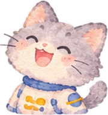

<!-- =====================================================================
     ASTROFRONTIER STORY ADD-ON
     Added below the original page. Nothing above this line was changed.
     · Fills the story engine with "The Forgotten Heroes of Mars"
     · Draws a 2D animated scene in each scene's video slot
       (set  video:'your-file.mp4'  on a scene to use your own video instead)
     · Adds storybook mini-games between pages
     ===================================================================== -->
<style>
#af-art{position:absolute;inset:0;width:100%;height:100%;display:block;z-index:1}
.af-vid{position:absolute;inset:0;width:100%;height:100%;object-fit:cover;z-index:2;background:#000}
#scroll-hint-inner{bottom:6px}
#story-dots{flex-wrap:wrap;gap:4px 5px;max-width:640px}
#story-dots .story-dot{width:7px;height:7px}
#story-dots .story-dot.active{width:20px}
.af-say{display:flex;gap:10px;align-items:flex-start;max-width:600px;margin:0 0 12px}
.af-ava{flex:none;width:42px;height:42px;border-radius:50%;background:#2b2160;border:2px solid #ffe7a0;display:block}
.af-bub{background:#fbf7ff;color:#2a1f4a;border-radius:4px 18px 18px 18px;padding:8px 14px 10px;font-weight:700;font-size:clamp(.84rem,1.8vw,.97rem);line-height:1.45;box-shadow:0 6px 22px rgba(0,0,0,.35)}
.af-bub b{display:block;font-family:var(--font-head);font-weight:400;font-size:.7rem;color:#7b5cd6;letter-spacing:.08em;text-transform:uppercase;margin-bottom:1px}
.af-bub p{margin:0}.af-bub p+p{margin-top:4px}
.af-narr{font-size:clamp(.88rem,2vw,1rem);color:var(--fg2);font-weight:600;line-height:1.65;max-width:600px;margin:0 0 14px}
.af-fact{display:flex;gap:8px;align-items:flex-start;width:fit-content;max-width:600px;background:rgba(6,214,160,.1);border:1.5px solid rgba(6,214,160,.35);color:#c4f7e8;border-radius:12px;padding:6px 12px;font-size:.78rem;font-weight:700;line-height:1.45;margin:0 0 14px}
.af-fact i{font-style:normal;color:var(--teal);flex:none}
.af-teaser{display:flex;align-items:center;gap:12px;width:fit-content;max-width:600px;background:#34c6c0;color:#062a2e;border-radius:26px 26px 26px 8px;padding:8px 10px 8px 12px;margin:0 0 16px;box-shadow:0 8px 26px rgba(52,198,192,.28)}
.af-teaser b{display:block;font-family:var(--font-head);font-weight:400;font-size:1.02rem;line-height:1.15}
.af-teaser span{display:block;font-size:.78rem;font-weight:700;line-height:1.35;opacity:.85}
.af-chest{flex:none;width:44px;height:38px;display:block}
.af-play{flex:none;font-family:var(--font-head);font-size:.95rem;border:0;border-radius:999px;padding:10px 16px;background:#6c4cf0;color:#fff;cursor:pointer;box-shadow:0 3px 0 #4a2fc2;transition:transform .15s}
.af-play:hover{transform:translateY(-2px)}
.af-play:focus-visible,.af-arrow:focus-visible,.af-x:focus-visible,.af-word:focus-visible,.af-slot:focus-visible,.af-pic:focus-visible,.af-sent:focus-visible,.af-card:focus-visible,.af-btn:focus-visible{outline:3px solid var(--accent);outline-offset:3px}

/* ---------- storybook game overlay ---------- */
.af-game{position:absolute;inset:0;z-index:20;display:none;align-items:center;justify-content:center;padding:max(64px,calc(env(safe-area-inset-top,0px) + 58px)) 12px max(12px,env(safe-area-inset-bottom,0px));background:rgba(4,6,20,.74);backdrop-filter:blur(6px)}
.af-game.on{display:flex}
.af-book{position:relative;width:min(1000px,100%);height:min(660px,100%);border-radius:26px;overflow:hidden;border:7px solid #f4ead2;box-shadow:0 20px 60px rgba(0,0,0,.6);display:flex;flex-direction:column;
  background:radial-gradient(120% 70% at 50% 0%,#ffb27a 0%,#e9865a 34%,#b9543a 70%,#7b2f26 100%);color:#2a1f4a}
.af-book::after{content:"";position:absolute;left:0;right:0;bottom:0;height:16%;pointer-events:none;
  background:radial-gradient(60% 120% at 12% 100%,#6e2c1f 60%,transparent 61%),radial-gradient(40% 90% at 52% 100%,#7d3322 60%,transparent 61%),radial-gradient(55% 110% at 92% 100%,#62261b 60%,transparent 61%)}
.af-g-top{position:relative;z-index:2;display:flex;align-items:center;gap:10px;padding:10px 12px}
.af-g-top .af-chest{width:40px;height:34px;filter:drop-shadow(0 2px 0 rgba(0,0,0,.25))}
.af-g-name{font-family:var(--font-head);font-size:clamp(.95rem,2.4vw,1.2rem);color:#fff;text-shadow:0 2px 0 rgba(0,0,0,.25);margin-right:auto;min-width:0}
.af-score{font-family:var(--font-head);font-size:.95rem;background:#1c2a66;color:#fff;border:2px solid #fff;border-radius:999px;padding:4px 12px;white-space:nowrap}
.af-score b{font-weight:400;color:var(--accent)}
.af-x{width:40px;height:40px;border-radius:50%;border:0;background:#fff;color:#2a1f4a;font-size:1rem;cursor:pointer;flex:none;box-shadow:0 3px 0 rgba(0,0,0,.2)}
.af-g-body{position:relative;z-index:1;flex:1;min-height:0;overflow:auto;padding:4px clamp(10px,3vw,26px) 18px;display:flex;flex-direction:column}
.af-card-in{margin:auto;position:relative;background:#fff;border-radius:22px;padding:40px 26px 50px;max-width:460px;width:100%;text-align:center;box-shadow:0 12px 40px rgba(0,0,0,.3)}
.af-card-in .af-chest-badge{position:absolute;left:50%;top:-30px;transform:translateX(-50%);width:62px;height:62px;border-radius:50%;background:#fff;display:grid;place-items:center;box-shadow:0 4px 14px rgba(0,0,0,.2)}
.af-card-in h3{font-family:var(--font-head);font-weight:400;font-size:1.35rem;margin:0 0 8px;color:#3b2a8a}
.af-card-in p{margin:0;font-weight:700;color:#3c3561;line-height:1.5}
.af-card-in .af-arrow{position:absolute;left:50%;bottom:-24px;transform:translateX(-50%)}
.af-arrow{width:50px;height:50px;border-radius:50%;border:4px solid #fff;background:#6c4cf0;color:#fff;font-size:1.3rem;cursor:pointer;display:grid;place-items:center;box-shadow:0 4px 12px rgba(0,0,0,.3)}
.af-hint{margin:10px auto 0;text-align:center;font-weight:800;font-size:.86rem;color:#fff;text-shadow:0 1px 2px rgba(0,0,0,.4);max-width:640px;min-height:2.6em}
.af-shake{animation:afShake .4s}
@keyframes afShake{20%{transform:translateX(-7px)}40%{transform:translateX(7px)}60%{transform:translateX(-5px)}80%{transform:translateX(4px)}}
.af-btn{font-family:var(--font-head);font-size:1rem;border:0;border-radius:999px;padding:11px 20px;cursor:pointer;background:#6c4cf0;color:#fff;box-shadow:0 3px 0 #4a2fc2}
.af-btn.alt{background:#fff;color:#3b2a8a;box-shadow:0 3px 0 #cfc6ef}

/* label the picture */
.af-label{display:grid;grid-template-columns:minmax(0,1fr) 170px;gap:14px;align-items:center;flex:1;min-height:0}
.af-pic-wrap{position:relative;width:100%;aspect-ratio:4/3;max-height:100%;border-radius:18px;overflow:hidden;border:4px solid #b5f36b;background:#ffcf9c}
.af-pic-wrap canvas{position:absolute;inset:0;width:100%;height:100%}
.af-slot{position:absolute;transform:translate(-50%,-50%);min-width:98px;height:30px;padding:0 10px;border-radius:8px;border:2px dashed #6c4cf0;background:rgba(255,255,255,.92);font:700 .8rem var(--font-body);color:#2a1f4a;cursor:pointer;white-space:nowrap}
.af-slot.ok{border:2px solid #10a37f;background:#d8fbe9;cursor:default}
.af-slot.sel{background:#fff3c4;border-style:solid}
.af-bank{display:flex;flex-direction:column;gap:8px}
.af-word{font:800 .88rem var(--font-body);border:0;border-radius:8px;padding:9px 10px;background:#ffb43a;color:#3a1d00;cursor:pointer;box-shadow:0 3px 0 #c97f12;text-align:center}
.af-word.sel{background:#fff;outline:3px solid #6c4cf0}
.af-word.used{visibility:hidden}
@media(max-width:700px){.af-label{grid-template-columns:1fr}.af-bank{flex-direction:row;flex-wrap:wrap;justify-content:center}.af-word{flex:1 1 40%}.af-slot{min-width:74px;font-size:.7rem;height:26px;padding:0 6px}}

/* wipe the dust */
.af-dust{position:relative;flex:1;min-height:220px;display:flex;flex-direction:column;gap:10px}
.af-dust-c{position:relative;flex:1;min-height:200px;border-radius:18px;overflow:hidden;border:4px solid #fff}
.af-dust-c canvas{position:absolute;inset:0;width:100%;height:100%;touch-action:none;cursor:grab}
.af-meter{display:flex;align-items:center;gap:10px;background:#fff;border-radius:999px;padding:6px 14px;width:min(420px,100%);margin:0 auto;font-family:var(--font-head)}
.af-meter i{flex:1;height:14px;border-radius:8px;background:#e8e1f8;overflow:hidden;display:block}
.af-meter em{display:block;height:100%;width:60%;background:linear-gradient(90deg,#ffd166,#06d6a0);transition:width .2s}
.af-meter b{font-weight:400;min-width:3.2em;text-align:right;color:#3b2a8a}

/* read and match */
.af-match{display:flex;flex-direction:column;gap:14px;flex:1;justify-content:center}
.af-pics{display:grid;grid-template-columns:repeat(4,minmax(0,1fr));gap:12px}
.af-pic{position:relative;border:4px solid #fff;border-radius:14px;overflow:hidden;padding:0;background:#fff;cursor:pointer;box-shadow:0 4px 0 rgba(0,0,0,.18);text-align:center}
.af-pic canvas{display:block;width:100%;aspect-ratio:3/2}
.af-pic span{display:block;font:800 .76rem/1.25 var(--font-body);color:#2a1f4a;padding:5px 4px 6px}
.af-pic.sel{border-color:#ffd166;transform:translateY(-3px)}
.af-pic.ok{border-color:#10a37f;cursor:default}
.af-num{position:absolute;top:6px;left:6px;width:24px;height:24px;border-radius:50%;background:#10a37f;color:#fff;font:400 .8rem var(--font-head);display:grid;place-items:center}
.af-sents{display:flex;flex-wrap:wrap;gap:8px;justify-content:center}
.af-sent{font:700 .84rem/1.35 var(--font-body);border:0;border-radius:999px;padding:8px 14px;background:#fff;color:#2a1f4a;cursor:pointer;box-shadow:0 3px 0 rgba(0,0,0,.18);display:inline-flex;align-items:center;gap:8px;text-align:left}
.af-sent.sel{background:#fff3c4}
.af-sent.ok{background:#d8fbe9;cursor:default}
.af-sent .af-num{position:static;flex:none;width:22px;height:22px}
@media(max-width:700px){.af-pics{grid-template-columns:repeat(2,minmax(0,1fr))}.af-sent{border-radius:14px}}

/* odd one out */
.af-odd{display:flex;flex-direction:column;align-items:center;gap:16px;flex:1;justify-content:center}
.af-q{background:#fff;border-radius:16px;padding:10px 18px;font-family:var(--font-head);font-size:1.05rem;color:#3b2a8a;text-align:center}
.af-cards{display:flex;flex-wrap:wrap;gap:14px;justify-content:center;width:100%}
.af-card{min-width:150px;flex:0 1 200px;min-height:70px;padding:12px 16px;border:0;border-radius:16px;background:#fff;color:#2a1f4a;font:800 1rem/1.25 var(--font-body);cursor:pointer;box-shadow:0 5px 0 rgba(0,0,0,.2);transition:transform .15s}
.af-card:hover{transform:translateY(-3px)}
.af-card.ok{background:#bff3db;box-shadow:0 5px 0 #10a37f}
.af-card.no{background:#ffd9cf}
.af-card.dim{opacity:.55}
.af-explain{background:rgba(255,255,255,.95);border-radius:14px;padding:10px 16px;font-weight:700;color:#2a1f4a;max-width:560px;text-align:center;line-height:1.5}
.af-res{margin:auto;text-align:center;background:#fff;border-radius:22px;padding:24px 26px;max-width:460px;width:100%;box-shadow:0 12px 40px rgba(0,0,0,.3)}
.af-res .af-stars{font-size:2.6rem;letter-spacing:6px;color:#ffc233;-webkit-text-stroke:2px #3b2a8a;line-height:1.1}
.af-res .af-stars i{font-style:normal;color:#e6e0f4}
.af-res h3{font-family:var(--font-head);font-weight:400;font-size:1.5rem;color:#3b2a8a;margin:8px 0 6px}
.af-res p{margin:0 0 16px;font-weight:700;color:#3c3561;line-height:1.5}
.af-res .af-row{display:flex;gap:10px;justify-content:center;flex-wrap:wrap}
@media (prefers-reduced-motion:reduce){.af-shake{animation:none}}
/* ---- full-screen scenes: hide the text block, voices tell the story ---- */
#story-engine .story-content{display:none!important}
#story-engine #scroll-hint-inner{display:none!important}
#story-engine .story-overlay{background:linear-gradient(to top,rgba(7,9,30,.35),rgba(7,9,30,0) 30%)}
.af-ui>*{position:absolute;z-index:6}
.af-ctrl{top:max(70px,calc(env(safe-area-inset-top,0px) + 70px));left:max(16px,env(safe-area-inset-left,0px));display:flex;gap:8px}
.af-ctrl button{width:42px;height:42px;border-radius:50%;background:rgba(7,9,30,.55);backdrop-filter:blur(10px);border:1.5px solid rgba(255,255,255,.22);color:#fff;font:700 .85rem var(--font-body);cursor:pointer;display:grid;place-items:center;transition:all .2s}
.af-ctrl button:hover{border-color:var(--accent);background:rgba(255,209,102,.18)}
.af-ctrl button.off{opacity:.45;text-decoration:line-through}
.af-ctrl button:disabled{opacity:.25;cursor:default}
.af-ctrl button:focus-visible,.af-skip:focus-visible{outline:3px solid var(--accent);outline-offset:3px}
.af-chip{top:max(122px,calc(env(safe-area-inset-top,0px) + 122px));left:max(16px,env(safe-area-inset-left,0px));max-width:min(420px,calc(100% - 90px));background:rgba(7,9,30,.6);backdrop-filter:blur(10px);border:1.5px solid rgba(255,209,102,.35);border-radius:14px;padding:7px 14px 9px;opacity:0;transform:translateY(-6px);transition:opacity .6s,transform .6s;pointer-events:none}
.af-chip.on{opacity:1;transform:none}
.af-chip small{display:block;font-size:.66rem;font-weight:800;color:var(--accent);letter-spacing:.08em;text-transform:uppercase}
.af-chip b{display:block;font-family:var(--font-head);font-weight:400;font-size:clamp(1rem,2.6vw,1.3rem);color:#fff;line-height:1.2}
.af-speaker{left:max(16px,env(safe-area-inset-left,0px));bottom:max(20px,calc(env(safe-area-inset-bottom,0px) + 20px));width:76px;height:76px;opacity:0;transform:scale(.7);transition:opacity .35s,transform .35s;pointer-events:none}
.af-speaker.on{opacity:1;transform:none}
.af-speaker canvas{position:relative;z-index:1;width:76px;height:76px;border-radius:50%;border:3px solid #ffe7a0;box-shadow:0 6px 20px rgba(0,0,0,.4);display:block}
.af-speaker i{position:absolute;left:0;top:0;width:76px;height:76px;border-radius:50%;border:2px solid rgba(255,231,160,.7);animation:afWave 1.4s ease-out infinite;pointer-events:none}
.af-speaker i:nth-of-type(2){animation-delay:.45s}.af-speaker i:nth-of-type(3){animation-delay:.9s}
@keyframes afWave{from{transform:scale(1);opacity:.8}to{transform:scale(1.7);opacity:0}}
.af-sub{left:50%;bottom:max(22px,calc(env(safe-area-inset-bottom,0px) + 22px));transform:translateX(-50%);width:min(760px,calc(100% - 200px));background:rgba(7,9,30,.78);backdrop-filter:blur(8px);border-radius:14px;padding:9px 16px 11px;color:#fff;font-weight:700;font-size:clamp(.9rem,2vw,1.08rem);line-height:1.45;text-align:center;opacity:0;transition:opacity .3s;pointer-events:none}
.af-sub.on{opacity:1}
.af-sub b{display:block;font-family:var(--font-head);font-weight:400;font-size:.72rem;letter-spacing:.08em;text-transform:uppercase;color:var(--sky)}
.af-sub b.shasha{color:#c9b6ff}
.af-sub b.computer{color:#7dffcf;font-family:"Courier New",monospace;letter-spacing:.14em}
.af-sub b.miaw{color:#9fd7ff}
@media(max-width:700px){.af-sub{width:calc(100% - 32px);bottom:max(108px,calc(env(safe-area-inset-bottom,0px) + 108px))}}
.af-ongame{left:max(14px,env(safe-area-inset-left,0px));top:50%;transform:translate(-30px,-50%);display:flex;flex-direction:column;align-items:center;gap:10px;opacity:0;pointer-events:none;transition:opacity .5s,transform .6s cubic-bezier(.34,1.56,.64,1)}
.af-ongame.on{opacity:1;pointer-events:auto;transform:translate(0,-50%)}
.af-gbtn{position:relative;width:clamp(120px,15vw,170px);aspect-ratio:221/226;padding:0;border:0;background:none;cursor:pointer;animation:afFloat 3s ease-in-out infinite;-webkit-tap-highlight-color:transparent}
.af-gbtn img,.af-gbtn-fallback{position:relative;z-index:1;display:block;width:100%;height:100%;object-fit:contain;filter:drop-shadow(0 0 6px rgba(255,209,102,.95)) drop-shadow(0 0 18px rgba(255,209,102,.6));animation:afGlow 1.8s ease-in-out infinite;transition:transform .2s}
.af-gbtn-fallback{display:grid;place-items:center}.af-gbtn-fallback .af-chest{width:70%;height:auto}
.af-gbtn:hover img,.af-gbtn:focus-visible img{transform:scale(1.07) rotate(-3deg)}
.af-gbtn-glow{position:absolute;inset:6%;border-radius:50%;background:radial-gradient(circle,rgba(255,209,102,.55),rgba(255,209,102,0) 70%);animation:afGlowRing 1.8s ease-in-out infinite}
.af-gbtn-say{position:absolute;z-index:2;left:88%;top:6%;width:max-content;max-width:min(230px,52vw);background:#34c6c0;color:#062a2e;border-radius:18px 18px 18px 4px;padding:8px 12px;text-align:left;box-shadow:0 8px 22px rgba(0,0,0,.35)}
.af-gbtn-say b{display:block;font-family:var(--font-head);font-weight:400;font-size:1rem;line-height:1.15}
.af-gbtn-say .af-ongame-t{display:block;font-weight:700;font-size:.74rem;line-height:1.35;opacity:.85;margin-top:2px}
.af-gbtn:focus-visible{outline:3px solid var(--accent);outline-offset:4px;border-radius:24px}
@keyframes afGlow{0%,100%{filter:drop-shadow(0 0 5px rgba(255,209,102,.9)) drop-shadow(0 0 12px rgba(255,209,102,.45))}50%{filter:drop-shadow(0 0 9px rgba(255,230,150,1)) drop-shadow(0 0 28px rgba(255,209,102,.85))}}
@keyframes afGlowRing{0%,100%{transform:scale(.9);opacity:.6}50%{transform:scale(1.15);opacity:1}}
@media(max-width:700px){.af-ongame{top:44%}.af-gbtn{width:112px}.af-gbtn-say{max-width:min(200px,calc(100vw - 150px))}}
@media (prefers-reduced-motion:reduce){.af-gbtn,.af-gbtn img,.af-gbtn-glow{animation:none}}
/* ---- characters floating over a scene video ---- */
.af-cast{position:absolute;inset:0;z-index:2;pointer-events:none;overflow:hidden}
.af-castimg{position:absolute;transform:translate(-50%,-100%);width:auto;max-width:none;filter:drop-shadow(0 10px 14px rgba(40,20,70,.35));animation:afCastFloat 3.6s ease-in-out infinite;user-select:none}
.af-castimg.talk{animation:afCastTalk .5s ease-in-out infinite}
@keyframes afCastFloat{0%,100%{translate:0 0}50%{translate:0 -2.2%}}
@keyframes afCastTalk{0%,100%{translate:0 0;scale:1}50%{translate:0 -1.6%;scale:1.025}}
@media (prefers-reduced-motion:reduce){.af-castimg,.af-castimg.talk{animation:none}}
/* ---- characters on the scene: name tags, tap, hide ---- */
.af-cast{z-index:2!important}
.af-castfig{position:absolute;transform:translate(-50%,-100%);aspect-ratio:auto;padding:0;border:0;background:none;cursor:pointer;pointer-events:auto;display:flex;flex-direction:column;align-items:center;transition:left .9s cubic-bezier(.34,1.3,.64,1),top .9s,height .9s;-webkit-tap-highlight-color:transparent}
.af-castfig .af-castimg{position:static;transform:none;height:100%;width:auto}
.af-castfig.hiding .af-nametag{transform:translate(12%,60%)}
.af-castfig:focus-visible{outline:3px solid var(--accent);outline-offset:4px;border-radius:16px}
.af-nametag{position:absolute;left:50%;bottom:-6px;transform:translate(-50%,100%);white-space:nowrap;font:400 clamp(.72rem,1.6vw,.9rem) var(--font-head);color:#fff;background:rgba(43,33,96,.82);border:2px solid #ffe7a0;border-radius:999px;padding:3px 12px;box-shadow:0 4px 12px rgba(0,0,0,.3);pointer-events:none}
.af-castfig[data-who="miaw"] .af-nametag{border-color:#9fd7ff}
.af-castfig.tap .af-castimg{animation:afTap .55s ease-out}
.af-castfig.tap .af-nametag{animation:afTagPop .55s ease-out}
@keyframes afTap{0%{scale:1}35%{scale:1.08;translate:0 -5%}70%{scale:.97}100%{scale:1}}
@keyframes afTagPop{0%,100%{scale:1}40%{scale:1.2;background:#6c4cf0}}
/* ---- speech bubble over the talking character ---- */
.af-bubble{position:absolute;z-index:7;transform:translate(-50%,calc(-100% - 14px)) scale(.8);transform-origin:calc(50% + var(--tail,0px)) 100%;width:min(340px,80vw);text-align:left;background:#fff;color:#2a1f4a;border-radius:20px;padding:9px 16px 11px;box-shadow:0 10px 30px rgba(0,0,0,.35);opacity:0;pointer-events:none;transition:opacity .25s,transform .3s cubic-bezier(.34,1.56,.64,1)}
.af-bubble.on{opacity:1;transform:translate(-50%,calc(-100% - 14px)) scale(1)}
.af-bubble::after{content:"";position:absolute;left:calc(50% + var(--tail,0px));bottom:-11px;transform:translateX(-50%);border:12px solid transparent;border-top-color:#fff;border-bottom:0}
.af-bubble b{display:block;font-family:var(--font-head);font-weight:400;font-size:.72rem;letter-spacing:.06em;text-transform:uppercase;color:#7b5cd6}
.af-bubble[data-who="miaw"] b{color:#2f6bff}
.af-bubble span{display:block;font-weight:800;font-size:clamp(.92rem,2.2vw,1.12rem);line-height:1.4;min-height:1.4em}
/* ---- glowing screen sign ---- */
.af-sign{position:absolute;z-index:7;transform:translate(-50%,-50%) scale(.85);background:rgba(5,25,45,.88);color:#7dffcf;border:2px solid #34c6c0;border-radius:12px;padding:10px 18px;font:700 clamp(.85rem,2.2vw,1.2rem)/1.2 "Courier New",monospace;letter-spacing:.12em;box-shadow:0 0 24px rgba(52,198,192,.7),inset 0 0 18px rgba(52,198,192,.25);text-shadow:0 0 8px rgba(125,255,207,.8);opacity:0;pointer-events:none;transition:opacity .3s,transform .4s;white-space:nowrap}
.af-sign.on{opacity:1;transform:translate(-50%,-50%) scale(1)}
/* ---- soft blur when the page changes ---- */
.af-blurin{animation:afBlurIn 1s ease-out}
@keyframes afBlurIn{0%{filter:blur(14px) brightness(1.15);opacity:.6}100%{filter:none;opacity:1}}
/* ---- Miaw Miaw assistant: picture with a glowing edge ---- */
.af-pal-btn{width:auto!important;height:auto!important;border:0!important;background:none!important;box-shadow:none!important;border-radius:0!important;padding:0!important}
.af-pal-img{display:block;width:clamp(78px,9vw,104px);height:auto;filter:drop-shadow(0 0 4px rgba(255,231,160,.95)) drop-shadow(0 0 14px rgba(116,194,225,.8));animation:afPalGlow 2.4s ease-in-out infinite}
@keyframes afPalGlow{0%,100%{filter:drop-shadow(0 0 3px rgba(255,231,160,.9)) drop-shadow(0 0 10px rgba(116,194,225,.6))}50%{filter:drop-shadow(0 0 6px rgba(255,231,160,1)) drop-shadow(0 0 22px rgba(116,194,225,.95))}}
.af-pal-tag{bottom:2px!important;font-size:.56rem!important;padding:1px 7px!important;box-shadow:0 0 10px rgba(6,214,160,.7)}
.af-pal-himg{width:48px;height:48px;object-fit:contain;flex:none;filter:drop-shadow(0 0 6px rgba(116,194,225,.7))}
@media (prefers-reduced-motion:reduce){.af-pal-img,.af-blurin,.af-castfig.tap .af-castimg{animation:none}}


.af-skip{font-family:var(--font-head);font-size:1rem;border:1.5px solid rgba(255,255,255,.5);border-radius:999px;padding:12px 22px;background:rgba(7,9,30,.55);color:#fff;cursor:pointer}
@media (prefers-reduced-motion:reduce){.af-speaker i{animation:none;display:none}}
/* ---- next-page hint (shown only after a page has finished) ---- */
.af-next{left:50%;bottom:max(18px,calc(env(safe-area-inset-bottom,0px) + 18px));transform:translate(-50%,10px);display:flex;flex-direction:column;align-items:center;gap:2px;background:none;border:0;color:#fff;font:800 .72rem var(--font-body);letter-spacing:.08em;text-transform:uppercase;cursor:pointer;opacity:0;pointer-events:none;transition:opacity .5s,transform .5s;text-shadow:0 2px 8px rgba(0,0,0,.6)}
.af-next.on{opacity:.9;pointer-events:auto;transform:translate(-50%,0)}
.af-next span{background:rgba(7,9,30,.55);border:1.5px solid rgba(255,209,102,.45);border-radius:999px;padding:6px 14px}
.af-next i{font-style:normal;font-size:1.2rem;color:var(--accent);animation:arrowBounce 1.6s ease-in-out infinite}
.af-sub.on ~ .af-next.on{opacity:0}
@media(min-width:721px){.af-next{left:110px;transform:translate(0,10px);align-items:flex-start}.af-next.on{transform:none}}
/* ---- Miaw Miaw assistant ---- */
.af-pal{position:fixed;right:max(16px,env(safe-area-inset-right,0px));bottom:max(18px,calc(env(safe-area-inset-bottom,0px) + 18px));z-index:520;display:flex;flex-direction:column;align-items:flex-end;gap:10px;font-family:var(--font-body)}
.af-pal.af-hide{display:none}
.af-pal-btn{position:relative;width:70px;height:70px;border-radius:50%;padding:0;border:3px solid #ffe7a0;background:#141a40;cursor:pointer;box-shadow:0 6px 24px rgba(0,0,0,.45),0 0 0 6px rgba(116,194,225,.15);animation:afFloat 3.4s ease-in-out infinite;transition:transform .2s}
.af-pal-btn:hover{transform:scale(1.08)}
.af-pal-btn canvas{width:100%;height:100%;border-radius:50%;display:block}
.af-pal-tag{position:absolute;left:50%;bottom:-9px;transform:translateX(-50%);white-space:nowrap;background:#06d6a0;color:#04221b;font:800 .6rem var(--font-body);letter-spacing:.06em;text-transform:uppercase;border-radius:999px;padding:2px 8px}
@keyframes afFloat{0%,100%{translate:0 0}50%{translate:0 -8px}}
.af-pal-panel{order:-1;width:min(390px,calc(100vw - 32px));max-height:min(72vh,620px);overflow:auto;background:#0f1640;color:#edf0ff;border:2px solid rgba(116,194,225,.35);border-radius:20px;box-shadow:0 20px 60px rgba(0,0,0,.6);padding:0 0 14px}
.af-pal-panel[hidden]{display:none}
.af-pal-head{position:sticky;top:0;z-index:1;display:flex;gap:12px;align-items:center;padding:12px 14px;background:linear-gradient(#18215a,#141c4c);border-bottom:1.5px solid rgba(116,194,225,.2)}
.af-pal-head canvas{width:48px;height:48px;border-radius:50%;border:2px solid #ffe7a0;flex:none}
.af-pal-head b{display:block;font-family:var(--font-head);font-weight:400;font-size:1.05rem;color:var(--accent)}
.af-pal-head span{display:block;font-size:.75rem;color:var(--fg2);font-weight:700}
.af-pal-x{margin-left:auto;width:32px;height:32px;border-radius:50%;border:1.5px solid rgba(255,255,255,.25);background:transparent;color:#fff;cursor:pointer;flex:none}
.af-pal-now{margin:12px 14px 4px;background:rgba(6,214,160,.08);border:1.5px solid rgba(6,214,160,.35);border-radius:14px;padding:10px 12px}
.af-pal-now small{display:block;font-size:.66rem;font-weight:800;color:var(--teal);letter-spacing:.08em;text-transform:uppercase}
.af-pal-now>b{display:block;font-family:var(--font-head);font-weight:400;font-size:1.05rem;margin:2px 0 4px}
.af-dl{margin:0;display:grid;gap:4px}
.af-dl div{display:grid;grid-template-columns:118px minmax(0,1fr);gap:8px;font-size:.8rem;line-height:1.4;padding:3px 0;border-bottom:1px dashed rgba(143,163,208,.18)}
.af-dl dt{color:var(--fg2);font-weight:700}.af-dl dd{margin:0;font-weight:700}
.af-pal-tabs{display:flex;gap:6px;flex-wrap:wrap;padding:10px 14px 6px}
.af-pal-tabs button{border:1.5px solid rgba(116,194,225,.3);background:transparent;color:var(--fg2);border-radius:999px;padding:5px 11px;font:800 .74rem var(--font-body);cursor:pointer}
.af-pal-tabs button[aria-selected="true"]{background:var(--accent);border-color:var(--accent);color:#1a0a00}
.af-pal-body{padding:4px 14px 0}
.af-pal-body h4{font-family:var(--font-head);font-weight:400;font-size:1.05rem;margin:6px 0}
.af-pal-body h5{font-size:.72rem;letter-spacing:.08em;text-transform:uppercase;color:var(--teal);margin:14px 0 6px}
.af-tl{list-style:none;margin:0;padding:0 0 0 12px;border-left:2px solid rgba(255,209,102,.4);display:grid;gap:8px}
.af-tl li{font-size:.8rem;line-height:1.45;position:relative}
.af-tl li::before{content:"";position:absolute;left:-18px;top:5px;width:9px;height:9px;border-radius:50%;background:var(--accent)}
.af-tl b{display:block;color:var(--accent);font-size:.72rem}
.af-cmp{width:100%;border-collapse:collapse;font-size:.76rem;line-height:1.35}
.af-cmp th,.af-cmp td{padding:6px 5px;border-bottom:1px dashed rgba(143,163,208,.2);text-align:left;vertical-align:top}
.af-cmp tbody th{color:var(--fg2);font-weight:700;width:30%}.af-cmp td{font-weight:700}
.af-note{font-size:.74rem;color:var(--fg2);margin:8px 0 0;line-height:1.5}
.af-note a,.af-src a{color:var(--sky)}
.af-src{list-style:none;margin:0;padding:0;display:grid;gap:8px}
.af-src li{font-size:.82rem;line-height:1.4}.af-src span{display:block;font-size:.7rem;color:var(--fg2)}
.af-live{font-size:.78rem;color:var(--fg2)}
.af-thumbs{display:grid;grid-template-columns:repeat(2,minmax(0,1fr));gap:8px}
.af-thumbs a{display:block;color:#edf0ff;text-decoration:none;background:#0a1030;border-radius:10px;overflow:hidden;border:1px solid rgba(116,194,225,.2)}
.af-thumbs img{display:block;width:100%;aspect-ratio:4/3;object-fit:cover}
.af-thumbs span{display:block;font-size:.66rem;font-weight:700;padding:4px 6px;white-space:nowrap;overflow:hidden;text-overflow:ellipsis}
.af-pal-btn:focus-visible,.af-pal-x:focus-visible,.af-pal-tabs button:focus-visible,.af-next:focus-visible{outline:3px solid var(--accent);outline-offset:3px}
@media(max-width:700px){.af-pal-btn{width:60px;height:60px}.af-dl div{grid-template-columns:100px minmax(0,1fr)}}
@media (prefers-reduced-motion:reduce){.af-pal-btn,.af-next i{animation:none}}


</style>
<script>
(function(){
'use strict';
function afMain(){

/* =========================================================
   STORY: "ASTROFRONTIER: The Forgotten Heroes of Mars"
   Words come from the team's script. Facts come from the
   team's research page (NASA / JPL sources).
   pre  = Shasha's lines shown before the narration
   desc = narration (shown in the original #scene-desc)
   post = lines after the narration  {s:'Shasha'} or {n:'Narrator'} or {m:'Miaw Miaw'}
   (in pre, a plain string is Shasha and {m:'Meow!'} is Miaw Miaw)
   art  = which 2D animated scene to draw
   video= optional: your own video file for this scene (plays muted, on repeat)
   cast = optional: character pictures that float on top of the scene
   music= optional: a MIDI file (.mid) to play on this page instead of the built-in mood music
   track= optional: a recorded music file (.mp3); it loops on this page and cross-fades when the page changes
   quiet= true: the narrator does not read desc on this page
   post items can also be {sign:'TEXT', x, y} (a glowing screen), {m:'Meow', act:'hide'} (Miaw Miaw hides behind Shasha),
     {c:'...'} (the rocket's computer voice) or {video:'file.mp4', hideCast:true, sfx:'rumble'} (blur into another video mid-page)
   captions= true: always show who is talking at the bottom when no character is on screen
   game = a storybook game offered on this page
   ========================================================= */
const AF_STORY = [
 {badge:'Prologue · Scene 1.1', title:'🌙 A little girl with a big dream', art:'bedroom', track:'scene1-music.mp3',
  video:'scene1-bedroom.mp4',
  /* pictures floating on top of the video (not buttons). x = centre across, y = feet from top, h = height (all % of the screen); xm/ym/hm = phone */
  cast:[{src:'shasha-stand.webp', who:'shasha', x:50, y:93, h:46, xm:36, ym:84, hm:30},
        {src:'miaw-wave.webp', who:'miaw', x:66, y:93, h:27, xm:72, ym:84, hm:17}],
  desc:"Somewhere on Earth, there lived a little girl named Shasha. She was a dreamer, a storyteller and a curious explorer at heart. Every night, she would look up at the stars and wonder what mysteries were hiding beyond the clouds."},
 {badge:'Act 2 · Scene 2', title:'🚀 The mysterious rocket', art:'bedroom2', video:'scene2-rocket.mp4', track:'scene2-music.mp3',
  cast:[{src:'shasha-stand.webp', who:'shasha', x:50, y:93, h:46, xm:36, ym:84, hm:30},
        {src:'miaw-wave.webp', who:'miaw', x:66, y:93, h:27, xm:72, ym:84, hm:17, hide:{x:57, y:91, h:22, xm:47, ym:83, hm:14}}],
  quiet:true,   /* this page has no narrator: the characters tell it */
  desc:"A bright light appears outside Shasha's window. A small futuristic rocket, with a rounded glass cockpit, glowing blue engines and a silver body, lands in her garden.",
  post:[{m:"Meow?!"},
        {s:"Wait... what's that sound?"},
        {s:"WHOA! MIAW MIAW! LOOK!"},
        {s:"Is that... a ROCKET?!"},
        {m:"Mew...", act:'hide'},
        {s:"Don't be scared! Maybe it's here to take us on an adventure!"},
        {sign:"ROCKET DESTINATION: MARS", x:62, y:40, xm:62, ym:30},
        {s:"MARS?! This is our chance!"},
        {s:"Come on, Miaw Miaw! We're going to space!"}]},
 {badge:'Act 2 · Scene 3', title:'🔥 Three, two, one... Liftoff!', art:'launch', video:'scene3-garden.mp4', track:'scene3-music.mp3',
  cast:[{src:'shasha-stand.webp', who:'shasha', x:24, y:95, h:44, xm:24, ym:84, hm:28},
        {src:'miaw-wave.webp', who:'miaw', x:37, y:95, h:26, xm:68, ym:84, hm:16}],
  quiet:true, captions:true,   /* no narrator; after the countdown only captions show who is talking */
  desc:"Shasha and Miaw Miaw climb into the rocket. The countdown begins, the engines ignite and the rocket rises into the sky, past the clouds and out into space, towards the distant red planet.",
  post:[{s:"Okay, Miaw Miaw! Are you ready?"},
        {m:"Mrrr... mew?"},
        {s:"Don't worry! I'll take care of you."},
        {c:"Destination confirmed. Mars mission commencing."},
        {c:"Ten... nine... eight..."},
        {s:"This is really happening!"},
        {c:"Three... two... one..."},
        {video:'scene3-liftoff.mp4', hideCast:true, sfx:'rumble'},
        {c:"LIFTOFF!"},
        {m:"MEEEOW!"},
        {s:"WHOOOO! WE'RE FLYING!"},
        {video:'scene3-space.mp4'},
        {s:"Wow... Miaw Miaw, look at Earth! It's so beautiful!"},
        {m:"Mrrp!"},
        {s:"Everything looks so tiny from up here. I can't believe we're actually travelling through space!"},
        {c:"Approaching destination. Mars is now within visual range."},
        {s:"WE'RE HERE! MIAW MIAW, WE'RE REALLY GOING TO MARS!"}]},
 {badge:'Prologue · Scene 1.2', title:'✨ The magical journey begins', art:'portal',
  desc:"Suddenly, a tiny golden light appears on the picture of Mars. The light spreads across the pages, floating into the air like thousands of glowing fireflies. A magical circular portal opens above her book.",
  post:[{s:"Whoa! What's happening?"},{m:"Meow?!"},{s:"Come on, Miaw Miaw! I think we're going on an adventure!"},{m:"Meow!"}]},
 {badge:'AstroFrontier presents', title:'🔴 The Forgotten Heroes of Mars', art:'title',
  desc:"A Journey Beyond the Stars. An AstroFrontier Story."},

 /* ---------------- CHAPTER ONE: SPIRIT ---------------- */
 {badge:'Chapter One · Scene 2.1', title:'🛠️ Two little explorers are born', art:'lab',
  desc:"Long before Shasha arrived on Mars, two extraordinary explorers were born on Earth. Their names were Spirit and Opportunity. They were not ordinary machines. They were designed to become humanity's eyes and hands on another planet.",
  fact:"The twins sat side by side in JPL's clean room, so the team colour-coded every cable to tell them apart."},
 {badge:'Chapter One · Scene 2.1', title:'👯 Why build two?', art:'split',
  desc:"Their mission was to investigate the rocks and soil of Mars, searching for evidence that water had once existed there. But there was a problem. Mars missions were difficult, expensive and risky. After two previous Mars missions had failed, NASA needed to make this mission count. So, instead of sending one rover, NASA built two.",
  fact:"Spirit went from first assembly to launch in about 9 months, when it should have taken around 20."},
 {badge:'Chapter One · Scene 2.1', title:'🚀 Launch day', art:'launch',
  desc:"They were given a simple mission: survive for just 90 Martian days. But nobody knew that these two little machines would become some of the greatest explorers in the history of Mars.",
  fact:"Opportunity's countdown stopped 7 seconds before liftoff. It finally launched later that same night, July 7, 2003."},
 {badge:'Chapter One · Scene 2.2', title:'🎈 The bouncing landing', art:'landing',
  desc:"Landing on Mars was no easy task. Its atmosphere was too thin for a parachute alone to bring the spacecraft safely to the ground. So NASA engineers came up with a remarkable solution: giant airbags! Spirit bounced across the surface 28 times before finally coming to rest inside Gusev Crater.",
  fact:"Spirit hit the ground at about 14 m/s (50 km/h). Landing day: Jan. 3, 2004 (US time)."},
 {badge:'Chapter One · Scene 2.2', title:'👀 It really made it!', art:'unfold',
  pre:["Wow... it actually made it! It's really on Mars!",{m:"Meow! Meow!"},"But wait... it was only supposed to stay for 90 days?"],
  desc:"Yes. Ninety days. That was the plan. But Spirit was about to prove that even a little machine could accomplish something extraordinary.",
  fact:"The landing site was named Columbia Memorial Station, honouring the lost shuttle crew.",
  game:'label'},
 {badge:'Chapter One · Scene 2.3', title:'⚠️ The unexpected injury', art:'wheel',
  pre:["Oh no! Is something wrong with Spirit?"],
  desc:"Spirit had suffered a serious problem. Its right-front wheel was no longer working properly, and eventually, it stopped functioning altogether. For many explorers, losing a wheel would mean the end of the journey. But NASA's engineers refused to give up."},
 {badge:'Chapter One · Scene 2.3', title:'↩️ Driving backwards', art:'drag',
  desc:"They found a way to keep Spirit moving. Instead of driving forward normally, Spirit had to travel backwards, dragging its broken wheel across the Martian ground.",
  post:[{s:"Wait... it's still exploring? Even with a broken wheel?"},{n:"Yes. And what happened next was something nobody expected."}],
  fact:"A JPL engineer said driving this way was \"like dragging an anchor\"."},
 {badge:'Chapter One · Scene 2.4', title:'⚪ A broken wheel uncovers a secret', art:'silica',
  pre:["Why is that patch so bright? Is it a special kind of rock?"],
  desc:"Scientists discovered that the bright soil contained almost pure silica, a material commonly found in glass. On Earth, deposits of silica like this can form around hot springs and steam vents. That meant ancient Mars may once have had environments where hot water flowed beneath or across its surface."},
 {badge:'Chapter One · Scene 2.4', title:'♨️ A very different Mars', art:'hotspring',
  pre:["So... Mars wasn't always the cold and dry planet we see today?"],
  desc:"Exactly. Spirit's broken wheel had accidentally uncovered evidence of a very different Mars. A Mars that may once have been warmer, wetter and filled with environments shaped by water.",
  post:[{s:"That's incredible! Sometimes, even the things that go wrong can lead us to something amazing."},{m:"Mrrp."}],
  game:'dust'},
 {badge:'Chapter One · Scene 2.5', title:'🕳️ Trapped at Troy', art:'troy',
  desc:"After years of exploring, Spirit became trapped in soft sand at a place called Troy. Its wheels could no longer carry it forward. But its mission was not immediately over. NASA decided to turn Spirit into a stationary science station, allowing it to continue collecting valuable information about Mars. Then winter arrived.",
  fact:"Spirit got stuck beside a plateau called Home Plate on May 1, 2009. In November a second wheel stopped."},
 {badge:'Chapter One · Scene 2.5', title:'❄️ The last winter of Spirit', art:'winter',
  desc:"On March 22, 2010, Spirit sent its last signal home. NASA continued trying to contact it, sending more than 1,300 commands over the following months. But no answer came. The most likely explanation was that the freezing Martian winter had become too much for its heaters to overcome.",
  post:[{s:"Spirit... you worked so hard."},{s:"Even though you couldn't move anymore, you left something important behind."},{n:"Spirit's journey had ended, but its discoveries would continue helping scientists understand the history of Mars."}],
  fact:"NASA officially ended Spirit's mission on May 25, 2011."},

 /* ---------------- CHAPTER TWO: OPPORTUNITY ---------------- */
 {badge:'Chapter Two · Scene 3.1', title:'🌍 Meanwhile, on the other side of Mars', art:'eaglefall',
  desc:"While Spirit was exploring Gusev Crater, its twin, Opportunity, was arriving on the opposite side of Mars. Opportunity had travelled millions of kilometres to reach its new home. And its landing was almost unbelievable."},
 {badge:'Chapter Two · Scene 3.1', title:'⛳ A hole-in-one landing', art:'eagle',
  desc:"After bouncing at least 26 times inside its protective airbags, Opportunity came to rest inside a small crater called Eagle.",
  post:[{s:"Hahaha! It landed right inside the crater! That's like a hole-in-one!"},{m:"Meow!"},{n:"And what waited inside that crater would become one of the first major clues in Opportunity's investigation."}],
  fact:"Opportunity's landing site was named Challenger Memorial Station."},
 {badge:'Chapter Two · Scene 3.2', title:'🫐 The mysterious Martian blueberries', art:'berries',
  pre:["Blueberries?! Are there really blueberries growing on Mars?",{m:"Sniff sniff... meow?"}],
  desc:"They weren't real blueberries, of course. Scientists nicknamed them Martian blueberries because of their small, round appearance. These little spheres were made of a mineral called hematite. On Earth, this kind of mineral commonly forms in environments involving water.",
  fact:"Each \"blueberry\" is about the size of a BB pellet."},
 {badge:'Chapter Two · Scene 3.2', title:'💧 Tiny clues', art:'berrycut',
  desc:"Scientists believe acidic groundwater once soaked the rocks on Mars, helping these tiny mineral spheres develop.",
  post:[{s:"So these tiny rocks are actually clues that water existed here long ago?"},{n:"Exactly. Sometimes, the smallest things can tell us the biggest stories."}]},
 {badge:'Chapter Two · Scene 3.3', title:'🛞 A journey longer than anyone imagined', art:'odometer',
  desc:"Opportunity was designed to travel approximately one kilometre during its 90-day mission. But something extraordinary happened. It kept going. And going. And going. One year passed. Then another. Then another. The little rover that was only supposed to work for three months continued exploring Mars for almost 15 years."},
 {badge:'Chapter Two · Scene 3.4', title:'⏳ Trapped in Purgatory', art:'purgatory',
  pre:["Oh no! Not another rover getting stuck!"],
  desc:"In 2005, Opportunity encountered a dangerous sand ripple that became known as Purgatory. Its wheels sank into the soft ground, and it could not escape. For six weeks, engineers on Earth carefully planned and tested different ways to free it. They had to be extremely careful. One wrong movement could have made the situation even worse.",
  post:[{s:"YES! You made it!"},{m:"Meow!"}]},
 {badge:'Chapter Two · Scene 3.5', title:'🏅 The marathon on another world', art:'marathon',
  desc:"On March 25, 2015, Opportunity achieved something extraordinary. It became the first rover to complete a full marathon distance on another world. Forty-two point one nine five kilometres. Imagine that!",
  post:[{s:"That's amazing! It didn't just survive. It became a champion!"},{m:"Meeeow!"}]},
 {badge:'Chapter Two · Scene 3.5', title:'📏 Record after record', art:'records',
  desc:"Opportunity continued to break records. It travelled farther than the Apollo 17 Moon buggy and the Soviet Lunokhod 2 rover, and its Mars driving record eventually reached 45.16 kilometres. But the most important part of its journey wasn't how far it travelled. It was what it discovered along the way.",
  fact:"Opportunity held the off-world driving record for years, until NASA's Perseverance passed it on Oct. 11, 2026."},
 {badge:'Chapter Two · Scene 3.6', title:'🧭 Following the traces of ancient water', art:'endeavour',
  desc:"After a long journey, Opportunity arrived at Endeavour Crater. There, it discovered something special. A narrow vein of gypsum called Homestake.",
  post:[{s:"What's gypsum?"}],
  fact:"It arrived on Aug. 9, 2011, after driving about 21 km over nearly three years to a crater 22 km wide."},
 {badge:'Chapter Two · Scene 3.6', title:'🪨 The Homestake vein', art:'gypsum',
  desc:"Gypsum is a mineral that can form when water flows through cracks in rocks and leaves minerals behind. This discovery provided strong evidence that liquid water once flowed through parts of Mars. And there was something even more exciting.",
  fact:"The mission's lead scientist called Homestake the strongest water evidence Opportunity had found."},
 {badge:'Chapter Two · Scene 3.6', title:'🏞️ Gentler water', art:'lake',
  desc:"Some of the ancient water environments revealed at Endeavour appeared to have been gentler, more like ponds or lakes than the acidic environments suggested by earlier discoveries."},
 {badge:'Chapter Two · Scene 3.6', title:'🔭 One story, two places', art:'twostories',
  pre:["So Spirit and Opportunity were actually telling us the same story from two different places!"],
  desc:"Yes. Spirit discovered clues of ancient hot springs. Opportunity found signs of groundwater and water flowing through rocks. Together, their discoveries helped scientists understand that ancient Mars was very different from the dry, cold world we see today.",
  game:'match'},
 {badge:'Chapter Two · Scene 3.7', title:'🌪️ The storm that covered an entire planet', art:'storm',
  desc:"Opportunity had survived for almost 15 years. It had crossed craters, climbed slopes, escaped dangerous sand traps and travelled farther than anyone had expected. But in June 2018, Mars faced something extraordinary. A planet-wide dust storm began spreading across the surface."},
 {badge:'Chapter Two · Scene 3.7', title:'🔋 Waiting for the Sun', art:'storm2',
  desc:"The dust blocked sunlight from reaching Opportunity's solar panels. Without enough sunlight, the rover could no longer generate the electrical power it needed to operate.",
  post:[{s:"Can't it just wait until the storm passes?"},{m:"Mew..."},{n:"That was exactly what engineers hoped would happen. They waited. And waited. But the storm continued."}],
  fact:"Opportunity had survived a storm before: in 2007 its power fell to 128 watt-hours a day."},
 {badge:'Chapter Two · Scene 3.7', title:'📷 The last picture', art:'lastimage',
  desc:"On June 10, 2018, Opportunity sent its final signal to Earth. It was its 5,111th Martian day. Its last image was an unfinished, dark photograph of the sky. After almost 15 years of exploration, the little rover had fallen silent.",
  post:[{s:"All those years... all those discoveries..."},{s:"I hope someone still remembers you."}],
  fact:"Rovers send data, not sentences. Its real last data was a low-power status and this dark image (NASA Photojournal PIA22929)."},

 /* ---------------- CHAPTER THREE: THE LAST GOODBYE ---------------- */
 {badge:'Chapter Three · Scene 4.1', title:'📡 One last listen', art:'listen',
  desc:"For eight months, NASA engineers continued trying to contact Opportunity. They sent more than a thousand commands. They listened for a response. They waited for a signal that might never come. On February 12, 2019, NASA made one final attempt to reach its little explorer.",
  post:[{n:"But this time, there was no answer."}],
  fact:"The last call went out through the giant 70 m antenna at Goldstone, California."},
 {badge:'Chapter Three · Scene 4.1', title:'🕯️ February 13, 2019', art:'farewell',
  desc:"NASA officially declared the Opportunity mission complete. \"Farewell, Opportunity, and well done.\" (John Callas, Opportunity Project Manager)"},
 {badge:'Chapter Three · Scene 4.2', title:'🗺️ Their final resting places', art:'resting',
  desc:"Today, Spirit and Opportunity remain on Mars. They never returned to Earth. They never received medals. They never stood before the people who built them.",
  fact:"Spirit rests at Troy, beside Home Plate. Opportunity rests in Perseverance Valley, on the rim of Endeavour crater."},
 {badge:'Chapter Three · Scene 4.2', title:'🌟 A trail of discoveries', art:'resting2',
  desc:"But they left something much more valuable behind. They left behind a trail of discoveries, photographs and scientific evidence that helped humanity understand the history of another world.",
  post:[{s:"They were just machines... but they did so much."},{s:"Do you think their stories will ever be forgotten?"},{m:"...meow."}],
  game:'odd'},

 /* ---------------- EPILOGUE ---------------- */
 {badge:'Epilogue · Scene 5.1', title:'🤖 The explorers who inspired a new generation', art:'legacy',
  desc:"Although Spirit and Opportunity could no longer continue their missions, their work was never wasted. Their discoveries helped scientists design better missions and inspired a new generation of engineers, scientists and explorers. The technology and experience gained from these two little rovers helped shape the future of Mars exploration, including the missions of Curiosity and Perseverance."},
 {badge:'Epilogue · Scene 5.1', title:'📚 Everything we learn along the way', art:'pages',
  desc:"And there was something else they left behind. A reminder that exploration is not simply about reaching a destination. It is about everything we learn along the way.",
  fact:"Opportunity alone sent home more than 217,000 photos."},
 {badge:'Epilogue · Scene 5.2', title:'🌌 The meaning of being an explorer', art:'platform',
  pre:["I used to think that explorers were only the ones who came home with their discoveries.",{m:"Mrrow?"},"But now I understand something.","Even if an explorer cannot come home, their discoveries can travel across the universe."],
  desc:"Spirit and Opportunity were never meant to last forever. They were built to work for just 90 Martian days. Yet Spirit explored for more than six years, and Opportunity continued for almost 15 years."},
 {badge:'Epilogue · Scene 5.2', title:'🔭 The knowledge lives on', art:'platform2',
  desc:"They faced broken wheels, dangerous sand, freezing winters and planet-wide dust storms. They were machines, but their missions showed us something extraordinary. That even when an explorer reaches the end of its journey, the knowledge it leaves behind can inspire others to continue."},
 {badge:'Epilogue · Scene 5.3', title:'💫 A message to you', art:'galaxy',
  desc:"Thousands of stars shine around Shasha. She turns towards you.",
  post:[{s:"Maybe one day, you will become a scientist, an engineer, an astronaut or even a storyteller."},{s:"Maybe you will build something that travels further than anyone has ever imagined."},{m:"Meow!"},{s:"And maybe, somewhere out there, another little explorer will be waiting to tell you its story."}]},
 {badge:'Epilogue · Scene 5.3', title:'⭐ Every great explorer leaves a story', art:'finale',
  pre:["So, the next time you look up at the night sky, remember...","Not every hero comes home. But every great explorer leaves a story behind."],
  desc:"Every explorer leaves a story. Every story inspires a new journey."}
];

/* =========================================================
   2D ANIMATED SCENES (canvas)
   ========================================================= */
const TAU = Math.PI * 2;
let ctx = null, W = 0, H = 0, L = {}, THUMB = false, SHASHA_TALK = false, MIAW_TALK = false;
const clamp = (x, a, b) => Math.max(a, Math.min(b, x));
const ease = x => { x = clamp(x, 0, 1); return 1 - Math.pow(1 - x, 3); };
const ease2 = x => { x = clamp(x, 0, 1); return x * x * (3 - 2 * x); };
const lerp = (a, b, p) => a + (b - a) * p;
function rng(seed) { return () => (seed = (seed * 16807) % 2147483647) / 2147483647; }
const RND = rng(20260);
const STARS = Array.from({length: 260}, () => ({x: RND(), y: RND(), r: RND() * 1.4 + .3, p: RND() * TAU, s: .4 + RND() * 1.6}));
const ROCKS = Array.from({length: 24}, () => ({x: RND(), y: RND(), w: RND(), h: RND()}));
const BERRIES = Array.from({length: 150}, () => ({x: RND(), y: RND(), r: RND()}));
const SPARKS = Array.from({length: 90}, () => ({x: RND(), y: RND(), v: RND(), p: RND() * TAU}));
const FONT = '"Fredoka One","Nunito",sans-serif';

function layout() {
  const mob = W < 720, m = Math.min(W, H);
  L = {mob, m, k: Math.min(W * (mob ? .003 : .0022), H * (mob ? .003 : .0032)), cx: mob ? W * .5 : W * .55,
       gy: H * (mob ? .56 : .64), ty: Math.max(mob ? 150 : 124, H * .15)};
  L.chy = L.gy + H * (mob ? .1 : .14);
  if (THUMB) { L.cx = W * .5; L.gy = H * .78; L.k = H * .0062; L.ty = 14; L.chy = L.gy; }
}
/* ---------- primitives ---------- */
function rr(x, y, w, h, r) { r = Math.max(0, Math.min(r, w / 2, h / 2)); ctx.beginPath(); ctx.moveTo(x + r, y); ctx.arcTo(x + w, y, x + w, y + h, r); ctx.arcTo(x + w, y + h, x, y + h, r); ctx.arcTo(x, y + h, x, y, r); ctx.arcTo(x, y, x + w, y, r); ctx.closePath(); }
function fRR(x, y, w, h, r, c) { rr(x, y, w, h, r); ctx.fillStyle = c; ctx.fill(); }
function circ(x, y, r, c) { ctx.beginPath(); ctx.arc(x, y, Math.max(.1, r), 0, TAU); ctx.fillStyle = c; ctx.fill(); }
function ell(x, y, rx, ry, c, rot = 0) { ctx.beginPath(); ctx.ellipse(x, y, Math.max(.1, rx), Math.max(.1, ry), rot, 0, TAU); ctx.fillStyle = c; ctx.fill(); }
function ln(x1, y1, x2, y2) { ctx.beginPath(); ctx.moveTo(x1, y1); ctx.lineTo(x2, y2); ctx.stroke(); }
function poly(pts, c) { ctx.beginPath(); pts.forEach((p, i) => i ? ctx.lineTo(p[0], p[1]) : ctx.moveTo(p[0], p[1])); ctx.closePath(); ctx.fillStyle = c; ctx.fill(); }
function vg(y0, y1, stops) { const g = ctx.createLinearGradient(0, y0, 0, y1); stops.forEach((c, i) => g.addColorStop(i / (stops.length - 1), c)); return g; }
function glow(x, y, r, rgb, a = 1) { if (r <= 0) return; const g = ctx.createRadialGradient(x, y, 0, x, y, r); g.addColorStop(0, `rgba(${rgb},${a})`); g.addColorStop(1, `rgba(${rgb},0)`); ctx.fillStyle = g; ctx.fillRect(x - r, y - r, 2 * r, 2 * r); }
function txt(s, x, y, size, color, o = {}) {
  if (THUMB && !o.force) return;
  ctx.font = `${size}px ${o.f || FONT}`; ctx.textAlign = o.al || 'center'; ctx.textBaseline = 'middle';
  if (o.sh) { ctx.shadowColor = o.sh; ctx.shadowBlur = o.sb || 14; }
  ctx.globalAlpha = o.a == null ? 1 : o.a; ctx.fillStyle = color; ctx.fillText(s, x, y);
  ctx.globalAlpha = 1; ctx.shadowBlur = 0; ctx.shadowColor = 'transparent';
}
function pill(s, x, y, size, bg, fg, a = 1) {
  if (THUMB) return;
  ctx.font = `${size}px ${FONT}`; const w = ctx.measureText(s).width + size * 1.5, h = size * 1.9;
  x = clamp(x, w / 2 + 8, W - w / 2 - 8);
  ctx.globalAlpha = a; fRR(x - w / 2, y - h / 2, w, h, h / 2, bg); ctx.globalAlpha = 1; txt(s, x, y + 1, size, fg, {a});
}
const FS = () => clamp(L.m * .032, 12, 20);       // label font size
function fadeIn(t, t0, d = .6) { return ease2((t - t0) / d); }

/* ---------- backgrounds ---------- */
function stars(t, a = 1, yMax = 1) {
  ctx.fillStyle = '#fff';
  for (const s of STARS) { if (s.y > yMax) continue; const al = a * (.35 + .65 * Math.abs(Math.sin(t * s.s * .6 + s.p))); ctx.globalAlpha = al; ctx.beginPath(); ctx.arc(s.x * W, s.y * H, s.r * (THUMB ? .6 : 1), 0, TAU); ctx.fill(); }
  ctx.globalAlpha = 1;
}
function space(t, tint = 0) {
  ctx.fillStyle = vg(0, H, tint ? ['#120a2e', '#2a1446', '#0b0a24'] : ['#050818', '#0d1236', '#07091e']); ctx.fillRect(0, 0, W, H);
  glow(W * .25, H * .3, L.m * .5, '120,80,200', .22); glow(W * .78, H * .2, L.m * .45, '60,140,220', .18);
  stars(t);
}
function hills(base, amp, off, col, f, seed) {
  ctx.fillStyle = col; ctx.beginPath(); ctx.moveTo(0, base + 2);
  for (let x = 0; x <= W + 12; x += 12) { const X = x + off; ctx.lineTo(x, base - amp * (.55 + .3 * Math.sin(X * f + seed) + .25 * Math.sin(X * f * 2.3 + seed * 2.1) + .1 * Math.sin(X * f * 5.1 + seed))); }
  ctx.lineTo(W, base + 2); ctx.closePath(); ctx.fill();
}
const MARS = {top: '#c48660', bot: '#efc49b', h1: '#b47650', h2: '#a1603d', g1: '#c06f3d', g2: '#5e2c15', rock: '#7e3f22'};
function mars(o = {}) {
  const c = Object.assign({}, MARS, o), gy = o.gy || L.gy, sc = o.scroll || 0;
  ctx.fillStyle = vg(0, gy, [c.top, c.bot]); ctx.fillRect(0, 0, W, gy + 2);
  if (o.sun !== false) { const sx = W * .82, sy = H * .2; glow(sx, sy, L.m * .12, '255,240,220', o.sunA == null ? .7 : o.sunA); circ(sx, sy, L.m * .012, `rgba(255,250,240,${o.sunA == null ? .95 : o.sunA})`); }
  hills(gy, H * .075, sc * .15, c.h1, .004, 1); hills(gy, H * .035, sc * .4, c.h2, .009, 4);
  ctx.fillStyle = vg(gy, H, [c.g1, c.g2]); ctx.fillRect(0, gy, W, H - gy);
  if (o.rocks !== false) {
    const span = W * 1.3;
    for (const r of ROCKS) {
      const yy = gy + (H - gy) * (.04 + r.y * .9), d = .35 + (yy - gy) / (H - gy) * 1.2;
      const xx = (((r.x * span - sc * d) % span) + span) % span - W * .15;
      const rw = (5 + r.w * 16) * d * L.m / 600, rh = rw * (.45 + r.h * .3);
      ell(xx, yy, rw, rh, c.rock); ell(xx - rw * .25, yy - rh * .35, rw * .5, rh * .4, 'rgba(255,220,180,.18)');
    }
  }
}
function dust(t, n, col, speed = 1, a = .5) {
  ctx.fillStyle = col;
  for (let i = 0; i < n; i++) { const s = SPARKS[i % SPARKS.length]; const x = ((s.x * W + t * (30 + s.v * 90) * speed * (W / 900)) % W + W) % W; const y = s.y * H + Math.sin(t * 1.3 + s.p) * 12; ctx.globalAlpha = a * (.3 + s.v * .7); ctx.beginPath(); ctx.arc(x, y, 1 + s.v * 2.4, 0, TAU); ctx.fill(); }
  ctx.globalAlpha = 1;
}
function shade(a, col = '7,9,30') { if (a <= 0) return; ctx.fillStyle = `rgba(${col},${a})`; ctx.fillRect(0, 0, W, H); }
function planet(x, y, r, kind = 'mars', rot = 0) {
  ctx.save(); ctx.beginPath(); ctx.arc(x, y, r, 0, TAU); ctx.clip();
  if (kind === 'earth') {
    ctx.fillStyle = (() => { const g = ctx.createRadialGradient(x - r * .3, y - r * .3, r * .1, x, y, r); g.addColorStop(0, '#5fb6ff'); g.addColorStop(1, '#1d4f9e'); return g; })(); ctx.fillRect(x - r, y - r, 2 * r, 2 * r);
    for (let i = 0; i < 5; i++) { const a = rot + i * 1.3; ell(x + Math.cos(a) * r * .5, y + Math.sin(a * 1.7) * r * .4, r * .28, r * .16, '#3fae6a', a); }
    for (let i = 0; i < 4; i++) { const a = rot * 1.4 + i * 1.7; ell(x + Math.cos(a) * r * .55, y + Math.sin(a) * r * .5, r * .3, r * .06, 'rgba(255,255,255,.7)', a * .3); }
  } else {
    ctx.fillStyle = (() => { const g = ctx.createRadialGradient(x - r * .3, y - r * .35, r * .1, x, y, r); g.addColorStop(0, '#f39a63'); g.addColorStop(.6, '#cf6234'); g.addColorStop(1, '#7d2f16'); return g; })(); ctx.fillRect(x - r, y - r, 2 * r, 2 * r);
    for (let i = 0; i < 9; i++) { const a = rot + i * 2.1, px = x + ((Math.cos(a) * r * .9 + r * 3) % (r * 2)) - r; ell(px, y + Math.sin(i * 1.9) * r * .6, r * .16, r * .07, 'rgba(110,40,20,.35)'); }
    ell(x, y - r * .93, r * .35, r * .1, 'rgba(255,255,255,.75)');
  }
  ctx.restore();
  ctx.save(); ctx.beginPath(); ctx.arc(x, y, r, 0, TAU); ctx.clip();
  const g = ctx.createLinearGradient(x - r, y - r, x + r, y + r); g.addColorStop(0, 'rgba(0,0,0,0)'); g.addColorStop(.55, 'rgba(0,0,0,.05)'); g.addColorStop(1, 'rgba(0,0,10,.6)'); ctx.fillStyle = g; ctx.fillRect(x - r, y - r, 2 * r, 2 * r); ctx.restore();
  glow(x, y, r * 1.25, kind === 'earth' ? '90,170,255' : '255,140,90', .12);
}

/* ---------- the rover (Spirit / Opportunity twins) ---------- */
function wheel(x, y, r, rot, broken) {
  circ(x, y, r, broken ? '#4a4040' : '#2d323c'); circ(x, y, r * .72, broken ? '#7b6a66' : '#8c94a2'); circ(x, y, r * .3, '#3a3f49');
  ctx.strokeStyle = broken ? '#5b4b48' : '#5b6372'; ctx.lineWidth = r * .14;
  for (let i = 0; i < 6; i++) { const a = rot + i * TAU / 6; ln(x + Math.cos(a) * r * .3, y + Math.sin(a) * r * .3, x + Math.cos(a) * r * .7, y + Math.sin(a) * r * .7); }
}
function rover(x, y, k, o = {}) {
  const f = o.flip ? -1 : 1, po = o.panel == null ? 1 : o.panel, mu = o.mast == null ? 1 : o.mast, rot = o.rot || 0;
  ctx.save(); ctx.translate(x, y); if (o.tilt) ctx.rotate(o.tilt); ctx.scale(k * f, k);
  ell(0, 1, 60, 5, 'rgba(0,0,0,.22)');
  ctx.lineCap = 'round'; ctx.strokeStyle = '#c9ced8'; ctx.lineWidth = 3.2;
  ln(-38, -9, -22, -26); ln(-22, -26, -5, -9); ln(-22, -26, 8, -30); ln(8, -30, 32, -9);
  wheel(-38, -9, 9, rot, false); wheel(-5, -9, 9, rot, false); wheel(32, -9, 9, o.broken ? 0 : rot, !!o.broken);
  if (o.broken && o.alert) { ctx.strokeStyle = `rgba(239,71,111,${.5 + .5 * Math.sin(o.alert * 6)})`; ctx.lineWidth = 2.2; ctx.beginPath(); ctx.arc(32, -9, 13 + Math.sin(o.alert * 6) * 2, 0, TAU); ctx.stroke(); }
  // arm + tool turret
  ctx.strokeStyle = '#aab1bd'; ctx.lineWidth = 3; ln(25, -31, 41, -27); ln(41, -27, 45, -16); circ(45, -13, 4.2, '#8a919d'); circ(45, -13, 1.8, '#5d6470');
  // body (warm electronics box)
  fRR(-29, -42, 56, 17, 3, '#ddb25a'); ctx.fillStyle = '#c39639'; ctx.fillRect(-29, -30, 56, 5); ctx.fillStyle = 'rgba(255,255,255,.35)'; ctx.fillRect(-27, -41, 52, 2);
  // high-gain dish + low-gain antenna
  ctx.strokeStyle = '#c9ced8'; ctx.lineWidth = 1.6; ln(-14, -48, -14, -55); ell(-14, -56, 7, 2.3, '#e9ecf1');
  ln(-33, -47, -33, -68); circ(-33, -69, 1.6, '#e9ecf1');
  // solar deck
  const dl = lerp(-29, -54, po), dr = lerp(27, 52, po);
  fRR(dl, -48, dr - dl, 6, 1.5, '#1d3f8f');
  ctx.strokeStyle = 'rgba(120,170,255,.55)'; ctx.lineWidth = .7; for (let gx = dl + 5; gx < dr - 1; gx += 5) ln(gx, -47.5, gx, -42.5);
  ctx.fillStyle = 'rgba(255,255,255,.25)'; ctx.fillRect(dl + 1, -48, dr - dl - 2, 1.2);
  if (o.dust) { ctx.globalAlpha = clamp(o.dust, 0, 1); fRR(dl, -48.5, dr - dl, 7, 1.5, '#b0784a'); ctx.globalAlpha = 1; }
  // mast + camera head
  const top = -48 - 44 * mu;
  ctx.fillStyle = '#d7dbe2'; ctx.fillRect(19.5, top + 4, 4, Math.max(0, -48 - (top + 4)));
  fRR(12, top - 6, 24, 10, 2.5, '#eef0f4'); fRR(12, top - 1, 24, 5, 2, '#c5cad3');
  circ(31, top - 1, 2.3, '#1b2233'); circ(26, top - 1, 2.3, '#1b2233'); circ(31.6, top - 1.7, .8, '#9fd3ff'); circ(26.6, top - 1.7, .8, '#9fd3ff');
  if (o.light != null) { circ(15, top - 3, 1.6, `rgba(255,90,90,${clamp(o.light, 0, 1)})`); if (o.light > .3) glow(15, top - 3, 7, '255,90,90', o.light * .6); }
  ctx.restore();
  const P = (ux, uy) => [x + f * k * ux, y + k * uy];
  return {head: P(24, top - 1), mast: P(21, (top - 48) / 2), panel: P(-44, -45), wheel: P(-5, -9), wheelF: P(32, -9), arm: P(36, -28), tool: P(45, -13), body: P(0, -34)};
}
/* Perseverance (larger, one big body, power source at the back, no wide deck) */
function percy(x, y, k, o = {}) {
  const rot = o.rot || 0; ctx.save(); ctx.translate(x, y); ctx.scale(k, k);
  ell(0, 1, 70, 6, 'rgba(0,0,0,.22)'); ctx.strokeStyle = '#d2d6de'; ctx.lineWidth = 3.6; ctx.lineCap = 'round';
  ln(-44, -11, -26, -30); ln(-26, -30, -6, -11); ln(-26, -30, 10, -34); ln(10, -34, 38, -11);
  wheel(-44, -11, 11, rot); wheel(-6, -11, 11, rot); wheel(38, -11, 11, rot);
  fRR(-36, -50, 70, 20, 4, '#f2f3f5'); ctx.fillStyle = '#cfd3da'; ctx.fillRect(-36, -36, 70, 6);
  fRR(-52, -52, 18, 22, 3, '#8d939e'); for (let i = 0; i < 4; i++) { ctx.fillStyle = '#6d7380'; ctx.fillRect(-51, -50 + i * 5, 16, 2); }
  ctx.fillStyle = '#d7dbe2'; ctx.fillRect(24, -98, 4, 48); fRR(16, -106, 22, 10, 2.5, '#eef0f4'); circ(32, -101, 2.3, '#1b2233'); circ(26, -101, 2.3, '#1b2233');
  ctx.strokeStyle = '#aab1bd'; ctx.lineWidth = 3.4; ln(34, -40, 52, -34); ln(52, -34, 56, -20); circ(56, -16, 5, '#8a919d');
  ctx.restore();
}
/* ---------- characters ---------- */
function star5(x, y, r, c) { ctx.beginPath(); for (let i = 0; i < 10; i++) { const a = -Math.PI / 2 + i * Math.PI / 5, rr2 = i % 2 ? r * .45 : r; ctx.lineTo(x + Math.cos(a) * rr2, y + Math.sin(a) * rr2); } ctx.closePath(); ctx.fillStyle = c; ctx.fill(); }
function shasha(x, y, h, o = {}) {
  const k = h / 100, pose = o.pose || 'stand', mood = o.mood || 'happy', t = o.t || 0;
  ctx.save(); ctx.translate(x, y); ctx.scale(k * (o.flip ? -1 : 1), k);
  const skin = '#d9a47c', pj = '#a48ad8', pjD = '#8a70c6', hair = '#2b1a14';
  const arm = (sx, sy, ex, ey) => { ctx.strokeStyle = pj; ctx.lineWidth = 8; ctx.lineCap = 'round'; ln(sx, sy, ex, ey); circ(ex, ey, 4, skin); };
  if (!o.bust) { fRR(-13, -34, 11, 28, 5, pjD); fRR(2, -34, 11, 28, 5, pjD); ell(-8, -5, 7, 4, '#f3e8ff'); ell(8, -5, 7, 4, '#f3e8ff'); }
  const wave = Math.sin(t * 4) * 6;
  if (pose === 'reach') { arm(-14, -58, -22, -36); arm(14, -58, 30, -84 + wave * .3); }
  else if (pose === 'point') { arm(-14, -58, -22, -36); arm(14, -57, 36, -60); }
  else if (pose === 'cheer') { arm(-14, -58, -30, -84 - wave * .4); arm(14, -58, 30, -84 + wave * .4); }
  else if (pose === 'sad') { arm(-14, -58, -4, -44); arm(14, -58, 4, -44); }
  else if (pose === 'wave') { arm(-14, -58, -22, -36); arm(14, -58, 32, -78 + wave); }
  else { arm(-14, -58, -21, -36); arm(14, -58, 21, -36); }
  poly([[-15, -63], [15, -63], [18, -32], [-18, -32]], pj);
  [[-8, -52], [7, -44], [-4, -38], [10, -56], [-11, -40]].forEach(p => star5(p[0], p[1], 2.4, '#ffe7a0'));
  poly([[-6, -63], [6, -63], [0, -55]], '#f3e8ff');
  circ(0, -83, 21, hair); circ(0, -104, 8, hair); ell(0, -97, 6, 2.2, '#c9b6ff');
  circ(0, -79, 17, skin);
  ctx.fillStyle = hair; ctx.beginPath(); ctx.moveTo(-18, -82); ctx.quadraticCurveTo(-16, -101, 0, -100); ctx.quadraticCurveTo(16, -101, 18, -82);
  ctx.quadraticCurveTo(12, -90, 7, -87); ctx.quadraticCurveTo(3, -92, -2, -87); ctx.quadraticCurveTo(-8, -92, -11, -86); ctx.quadraticCurveTo(-15, -88, -18, -82); ctx.fill();
  const blink = o.blink ? 1 : (Math.sin(t * 1.7) > .985 ? .15 : 1);
  ell(-6.5, -78, 2.7, 3.5 * blink, '#3b2414'); ell(6.5, -78, 2.7, 3.5 * blink, '#3b2414');
  if (blink > .5) { circ(-5.7, -79.3, 1, '#fff'); circ(7.3, -79.3, 1, '#fff'); }
  ell(-11, -72, 3.5, 2, 'rgba(240,120,120,.45)'); ell(11, -72, 3.5, 2, 'rgba(240,120,120,.45)');
  ctx.strokeStyle = '#7a3b2e'; ctx.lineWidth = 1.6; ctx.beginPath();
  if (SHASHA_TALK && !THUMB && !o.still) { const op = Math.abs(Math.sin(performance.now() / 85)) * .8 + Math.abs(Math.sin(performance.now() / 140)) * .4; ell(0, -70, 3.6, .8 + op * 2.8, '#7a3b2e'); if (op > .5) ell(0, -68.6, 2.2, .7, '#d06a70'); }
  else if (mood === 'wow') { ell(0, -70, 2.6, 3.2, '#7a3b2e'); }
  else if (mood === 'sad') { ctx.arc(0, -66, 4, 1.15 * Math.PI, 1.85 * Math.PI); ctx.stroke(); }
  else { ctx.arc(0, -72, 4.5, .15 * Math.PI, .85 * Math.PI); ctx.stroke(); }
  ctx.restore();
}
function miaw(x, y, h, o = {}) {
  const k = h / 60, t = o.t || 0; ctx.save(); ctx.translate(x, y - (MIAW_TALK && !THUMB ? Math.abs(Math.sin(performance.now() / 160)) * h * .12 : 0)); ctx.scale(k * (o.flip ? -1 : 1), k);
  const fur = '#8d929c', furL = '#c9ccd3';
  ctx.strokeStyle = fur; ctx.lineWidth = 5; ctx.lineCap = 'round'; ctx.beginPath(); ctx.moveTo(10, -10); ctx.quadraticCurveTo(26, -14 + Math.sin(t * 3) * 6, 22, -30 + Math.sin(t * 3 + 1) * 4); ctx.stroke();
  fRR(-12, -31, 24, 28, 10, '#f1f3f8'); ell(0, -30, 13, 3.6, '#2f6bff'); circ(0, -18, 3.6, '#2f6bff'); star5(0, -18, 2, '#ffd166');
  ell(-7, -3, 5, 3.2, furL); ell(7, -3, 5, 3.2, furL);
  poly([[-14, -48], [-11, -63], [-3, -55]], fur); poly([[14, -48], [11, -63], [3, -55]], fur);
  poly([[-12, -50], [-10.5, -59], [-5, -54]], '#f2a3b5'); poly([[12, -50], [10.5, -59], [5, -54]], '#f2a3b5');
  circ(0, -44, 15, fur); ell(0, -39, 8, 5.5, furL);
  const bl = Math.sin(t * 2.1 + 1) > .985 ? .15 : 1;
  ell(-6, -46, 3.4, 3.8 * bl, '#1d2430'); ell(6, -46, 3.4, 3.8 * bl, '#1d2430');
  if (bl > .5) { circ(-5, -47.4, 1.2, '#fff'); circ(7, -47.4, 1.2, '#fff'); }
  poly([[-1.8, -41], [1.8, -41], [0, -39]], '#f2a3b5');
  if (MIAW_TALK && !THUMB) { const op = Math.abs(Math.sin(performance.now() / 110)); ell(0, -36.2, 2.6, .6 + op * 2.6, '#5a2a34'); if (op > .4) ell(0, -35.4, 1.6, .6, '#f2a3b5'); }
  ctx.strokeStyle = 'rgba(255,255,255,.75)'; ctx.lineWidth = .8; ln(-4, -39, -13, -41); ln(-4, -38, -13, -37); ln(4, -39, 13, -41); ln(4, -38, 13, -37);
  ctx.restore();
}
function airbag(x, y, r, rot) {
  ctx.save(); ctx.translate(x, y); ctx.rotate(rot);
  for (let i = 0; i < 7; i++) { const a = i * TAU / 7; circ(Math.cos(a) * r * .5, Math.sin(a) * r * .5, r * .55, i % 2 ? '#efe3c6' : '#e3d4b1'); }
  circ(0, 0, r * .6, '#f6eedb'); ctx.strokeStyle = 'rgba(150,120,80,.5)'; ctx.lineWidth = r * .04;
  for (let i = 0; i < 7; i++) { const a = i * TAU / 7; ctx.beginPath(); ctx.arc(Math.cos(a) * r * .5, Math.sin(a) * r * .5, r * .55, 0, TAU); ctx.stroke(); }
  ctx.restore();
}
function counter(label, value, x, y, a = 1) {
  if (THUMB) return; const fs = clamp(L.m * .085, 30, 74);
  txt(label, x, y - fs * .78, clamp(fs * .28, 11, 18), '#fff', {a: a * .85, sh: 'rgba(0,0,0,.6)'});
  txt(value, x, y, fs, '#ffd166', {a, sh: 'rgba(0,0,0,.65)', sb: 18});
}

/* ---------- scene drawings ---------- */
function room(t, glowA = 1) {
  ctx.fillStyle = vg(0, H, ['#1a1d4c', '#2b2a62', '#3b2f5e']); ctx.fillRect(0, 0, W, H);
  const fy = H * (L.mob ? .66 : .74); ctx.fillStyle = vg(fy, H, ['#3a2c55', '#1c1636']); ctx.fillRect(0, fy, W, H - fy);
  const wx = L.mob ? W * .52 : W * .64, wy = H * .1, ww = L.mob ? W * .42 : W * .26, wh = H * (L.mob ? .26 : .34);
  fRR(wx - 8, wy - 8, ww + 16, wh + 16, 10, '#e9d8b8');
  ctx.save(); rr(wx, wy, ww, wh, 6); ctx.clip(); ctx.fillStyle = vg(wy, wy + wh, ['#0b1240', '#2a3a7e']); ctx.fillRect(wx, wy, ww, wh);
  for (const s of STARS.slice(0, 60)) { ctx.globalAlpha = .4 + .6 * Math.abs(Math.sin(t * s.s + s.p)); circ(wx + s.x * ww, wy + s.y * wh, s.r * .9, '#fff'); } ctx.globalAlpha = 1;
  circ(wx + ww * .74, wy + wh * .3, wh * .11, '#fff6d8'); circ(wx + ww * .7, wy + wh * .27, wh * .1, '#2a3a7e'); circ(wx + ww * .22, wy + wh * .62, wh * .045, '#e0733f');
  ctx.restore(); ctx.fillStyle = '#e9d8b8'; ctx.fillRect(wx + ww / 2 - 3, wy, 6, wh); ctx.fillRect(wx, wy + wh / 2 - 3, ww, 6);
  const sway = Math.sin(t * .8) * 6;
  poly([[wx - 22, wy - 16], [wx + ww * .18, wy - 16], [wx + ww * .08 + sway, wy + wh + 30], [wx - 30, wy + wh + 30]], '#b59ce6');
  poly([[wx + ww * .82, wy - 16], [wx + ww + 22, wy - 16], [wx + ww + 30, wy + wh + 30], [wx + ww * .92 - sway, wy + wh + 30]], '#b59ce6');
  // telescope
  const tx = wx + ww * .2, tyy = wy + wh + 36; ctx.strokeStyle = '#d8dde8'; ctx.lineWidth = 3; ln(tx, tyy, tx - 18, tyy + 60); ln(tx, tyy, tx + 16, tyy + 60); ln(tx, tyy, tx, tyy + 60);
  ctx.save(); ctx.translate(tx, tyy); ctx.rotate(-.6); fRR(-10, -7, 56, 14, 6, '#4f8dff'); fRR(40, -9, 10, 18, 3, '#dfe6ff'); ctx.restore();
  // posters
  const px = L.mob ? W * .08 : W * .1;
  circ(px + 30, H * .18, L.m * .045, '#e0733f'); ctx.strokeStyle = '#ffd166'; ctx.lineWidth = 3; ctx.beginPath(); ctx.ellipse(px + 110, H * .2, L.m * .07, L.m * .018, -.3, 0, TAU); ctx.stroke(); circ(px + 110, H * .2, L.m * .035, '#f2c46d');
  star5(px + 70, H * .3, 9, '#ffe7a0'); star5(px + 20, H * .34, 6, '#c9b6ff');
  if (!L.mob) { fRR(px - 10, H * .4, W * .14, H * .26, 6, '#5b3f2c'); const cols = ['#ef476f', '#06d6a0', '#ffd166', '#74c2e1', '#c9b6ff', '#ff9f1c']; for (let i = 0; i < 9; i++) fRR(px - 2 + i * W * .014, H * .42 + (i % 3) * 4, W * .011, H * .1 - (i % 3) * 4, 2, cols[i % 6]); }
  glow(L.cx - W * .06, H * .46, L.m * .4, '255,200,120', .25 * glowA);
  return fy;
}
function desk(cx, dy, w) { fRR(cx - w / 2, dy, w, 14, 4, '#8b5a3c'); ctx.fillStyle = '#6b412a'; ctx.fillRect(cx - w / 2 + 10, dy + 14, 10, H); ctx.fillRect(cx + w / 2 - 20, dy + 14, 10, H); }
function openBook(cx, cy, w, t, glowP = 0) {
  const h = w * .62;
  poly([[cx - w / 2, cy - h / 2 + 6], [cx, cy - h / 2 + 14], [cx, cy + h / 2], [cx - w / 2, cy + h / 2 - 8]], '#fbf4e4');
  poly([[cx, cy - h / 2 + 14], [cx + w / 2, cy - h / 2 + 6], [cx + w / 2, cy + h / 2 - 8], [cx, cy + h / 2]], '#fffaf0');
  ctx.strokeStyle = 'rgba(120,100,80,.35)'; ctx.lineWidth = Math.max(1, w * .006); ln(cx, cy - h / 2 + 14, cx, cy + h / 2);
  ctx.fillStyle = 'rgba(80,70,100,.25)'; for (let i = 0; i < 6; i++) ctx.fillRect(cx - w * .42, cy - h * .3 + i * h * .1 + i * 1.2, w * (.3 - (i % 3) * .04), Math.max(2, h * .025));
  const fx = cx + w * .07, fy = cy - h * .32, fw = w * .36, fh = h * .5;
  fRR(fx - 3, fy - 3, fw + 6, fh + 6, 4, '#ddd2bc');
  ctx.save(); rr(fx, fy, fw, fh, 3); ctx.clip();
  ctx.fillStyle = vg(fy, fy + fh, ['#d9966c', '#efc49b']); ctx.fillRect(fx, fy, fw, fh);
  ctx.fillStyle = '#b8653a'; ctx.fillRect(fx, fy + fh * .62, fw, fh * .4);
  rover(fx + fw * .5, fy + fh * .82, fw * .0052, {rot: 0}); ctx.restore();
  if (glowP > 0) { glow(fx + fw / 2, fy + fh / 2, w * .45 * glowP, '255,209,102', .8 * glowP); }
  return {fx: fx + fw / 2, fy: fy + fh / 2};
}
const ART = {};
ART.bedroom = t => {
  const fy = room(t); const dw = L.mob ? W * .8 : W * .34, dcx = L.mob ? W * .5 : W * .42, dy = H * (L.mob ? .6 : .66);
  shasha(dcx - dw * .12, dy + H * .02, H * (L.mob ? .2 : .26), {t, pose: 'stand', bust: true});
  desk(dcx, dy, dw);
  openBook(dcx + dw * .16, dy - dw * .06, dw * .34, t, 0);
  miaw(dcx + dw * .42, dy, H * (L.mob ? .08 : .11), {t});
  glow(dcx - dw * .4, dy - H * .1, L.m * .15, '255,220,150', .5); fRR(dcx - dw * .44, dy - H * .14, 8, H * .14, 3, '#c9b6ff'); poly([[dcx - dw * .48, dy - H * .14], [dcx - dw * .36, dy - H * .14], [dcx - dw * .39, dy - H * .19], [dcx - dw * .45, dy - H * .19]], '#ffe7a0');
};
ART.bedroom2 = t => {
  room(t, 1.2); const s = 1 + ease(t / 4) * .08; ctx.save(); ctx.translate(W / 2, H / 2); ctx.scale(s, s); ctx.translate(-W / 2, -H / 2);
  const dw = L.mob ? W * .8 : W * .34, dcx = L.mob ? W * .5 : W * .42, dy = H * (L.mob ? .6 : .66);
  shasha(dcx - dw * .12, dy + H * .02, H * (L.mob ? .2 : .26), {t, pose: 'wave', bust: true, mood: 'wow'});
  desk(dcx, dy, dw); openBook(dcx + dw * .16, dy - dw * .06, dw * .34, t, 0); miaw(dcx + dw * .42, dy, H * (L.mob ? .08 : .11), {t, flip: true});
  ctx.restore();
  const by = L.ty + 30; txt('?', L.cx + Math.sin(t) * 10, by + Math.sin(t * 2) * 6, clamp(L.m * .08, 30, 64), '#ffd166', {sh: 'rgba(255,209,102,.8)'});
};
ART.book = t => {
  ctx.fillStyle = vg(0, H, ['#2a2a62', '#4a3560']); ctx.fillRect(0, 0, W, H); glow(W / 2, H * .4, L.m * .6, '255,200,120', .25);
  const w = Math.min(W * (L.mob ? .86 : .5), H * (L.mob ? .62 : .8)), cy = H * (L.mob ? .3 : .3);
  const f = openBook(W * (L.mob ? .5 : .62), cy, w, t, clamp((t - 2.2) / 2, 0, .35));
  if (t > 2.4) for (let i = 0; i < 18; i++) { const s = SPARKS[i], a = (t * .5 + s.v) % 1; circ(f.fx + Math.cos(s.p) * a * w * .4, f.fy - a * H * .25 + Math.sin(t + s.p) * 8, 1.5 + s.v * 2, `rgba(255,220,130,${(1 - a) * .9})`); }
};
ART.portal = t => {
  room(t, .4); shade(.35, '20,10,50');
  ctx.fillStyle = vg(0, H * .35, ['rgba(80,40,160,.85)', 'rgba(40,20,90,0)']); ctx.fillRect(0, 0, W, H * .35); stars(t, .9, .32);
  const px = L.cx, py = H * (L.mob ? .24 : .3), r = L.m * (L.mob ? .17 : .16) * ease(t / 1.5);
  glow(px, py, r * 2.4, '255,209,102', .5);
  for (let i = 0; i < 5; i++) { ctx.strokeStyle = i % 2 ? 'rgba(116,194,225,.85)' : 'rgba(255,209,102,.9)'; ctx.lineWidth = Math.max(1, r * .06); ctx.beginPath(); ctx.arc(px, py, r * (1 - i * .16), t * (1.4 + i * .5) * (i % 2 ? -1 : 1), t * (1.4 + i * .5) * (i % 2 ? -1 : 1) + Math.PI * 1.4); ctx.stroke(); }
  circ(px, py, r * .25, 'rgba(255,250,220,.9)');
  for (let i = 0; i < 40; i++) { const s = SPARKS[i], a = (t * .35 + s.v) % 1, ang = s.p + t * .4; circ(px + Math.cos(ang) * (1 - a) * W * .45, py + Math.sin(ang) * (1 - a) * H * .45, 1 + s.v * 2.2, `rgba(255,230,160,${a})`); }
  const lift = ease((t - 1.2) / 3), sh = H * (L.mob ? .2 : .26);
  shasha(px - L.m * .12, lerp(H * (L.mob ? .58 : .78), py + r * 1.9, lift) + Math.sin(t * 2) * 6, sh, {t, pose: 'reach', mood: 'wow'});
  miaw(px + L.m * .08, lerp(H * (L.mob ? .56 : .76), py + r * 1.7, lift) + Math.sin(t * 2 + 1) * 6, sh * .42, {t});
};
ART.title = t => {
  space(t, 1); const cx = W / 2, cy = H * .5;
  if (t < 3) { ctx.strokeStyle = 'rgba(200,220,255,.6)'; ctx.lineWidth = 1.5; for (let i = 0; i < 70; i++) { const s = SPARKS[i % 90], a = s.p, d = ((t * 1.2 + s.v) % 1); const r1 = d * L.m * .9, r2 = r1 + d * 50; ctx.globalAlpha = (1 - t / 3) * d; ln(cx + Math.cos(a) * r1, cy + Math.sin(a) * r1, cx + Math.cos(a) * r2, cy + Math.sin(a) * r2); } ctx.globalAlpha = 1; }
  const pr = L.m * (L.mob ? .34 : .3) * ease((t - .8) / 2.5); planet(cx, H * (L.mob ? .56 : .6), pr, 'mars', t * .05);
  const a = fadeIn(t, 2.2, 1.2), fs = clamp(W * .055, 22, 58);
  txt('THE FORGOTTEN', cx, H * (L.mob ? .2 : .2), fs, '#ffd166', {a, sh: 'rgba(255,159,28,.7)', sb: 24});
  txt('HEROES OF MARS', cx, H * (L.mob ? .2 : .2) + fs * 1.1, fs, '#ffd166', {a, sh: 'rgba(255,159,28,.7)', sb: 24});
  txt('A Journey Beyond the Stars', cx, H * (L.mob ? .2 : .2) + fs * 2.15, fs * .42, '#74c2e1', {a: fadeIn(t, 3.2)});
  if (logoOK() && !THUMB) { const ls = clamp(L.m * .09, 44, 84), la = fadeIn(t, 3.8, 1); ctx.globalAlpha = la; ctx.drawImage(LOGO, cx - ls / 2, H * .2 + fs * 2.15 + fs * .55, ls, ls); ctx.globalAlpha = 1; }
};
function engineer(x, y, h, t, reach) {
  const k = h / 100; ctx.save(); ctx.translate(x, y); ctx.scale(k, k);
  fRR(-16, -72, 32, 66, 14, '#f7f9fc'); fRR(-14, -8, 12, 8, 3, '#dfe5ee'); fRR(2, -8, 12, 8, 3, '#dfe5ee');
  ctx.strokeStyle = '#f7f9fc'; ctx.lineWidth = 9; ctx.lineCap = 'round'; ln(-14, -60, -24, -34); ln(14, -60, reach ? 34 : 24, reach ? -54 + Math.sin(t * 2) * 4 : -34);
  circ(0, -86, 16, '#f7f9fc'); fRR(-11, -92, 22, 10, 5, '#4f8dff'); ctx.restore();
}
ART.lab = t => {
  ctx.fillStyle = vg(0, H, ['#cfdbea', '#e6edf6']); ctx.fillRect(0, 0, W, H);
  const gy = L.gy; ctx.fillStyle = '#eef3f9'; ctx.fillRect(0, gy, W, H - gy); ctx.strokeStyle = 'rgba(120,150,190,.35)'; ctx.lineWidth = 1;
  for (let i = -10; i <= 10; i++) ln(W / 2 + i * W * .02, gy, W / 2 + i * W * .2, H); for (let j = 1; j < 8; j++) { const y = gy + (H - gy) * Math.pow(j / 8, 1.6); ln(0, y, W, y); }
  for (let i = 0; i < 6; i++) fRR(W * (.05 + i * .16), H * .05, W * .1, H * .03, 4, 'rgba(255,255,255,.9)');
  const k = L.k * .85, x1 = L.cx - L.m * .2, x2 = L.cx + L.m * .2;
  ctx.lineWidth = 2.5; ctx.strokeStyle = '#ef476f'; ctx.beginPath(); ctx.moveTo(x1 - 20, 0); ctx.bezierCurveTo(x1 - 50, gy * .4, x1 + 10, gy * .6, x1, gy - k * 40); ctx.stroke();
  ctx.strokeStyle = '#4f8dff'; ctx.beginPath(); ctx.moveTo(x2 + 20, 0); ctx.bezierCurveTo(x2 + 50, gy * .4, x2 - 10, gy * .6, x2, gy - k * 40); ctx.stroke();
  const p = (Math.sin(t) + 1) / 2;
  rover(x1, gy, k, {panel: .85 + .15 * p}); rover(x2, gy, k, {panel: 1 - .15 * p});
  engineer(x1 - L.m * .22, gy + 4, H * .22, t, true); engineer(x2 + L.m * .23, gy + 4, H * .2, t + 1, false);
  pill('Spirit · MER-A', x1, gy - k * 120, FS(), '#ef476f', '#fff'); pill('Opportunity · MER-B', x2, gy - k * 120, FS(), '#4f8dff', '#fff');
};
ART.split = t => {
  ctx.fillStyle = vg(0, H, ['#122259', '#0b1440']); ctx.fillRect(0, 0, W / 2, H); ctx.fillStyle = vg(0, H, ['#3b1640', '#1a0b2a']); ctx.fillRect(W / 2, 0, W / 2, H); stars(t, .5);
  ctx.fillStyle = 'rgba(255,255,255,.5)'; ctx.fillRect(W / 2 - 1, 0, 2, H);
  const gy = L.gy * .92, k = L.k * .8; rover(W * .25, gy, k, {rot: t}); rover(W * .75, gy, k, {rot: t, flip: true});
  const by = gy + H * .06, prog = ease(t / 2.2); ctx.strokeStyle = '#ffd166'; ctx.lineWidth = 4; ctx.shadowColor = '#ffd166'; ctx.shadowBlur = 14; ln(W * .12, by, lerp(W * .12, W * .88, prog), by); ctx.shadowBlur = 0;
  if (prog > .2) circ(W * .25, by, 7, '#ffd166'); if (prog > .8) circ(W * .75, by, 7, '#ffd166');
  pill('Spirit · June 10, 2003', W * .25, L.ty, FS() * .9, '#ef476f', '#fff', fadeIn(t, .6)); pill('Opportunity · July 7, 2003', W * .75, L.ty + (L.mob ? 40 : 0), FS() * .9, '#4f8dff', '#fff', fadeIn(t, 1.6));
};
function rocket(x, y, s, t, fire) {
  ctx.save(); ctx.translate(x, y); ctx.scale(s, s);
  if (fire) { const fl = 30 + Math.sin(t * 40) * 6; glow(0, 10, 40, '255,170,60', .8); poly([[-8, 0], [8, 0], [0, fl]], '#ffd166'); poly([[-4, 0], [4, 0], [0, fl * .6]], '#fff'); }
  fRR(-9, -120, 18, 120, 6, '#f2f3f5'); ctx.fillStyle = '#5aa0a0'; ctx.fillRect(-9, -80, 18, 50);
  poly([[-9, -120], [9, -120], [0, -142]], '#f2f3f5'); poly([[-9, -20], [-20, 0], [-9, 0]], '#d0d4dc'); poly([[9, -20], [20, 0], [9, 0]], '#d0d4dc');
  for (let i = 0; i < 3; i++) fRR(-17 + i * 13, -40, 8, 40, 4, '#e9ecf1');
  ctx.restore();
}
ART.launch = t => {
  ctx.fillStyle = vg(0, H, ['#0b1440', '#3b4b9e', '#f6a76b']); ctx.fillRect(0, 0, W, H); stars(t, .6, .4);
  const gy = H * (L.mob ? .66 : .76); ctx.fillStyle = '#1a1830'; ctx.fillRect(0, gy, W, H - gy);
  const s = L.m * .00085;
  [[W * .36, .4, 'Spirit · June 10, 2003', '#ef476f'], [W * .7, 1.9, 'Opportunity · July 7, 2003', '#4f8dff']].forEach(([x, t0, lab, col], i) => {
    ctx.strokeStyle = '#3d3a5c'; ctx.lineWidth = 6; ln(x - 34 * s * 3, gy, x - 34 * s * 3, gy - 160 * s * 3);
    const tt = Math.max(0, t - t0), y = gy - 2 - tt * tt * H * .06;
    for (let j = 0; j < 10; j++) { const sp = SPARKS[j + i * 10], r = (12 + sp.v * 30) * Math.min(1, tt) * s * 3.2; circ(x + (sp.x - .5) * 140 * s * 3 * Math.min(1, tt), gy - r * .4, r, `rgba(230,225,235,${.55 * Math.min(1, tt) * Math.max(0, 1 - (tt - 3) / 3)})`); }
    rocket(x, y, s * 3, t, tt > 0);
    pill(lab, x, L.ty + i * (L.mob ? 40 : 0), FS() * .85, col, '#fff', fadeIn(t, t0));
  });
};
ART.landing = t => {
  mars({}); const gy = L.gy, x0 = W * .12, x1 = L.cx + L.m * .12, r = L.m * .07;
  let bx, by, rot = 0, n = 0, shake = 0;
  if (t < 2) { const p = ease2(t / 2); bx = x0; by = lerp(-H * .1, gy - r - H * .3, p);
    ctx.strokeStyle = 'rgba(255,255,255,.7)'; ctx.lineWidth = 1.2; const cy = by - H * .2; ln(bx - r, by - r * .3, bx - r * 1.6, cy); ln(bx + r, by - r * .3, bx + r * 1.6, cy);
    ctx.fillStyle = '#f5f0e6'; ctx.beginPath(); ctx.ellipse(bx, cy, r * 1.9, r * 1, 0, Math.PI, TAU); ctx.fill(); ctx.fillStyle = '#ef476f'; ctx.beginPath(); ctx.ellipse(bx, cy, r * 1.9, r * 1, 0, Math.PI * 1.35, Math.PI * 1.65); ctx.fill();
    if (t > 1.3) { glow(bx, by + r * 1.2, r * 1.6, '255,190,90', .8); }
    airbag(bx, by, r * ease((t - .9) / .6) + 2, 0);
  } else {
    const p = clamp((t - 2) / 7, 0, 1), q = p * 28; n = Math.min(28, Math.floor(q) + (p > 0 ? 1 : 0)); if (p >= 1) n = 28;
    const i = Math.floor(q), f = q - i, hgt = (H * .3) * Math.pow(.86, i) + 2;
    bx = lerp(x0, x1, ease(p)); by = p >= 1 ? gy - r * .85 : gy - r * .85 - hgt * 4 * f * (1 - f); rot = (bx - x0) / r * .9;
    shake = p < 1 && f < .12 ? (1 - f / .12) * Math.pow(.88, i) * 6 : 0;
    airbag(bx, by, r, rot);
    counter(p >= 1 ? '' : 'BOUNCES', p >= 1 ? '28 BOUNCES!' : String(n), L.cx, L.ty + 40);
    if (p >= 1) pill("Spirit's landing on Mars · January 2004", L.cx, L.ty + 40 + clamp(L.m * .085, 30, 74) * .8, FS() * .8, 'rgba(7,9,30,.75)', '#fff');
  }
};
ART.unfold = t => {
  mars({}); const gy = L.gy, k = L.k * 1.1, x = L.cx;
  const po = ease((t - .4) / 1.6), mu = ease((t - 1.8) / 1.2);
  [[-1, '#c9b58f'], [1, '#d6c39c']].forEach(([s, c]) => poly([[x, gy - 4], [x + s * k * 90 * (.4 + po * .6), gy + 4], [x + s * k * 40, gy - k * 6]], c));
  ell(x - k * 70, gy, k * 26, k * 10, '#e5d9bd'); ell(x + k * 74, gy + 2, k * 30, k * 9, '#e9dfc6');
  rover(x, gy - k * 4, k, {panel: po, mast: mu});
  const sh = H * (L.mob ? .13 : .2);
  shasha(L.mob ? W * .12 : x + L.m * .5, L.chy, sh, {t, pose: t > 3 ? 'cheer' : 'stand', mood: t > 3 ? 'happy' : 'wow'});
  miaw(L.mob ? W * .88 : x + L.m * .36, L.chy, sh * .45, {t, flip: !L.mob});
  pill('Gusev Crater · Mars', x, L.ty, FS() * .85, 'rgba(7,9,30,.7)', '#ffd166', fadeIn(t, 2.5));
};
ART.wheel = t => {
  const sc = t * 30; mars({scroll: sc}); const k = L.k * 1.45, x = L.cx, gy = L.gy;
  const a = rover(x, gy, k, {rot: t * 2.5, broken: true, alert: t});
  for (let i = 0; i < 6; i++) { const s = SPARKS[i], ph = (t * 1.5 + s.v) % 1; circ(a.wheel[0] - ph * 60 - 30, gy - ph * 20, 3 + ph * 8, `rgba(200,140,90,${(1 - ph) * .5})`); }
  const wx = a.wheelF[0], wy = a.wheelF[1] - k * 30; poly([[wx, wy - 16], [wx + 15, wy + 10], [wx - 15, wy + 10]], `rgba(255,209,102,${.7 + .3 * Math.sin(t * 6)})`); txt('!', wx, wy + 2, 15, '#3a1d00', {f: 'sans-serif'});
  pill('Right-front wheel stuck', wx, wy - 34, FS() * .8, 'rgba(239,71,111,.9)', '#fff', fadeIn(t, .8));
};
ART.drag = t => {
  const sc = -t * 55; mars({scroll: sc}); const k = L.k * 1.1, x = L.cx, gy = L.gy;
  const fw = x + k * 32;
  ctx.strokeStyle = '#5a2a14'; ctx.lineWidth = k * 5; ln(fw, gy + 1, W + 20, gy + 1); ctx.strokeStyle = 'rgba(255,210,170,.25)'; ctx.lineWidth = k * 1.5; ln(fw, gy - k * 2.5, W + 20, gy - k * 2.5);
  rover(x, gy, k, {rot: -t * 2.2, broken: true});
  for (let i = 0; i < 8; i++) { const s = SPARKS[i + 10], ph = (t * 2 + s.v) % 1; circ(fw + ph * 50, gy - ph * 24 - s.v * 10, 2 + ph * 5, `rgba(205,150,100,${(1 - ph) * .6})`); }
  ctx.strokeStyle = 'rgba(255,255,255,.85)'; ctx.lineWidth = 3; ctx.lineCap = 'round'; const ax = x - k * 80, ay = gy - k * 120 - 10;
  if (!THUMB) { ln(ax + 40, ay, ax - 10, ay); poly([[ax - 18, ay], [ax - 4, ay - 8], [ax - 4, ay + 8]], 'rgba(255,255,255,.85)'); }
  pill('Driving backwards', ax + 15, ay - 30, FS() * .8, 'rgba(7,9,30,.7)', '#fff');
};
ART.silica = t => {
  mars({}); const k = L.k, x = L.cx - L.m * .2, gy = L.gy;
  ctx.strokeStyle = '#5a2a14'; ctx.lineWidth = k * 6; ln(x + k * 32, gy + 2, W + 20, gy + 2);
  const px = x + k * 32 + L.m * .22, pr = L.m * .12 * ease(t / 2);
  ell(px, gy + 3, pr, pr * .22, '#f7f3ea'); ell(px - pr * .2, gy + 1, pr * .5, pr * .1, '#ffffff');
  rover(x, gy, k, {broken: true});
  for (let i = 0; i < 3; i++) { const ph = ((t * .6 + i / 3) % 1); ctx.strokeStyle = `rgba(116,194,225,${(1 - ph) * .9})`; ctx.lineWidth = 2; ctx.beginPath(); ctx.ellipse(px, gy + 3, pr * (1 + ph * .8), pr * .22 * (1 + ph * 1.6), 0, 0, TAU); ctx.stroke(); }
  if (t > 2 && !THUMB) { ctx.strokeStyle = 'rgba(255,255,255,.8)'; ctx.lineWidth = 1.5; ln(px, gy - 4, px, gy - H * .15); pill('SILICA', px, gy - H * .15 - 10, FS() * 1.2, '#f7f3ea', '#3b2a8a', fadeIn(t, 2)); }
  if (!THUMB) { const sh = H * (L.mob ? .16 : .2); shasha(L.mob ? W * .86 : px + L.m * .34, L.chy, sh, {t, pose: 'point', mood: 'wow', flip: true}); miaw(L.mob ? W * .1 : px + L.m * .22, L.chy, sh * .42, {t, flip: !L.mob}); }
};
ART.hotspring = t => {
  const mid = W / 2; ctx.save(); ctx.beginPath(); ctx.rect(0, 0, mid, H); ctx.clip();
  ctx.fillStyle = vg(0, H, ['#7fb7e6', '#cde6f5']); ctx.fillRect(0, 0, mid, H); const gy = L.gy; ctx.fillStyle = vg(gy, H, ['#c5a46c', '#7a5a34']); ctx.fillRect(0, gy, mid, H);
  const sx = mid * .5; ell(sx, gy + H * .06, mid * .36, H * .05, '#e98a3a'); ell(sx, gy + H * .06, mid * .3, H * .04, '#f3d45a'); ell(sx, gy + H * .06, mid * .22, H * .03, '#2bb3c8'); ell(sx, gy + H * .06, mid * .12, H * .016, '#1b7fb0');
  for (let i = 0; i < 6; i++) { const ph = (t * .3 + i / 6) % 1; glow(sx + Math.sin(i * 2 + t) * mid * .15, gy - ph * H * .3, L.m * .06 * (1 + ph), '255,255,255', .35 * (1 - ph)); }
  ctx.restore();
  ctx.save(); ctx.beginPath(); ctx.rect(mid, 0, mid, H); ctx.clip();
  ctx.fillStyle = vg(0, H, ['#e8a17a', '#f6d2b0']); ctx.fillRect(mid, 0, mid, H); ctx.fillStyle = vg(gy, H, ['#b5613a', '#5e2c15']); ctx.fillRect(mid, gy, mid, H);
  ctx.strokeStyle = 'rgba(60,150,210,.85)'; ctx.lineWidth = L.m * .025; ctx.lineCap = 'round'; ctx.setLineDash([L.m * .05, L.m * .03]); ctx.lineDashOffset = -t * 40;
  ctx.beginPath(); ctx.moveTo(mid + 10, gy + H * .1); ctx.bezierCurveTo(mid + W * .15, gy + H * .02, mid + W * .3, gy + H * .14, W - 10, gy + H * .05); ctx.stroke(); ctx.setLineDash([]);
  ell(mid + mid * .55, gy + H * .07, mid * .18, H * .025, 'rgba(60,170,220,.9)');
  for (let i = 0; i < 4; i++) { const ph = (t * .3 + i / 4) % 1; glow(mid + mid * .55 + Math.sin(i + t) * 30, gy - ph * H * .25, L.m * .05 * (1 + ph), '255,255,255', .3 * (1 - ph)); }
  ctx.restore();
  ctx.fillStyle = 'rgba(255,255,255,.7)'; ctx.fillRect(mid - 1, 0, 2, H);
  const ly = gy - H * .12, p = (t * .4) % 1; ctx.strokeStyle = '#ffd166'; ctx.lineWidth = 3; ctx.shadowColor = '#ffd166'; ctx.shadowBlur = 14; ln(W * .25, ly, W * .75, ly); ctx.shadowBlur = 0; circ(lerp(W * .25, W * .75, p), ly, 6, '#fff');
  pill('Earth: a hot spring today', W * .25, L.ty, FS() * .8, 'rgba(7,9,30,.7)', '#fff'); pill('Ancient Mars (imagined)', W * .75, L.ty + (L.mob ? 40 : 0), FS() * .8, 'rgba(7,9,30,.7)', '#ffd166');
};
function homePlate(x, gy, w) { const h = w * .16; poly([[x - w / 2, gy], [x - w * .42, gy - h], [x + w * .4, gy - h], [x + w / 2, gy]], '#c89a72'); for (let i = 1; i < 4; i++) { ctx.fillStyle = 'rgba(120,70,40,.25)'; ctx.fillRect(x - w * .46 + i * 2, gy - h + i * h / 4, w * .9 - i * 4, 2); } }
ART.troy = t => {
  mars({top: '#b77a5a', bot: '#e3b08a'}); const gy = L.gy, k = L.k * 1.1, x = L.cx;
  homePlate(x + L.m * .25, gy, L.m * .7);
  const spin = t < 4.5; rover(x, gy + k * 6, k, {rot: spin ? t * 3 : 13.5, broken: true, tilt: -.04});
  for (let i = 0; i < 5; i++) ell(x + (i - 2) * k * 26, gy + k * 3, k * 22, k * 8, '#d9a26a');
  if (spin) for (let i = 0; i < 10; i++) { const s = SPARKS[i + 30], ph = (t * 2 + s.v) % 1; circ(x - k * 40 + s.x * k * 80, gy - ph * k * 30, 1.5 + s.v * 2.5, `rgba(230,180,120,${1 - ph})`); }
  pill('TROY', x - k * 70, gy - k * 112, FS(), 'rgba(7,9,30,.75)', '#ffd166'); pill('Home Plate', x + L.m * .25, gy - L.m * .7 * .16 - 22, FS() * .75, 'rgba(7,9,30,.55)', '#fff');
  if (t > 5) pill('Now a stationary science station', x, L.ty, FS() * .8, 'rgba(6,214,160,.85)', '#052a22', fadeIn(t, 5));
};
ART.winter = t => {
  mars({top: '#2a2c3e', bot: '#5a5160', h1: '#3d3540', h2: '#342c36', g1: '#4a3a3a', g2: '#1d1618', rock: '#2a2020', sunA: .15}); stars(t, .35, .4);
  dust(t, 60, '#cbb9b0', .4, .35);
  const gy = L.gy, k = L.k * 1.05, x = L.cx; const a = rover(x, gy + k * 6, k, {broken: true, dust: .5, light: Math.max(0, Math.sin(t * 2.4)) * Math.max(.15, 1 - t / 14)});
  for (let i = 0; i < 5; i++) ell(x + (i - 2) * k * 26, gy + k * 3, k * 22, k * 8, '#5a4846');
  const sy = L.ty + 50; glow(x, sy, 26 + Math.sin(t * 2) * 6, '255,250,230', .6); star5(x, sy, 6, '#fffbe8');
  pill('March 22, 2010 · last signal', x, L.ty, FS() * .85, 'rgba(7,9,30,.75)', '#c9d6ff', fadeIn(t, 1));
};
ART.eaglefall = t => {
  mars({top: '#b98a6c', bot: '#e8c4a0', h1: '#9d6a4c', h2: '#8a5a3e', g1: '#6e4636', g2: '#2e1a14'});
  const gy = L.gy, r = L.m * .05, cx = L.cx + L.m * .1;
  ctx.fillStyle = '#3e2620'; ctx.beginPath(); ctx.ellipse(cx, gy + H * .05, L.m * .16, H * .03, 0, 0, TAU); ctx.fill();
  const p = clamp(t / 6, 0, 1), q = p * 12, i = Math.floor(q), f = q - i, hgt = H * .25 * Math.pow(.8, i);
  const bx = lerp(W * .1, cx, ease(p)), by = gy - r - hgt * 4 * f * (1 - f) + (p >= 1 ? H * .05 : 0);
  airbag(bx, by, r, bx / r);
  pill('Meridiani Planum', L.cx, L.ty, FS() * .85, 'rgba(7,9,30,.7)', '#fff');
  if (!THUMB) counter('BOUNCES', p >= 1 ? 'at least 26!' : String(Math.min(26, Math.floor(p * 26) + 1)), L.cx, L.ty + 105, fadeIn(t, .5));
};
ART.eagle = t => {
  mars({top: '#b98a6c', bot: '#e8c4a0', h1: '#9d6a4c', h2: '#8a5a3e', g1: '#7a4c38', g2: '#2e1a14', rocks: false});
  const gy = L.gy - H * .04, cw = L.m * (L.mob ? .9 : .8), cx = L.cx, depth = H * .1;
  ctx.fillStyle = '#4a2c22'; ctx.beginPath(); ctx.moveTo(cx - cw / 2, gy); ctx.quadraticCurveTo(cx, gy + depth * 2, cx + cw / 2, gy); ctx.closePath(); ctx.fill();
  for (let i = 0; i < 4; i++) { ctx.strokeStyle = i % 2 ? 'rgba(230,200,160,.55)' : 'rgba(200,160,120,.45)'; ctx.lineWidth = 4; ctx.beginPath(); ctx.moveTo(cx - cw * .44 + i * 6, gy + 6 + i * 7); ctx.quadraticCurveTo(cx - cw * .3, gy + depth * .7 + i * 6, cx - cw * .14, gy + depth * .9 + i * 5); ctx.stroke(); }
  rover(cx + cw * .06, gy + depth * .92, L.k * .8, {rot: 0});
  ctx.strokeStyle = '#fff'; ctx.lineWidth = 2.5; ln(cx + cw * .5, gy, cx + cw * .5, gy - H * .14); poly([[cx + cw * .5, gy - H * .14], [cx + cw * .5 + 26, gy - H * .125], [cx + cw * .5, gy - H * .11]], '#ef476f');
  if (!THUMB) { const ix = L.mob ? W * .18 : W * .2, iy = L.ty + 70, ir = L.m * .1; circ(ix, iy, ir + 5, '#fff'); ctx.save(); ctx.beginPath(); ctx.arc(ix, iy, ir, 0, TAU); ctx.clip(); ctx.fillStyle = '#7fd36b'; ctx.fillRect(ix - ir, iy - ir, ir * 2, ir * 2); ell(ix, iy + ir * .35, ir * .35, ir * .12, '#1d3a12');
    const gp = (t % 3) / 1.6, gby = gp < 1 ? lerp(iy - ir, iy + ir * .3, ease2(gp)) : iy + ir * .4; if (gp < 1.15) circ(ix + (1 - Math.min(gp, 1)) * ir * .5, gby, ir * .12, '#fff'); ctx.restore(); }
  pill('Eagle crater', cx - cw * .25, gy - H * .06, FS(), 'rgba(7,9,30,.75)', '#ffd166');
};
ART.berries = t => {
  const gy = H * (THUMB ? .25 : L.mob ? .4 : .45); mars({gy, top: '#b98a6c', bot: '#e8c4a0', g1: '#8a5444', g2: '#3a2018', rocks: false, sun: !THUMB});
  for (const b of BERRIES) { const y = gy + (H - gy) * b.y, d = .5 + b.y * 1.2, x = b.x * W, r = (2.5 + b.r * 3) * d * L.m / 500; ell(x, y + r * .5, r * 1.1, r * .4, 'rgba(0,0,0,.25)'); circ(x, y, r, '#6f7c96'); circ(x - r * .35, y - r * .35, r * .35, 'rgba(255,255,255,.45)'); }
  if (!THUMB) { const sh = H * (L.mob ? .17 : .22); shasha(L.mob ? W * .22 : L.cx - L.m * .05, gy + H * (L.mob ? .15 : .2), sh, {t, pose: 'point', mood: 'wow'}); miaw(L.mob ? W * .7 : L.cx + L.m * .3, gy + H * (L.mob ? .14 : .18), sh * .45, {t, flip: true}); pill('Hematite “blueberries”', L.cx, L.ty, FS(), 'rgba(7,9,30,.75)', '#a9c3ff'); }
};
ART.berrycut = t => {
  ctx.fillStyle = vg(0, H, ['#3a1d18', '#1a0d0c']); ctx.fillRect(0, 0, W, H);
  const top = H * (L.mob ? .2 : .2), bot = H * (L.mob ? .72 : .8), lx = W * .06, rx = W * .94;
  const bands = ['#b97a52', '#a86a46', '#c48a5e', '#9a5e3e', '#b37650', '#8e5538'];
  bands.forEach((c, i) => { const y0 = top + (bot - top) * i / bands.length; ctx.fillStyle = c; ctx.fillRect(lx, y0, rx - lx, (bot - top) / bands.length + 1); });
  ctx.save(); ctx.beginPath(); ctx.rect(lx, top, rx - lx, bot - top); ctx.clip();
  const front = lerp(lx - W * .3, rx, ((t * .12) % 1.2));
  ctx.fillStyle = 'rgba(70,160,230,.42)'; ctx.beginPath(); ctx.moveTo(lx, top); for (let y = top; y <= bot; y += 8) ctx.lineTo(front + Math.sin(y * .05 + t * 2) * 30, y); ctx.lineTo(lx, bot); ctx.closePath(); ctx.fill();
  for (const b of BERRIES.slice(0, 60)) { const x = lx + b.x * (rx - lx), y = top + b.y * (bot - top), grown = clamp((front - x) / 120, 0, 1); if (grown > 0) { circ(x, y, (2 + b.r * 4) * grown * L.m / 500, '#5f6b85'); circ(x - 1, y - 1, (1 + b.r) * grown * L.m / 600, 'rgba(255,255,255,.4)'); } }
  ctx.restore(); ctx.strokeStyle = '#f4ead2'; ctx.lineWidth = 4; ctx.strokeRect(lx, top, rx - lx, bot - top);
  const fs = FS() * .78; pill('Groundwater', W * .22, top + 26, fs, 'rgba(70,160,230,.95)', '#fff'); pill('Hematite', W * .78, top + 26, fs, '#5f6b85', '#fff');
  pill('Mineral formation', W * .3, bot - 24, fs, 'rgba(7,9,30,.8)', '#fff'); pill('Ancient Martian environment', W * .7, bot - 24 - (L.mob ? 36 : 0), fs, 'rgba(7,9,30,.8)', '#ffd166');
  const dp = ((t % 6) / 6); if (!THUMB) { glow(W / 2, H * .08 + 10, 20, '116,194,225', .8); poly([[W / 2, H * .08 - 6], [W / 2 + 8, H * .08 + 10], [W / 2 - 8, H * .08 + 10]], '#9bd7ff'); circ(W / 2, H * .08 + 11, 8, '#9bd7ff'); }
};
function odo(x, y, km, label, sub, a = 1) {
  if (THUMB) return; const fs = clamp(L.m * .07, 26, 60), w = fs * 6.2, h = fs * 2.3;
  ctx.globalAlpha = a; fRR(x - w / 2, y - h / 2, w, h, 16, 'rgba(7,9,30,.82)'); ctx.strokeStyle = '#ffd166'; ctx.lineWidth = 2; rr(x - w / 2, y - h / 2, w, h, 16); ctx.stroke(); ctx.globalAlpha = 1;
  txt(label, x, y - h * .3, fs * .28, '#8fa3d0', {a}); txt(km, x, y + h * .06, fs, '#ffd166', {a, f: '"Courier New",monospace'}); txt(sub, x, y + h * .36, fs * .26, '#fff', {a});
}
ART.odometer = t => {
  const sc = t * 140; mars({scroll: sc}); const k = L.k, gy = L.gy; rover(L.cx, gy, k, {rot: t * 6});
  const p = ease2(t / 8), km = lerp(0, 45.16, p), yrs = p < .03 ? '90 days' : p < .1 ? '1 year' : p < .35 ? '5 years' : p < .7 ? '10 years' : 'almost 15 years';
  odo(L.cx, L.ty + 40, km.toFixed(2) + ' km', "OPPORTUNITY'S JOURNEY", 'planned: 1.00 km  ·  ' + yrs);
};
ART.purgatory = t => {
  mars({}); const gy = L.gy, k = L.k * 1.1;
  const free = ease((t - 4) / 4), x = L.cx - L.m * .08 + free * L.m * .2, sink = (1 - free) * k * 10;
  for (let i = -3; i < 6; i++) ell(L.cx + i * L.m * .17, gy + 6, L.m * .1, k * 9, '#e0a874');
  rover(x, gy + sink, k, {rot: t * (t < 4 ? 4 : 1.5)});
  for (let i = -1; i < 3; i++) ell(L.cx - L.m * .08 + i * k * 26 - k * 10, gy + k * 4, k * 20, k * 8 * (1 - free * .9), '#e7b27e');
  if (t < 4) for (let i = 0; i < 10; i++) { const s = SPARKS[i + 50], ph = (t * 2.4 + s.v) % 1; circ(x - k * 45 + s.x * k * 90, gy - ph * k * 28, 1.5 + s.v * 2.5, `rgba(240,200,140,${1 - ph})`); }
  const wk = Math.min(6, 1 + Math.floor(t / 1.2));
  pill(t < 7.5 ? `Purgatory · 2005 · week ${wk} of 6` : 'Free!', L.cx, L.ty, FS(), t < 7.5 ? 'rgba(7,9,30,.75)' : '#06d6a0', t < 7.5 ? '#fff' : '#052a22');
  if (t > 7.5) for (let i = 0; i < 12; i++) { const s = SPARKS[i], a = s.p, d = ((t - 7.5) * .8) % 1; star5(x + Math.cos(a) * d * 120, gy - k * 60 + Math.sin(a) * d * 90, 5, `rgba(255,209,102,${1 - d})`); }
};
ART.marathon = t => {
  const done = t > 4.5, sc = t * (done ? 30 : 120); mars({scroll: sc}); const gy = L.gy, k = L.k;
  const fx = done ? L.cx + L.m * .12 : W + 40; ctx.strokeStyle = '#fff'; ctx.lineWidth = 3; ln(fx, gy, fx, gy - k * 110); fRR(fx, gy - k * 110, k * 50, k * 26, 3, '#ffd166'); txt('42.195', fx + k * 25, gy - k * 97, k * 10, '#3a1d00');
  rover(L.cx - (done ? L.m * .04 : 0), gy, k, {rot: t * 5});
  const km = done ? 42.195 : lerp(40, 42.195, ease2(t / 4.5));
  if (!done) odo(L.cx, L.ty + 40, km.toFixed(3) + ' km', 'MARATHON DISTANCE', 'keep going, Oppy!');
  else { counter('A MARATHON ON MARS', '42.195 KM!', L.cx, L.ty + 50); pill('March 25, 2015', L.cx, L.ty + 50 + clamp(L.m * .085, 30, 74) * .8, FS() * .85, 'rgba(7,9,30,.75)', '#fff');
    const cols = ['#ffd166', '#ef476f', '#06d6a0', '#74c2e1', '#c9b6ff']; for (let i = 0; i < 70; i++) { const s = SPARKS[i], y = ((t - 4.5) * (60 + s.v * 120) + s.y * H) % H; ctx.fillStyle = cols[i % 5]; ctx.save(); ctx.translate(s.x * W + Math.sin(t * 2 + s.p) * 20, y); ctx.rotate(t * 3 + s.p); ctx.fillRect(-4, -2, 8, 4); ctx.restore(); } }
};
ART.records = t => {
  const sc = t * 90; mars({scroll: sc}); const gy = L.gy, k = L.k * .9;
  const flags = [['Viking 1: longest working · May 2010', '#74c2e1'], ['Apollo 17 Moon buggy · May 2013', '#c9b6ff'], ['Lunokhod 2 · July 2014', '#ef476f'], ['Marathon · March 2015', '#ffd166'], ['45.16 km total', '#06d6a0']];
  flags.forEach((f, i) => { const fx = W * .9 + i * W * .7 - sc * 2.2 + 300; if (fx < -200 || fx > W + 200) return; ctx.strokeStyle = '#fff'; ctx.lineWidth = 2.5; ln(fx, gy + 4, fx, gy - H * .16); poly([[fx, gy - H * .16], [fx + 28, gy - H * .145], [fx, gy - H * .13]], f[1]); pill(f[0], fx, gy - H * .2, FS() * .75, 'rgba(7,9,30,.8)', f[1]); });
  rover(L.cx - L.m * .15, gy, k, {rot: t * 4});
};
ART.endeavour = t => {
  mars({top: '#c49070', bot: '#f0caa4', rocks: false}); const gy = L.gy, ccx = L.mob ? W * .5 : W * .6, crx = L.mob ? W * .62 : W * .36;
  ctx.fillStyle = '#9c5a38'; ctx.beginPath(); ctx.ellipse(ccx, gy + H * .02, crx * 1.1, H * .06, 0, Math.PI, TAU); ctx.fill();
  ctx.fillStyle = '#6e3a24'; ctx.beginPath(); ctx.ellipse(ccx, gy + H * .05, crx, H * .055, 0, 0, TAU); ctx.fill();
  ctx.fillStyle = 'rgba(255,220,190,.12)'; ctx.beginPath(); ctx.ellipse(ccx, gy + H * .035, crx * .8, H * .02, 0, 0, TAU); ctx.fill();
  const p = ease2(t / 6), sx = W + 10, sy = gy + H * .2, tx = ccx + crx * .95, ty = gy + H * .005;
  ctx.strokeStyle = 'rgba(255,240,210,.85)'; ctx.lineWidth = 2; ctx.setLineDash([6, 6]);
  const qx = W * .92, qy = gy + H * .08, B = u => [(1 - u) * (1 - u) * sx + 2 * (1 - u) * u * qx + u * u * tx, (1 - u) * (1 - u) * sy + 2 * (1 - u) * u * qy + u * u * ty];
  ctx.beginPath(); for (let u = 0; u <= p + .001; u += .02) { const q = B(Math.min(u, p)); u ? ctx.lineTo(q[0], q[1]) : ctx.moveTo(q[0], q[1]); } ctx.stroke(); ctx.setLineDash([]);
  const e = B(p); rover(e[0], e[1], L.k * .5, {rot: -t * 4, flip: true});
  pill('Endeavour Crater · 22 km wide', ccx, L.ty, FS() * .9, 'rgba(7,9,30,.75)', '#ffd166');
  pill(p < 1 ? 'about 21 km in nearly 3 years…' : 'Arrived Aug. 9, 2011', ccx + crx * .55, gy - H * .12, FS() * .75, 'rgba(7,9,30,.7)', '#fff');
};
ART.gypsum = t => {
  ctx.fillStyle = vg(0, H, ['#c9875e', '#7a3d22']); ctx.fillRect(0, 0, W, H);
  const cx = W * .5, cy = H * (THUMB ? .5 : L.mob ? .3 : .38), rw = W * (THUMB ? .52 : .42), rh = H * (THUMB ? .42 : .24);
  ell(cx, cy, rw, rh, '#8e4a2c'); ell(cx - rw * .2, cy - rh * .3, rw * .6, rh * .4, 'rgba(255,200,160,.12)');
  const path = s => { const x = cx - rw * .85 + s * rw * 1.7; return [x, cy - rh * .6 + s * rh * 1.2 + Math.sin(s * 9) * rh * .12]; };
  ctx.strokeStyle = '#3b1a10'; ctx.lineWidth = Math.max(3, L.m * .012); ctx.beginPath(); for (let s = 0; s <= 1; s += .02) { const p = path(s); s ? ctx.lineTo(p[0], p[1]) : ctx.moveTo(p[0], p[1]); } ctx.stroke();
  const fr = THUMB ? 1 : clamp(t / 5, 0, 1);
  ctx.strokeStyle = '#fbf8ef'; ctx.lineWidth = Math.max(3, L.m * .016); ctx.lineCap = 'round'; ctx.beginPath(); for (let s = 0; s <= fr; s += .02) { const p = path(s); s ? ctx.lineTo(p[0], p[1]) : ctx.moveTo(p[0], p[1]); } ctx.stroke();
  if (!THUMB && fr < 1) { const p = path(fr); glow(p[0], p[1], 22, '80,170,240', .9); circ(p[0], p[1], 5, '#9bd7ff'); }
  if (!THUMB) { const p = path(.7); ctx.strokeStyle = '#aab1bd'; ctx.lineWidth = 8; ln(W + 10, p[1] - H * .2, p[0] + 40, p[1] - 30); circ(p[0] + 34, p[1] - 26, 12, '#8a919d'); }
  pill('Homestake · a thumb-wide gypsum vein', cx, L.ty, FS() * .85, 'rgba(7,9,30,.75)', '#fbf8ef'); if (!THUMB && t > 1) pill('water flows through the crack…', cx, cy + rh + 24, FS() * .75, 'rgba(70,160,230,.9)', '#fff', fadeIn(t, 1));
};
ART.lake = t => {
  ctx.fillStyle = vg(0, H, ['#9fc3e0', '#f2d2b2']); ctx.fillRect(0, 0, W, H); const gy = L.gy;
  hills(gy, H * .12, 0, '#b87a52', .004, 2); hills(gy, H * .06, 0, '#a5643f', .008, 5);
  ctx.fillStyle = vg(gy, H, ['#4a8fc4', '#26567f']); ctx.fillRect(0, gy, W, H - gy);
  for (let i = 0; i < 14; i++) { const y = gy + 10 + i * (H - gy) / 14, w = W * (.1 + (i % 3) * .05); ctx.strokeStyle = 'rgba(255,255,255,.25)'; ctx.lineWidth = 2; const x = ((i * 137 + t * 20 * (i % 2 ? 1 : -1)) % W + W) % W; ln(x, y, x + w, y); }
  ell(W * .15, gy + H * .03, W * .2, H * .04, '#9a5a38'); ell(W * .9, gy + H * .06, W * .18, H * .05, '#8a4e30');
  pill('Imagined ancient Mars: gentler water, like a pond or lake', L.cx, L.ty, FS() * .8, 'rgba(7,9,30,.7)', '#fff');
};
ART.twostories = t => {
  space(t); const r = L.m * (L.mob ? .3 : .27), cx = L.cx, cy = H * (L.mob ? .45 : .5); planet(cx, cy, r, 'mars', t * .03);
  const a = [cx - r * .72, cy + r * .1], b = [cx + r * .7, cy - r * .05];
  ctx.strokeStyle = '#ffd166'; ctx.lineWidth = 3; ctx.setLineDash([8, 8]); ctx.lineDashOffset = -t * 30; ctx.beginPath(); ctx.moveTo(a[0], a[1]); ctx.quadraticCurveTo(cx, cy - r * 1.5, b[0], b[1]); ctx.stroke(); ctx.setLineDash([]);
  [a, b].forEach((p, i) => { glow(p[0], p[1], 26, i ? '116,194,225' : '239,71,111', .9); circ(p[0], p[1], 6, '#fff'); });
  pill('Spirit · hot springs', a[0], a[1] + 34, FS() * .8, '#ef476f', '#fff'); pill('Opportunity · groundwater', b[0], b[1] + 34 + (L.mob ? 34 : 0), FS() * .8, '#4f8dff', '#fff');
};
function gully(t, darkness) {
  const top = ['#c48660', '#5a3a30', '#1a1010'], bot = ['#efc49b', '#7a4a36', '#2a1a14'];
  const mix = (A, p) => { const i = Math.min(1, Math.floor(p * 2)), f = p * 2 - i; const c = (s) => s.match(/\w\w/g).map(h => parseInt(h, 16)); const x = c(A[i]), y = c(A[i + 1]); return `rgb(${x.map((v, j) => Math.round(lerp(v, y[j], f))).join(',')})`; };
  const d = clamp(darkness, 0, .999); mars({top: mix(top, d), bot: mix(bot, d), sunA: 1 - d, rocks: false, g1: '#a8603a', g2: '#3a1c10'});
  const gy = L.gy; ctx.fillStyle = '#8a4c30'; poly([[0, gy - H * .12], [W, gy + H * .08], [W, H], [0, H]], '#8a4c30');
  ctx.fillStyle = '#6a3520'; poly([[W * .2, gy - H * .07], [W * .32, gy - H * .06], [W * .7, gy + H * .2], [W * .5, gy + H * .25]], '#6a3520');
  shade(d * .55, '30,15,10');
  dust(t, Math.floor(20 + d * 70), '#d8b08a', 2 + d * 3, .3 + d * .5);
}
ART.storm = t => { const d = ease2(t / 9) * .7; gully(t, d); const gy = L.gy; rover(L.cx, gy - H * .04, L.k, {tilt: .1, dust: d, rot: t * .8}); pill('Perseverance Valley · June 2018', L.cx, L.ty, FS() * .85, 'rgba(7,9,30,.75)', '#fff'); };
ART.storm2 = t => {
  gully(t, .8 + ease2(t / 8) * .15); const gy = L.gy; rover(L.cx, gy - H * .04, L.k, {tilt: .1, dust: .9, light: Math.max(0, Math.sin(t * 2)) * .6});
  if (!THUMB) { const pw = clamp(L.m * .5, 180, 320), x = L.cx - pw / 2, y = L.ty + 10, lvl = Math.max(.03, .35 - t * .04); fRR(x, y, pw, 30, 15, 'rgba(7,9,30,.85)'); fRR(x + 4, y + 4, (pw - 8) * lvl, 22, 11, lvl < .12 ? '#ef476f' : '#ffd166'); txt('SOLAR POWER', L.cx, y + 15, 13, '#fff'); }
  const sh = H * (L.mob ? .15 : .19); if (!THUMB) { shasha(L.mob ? W * .12 : L.cx + L.m * .5, L.chy + H * (L.mob ? .02 : .06), sh, {t, pose: 'sad', mood: 'sad'}); miaw(L.mob ? W * .88 : L.cx + L.m * .36, L.chy + H * (L.mob ? .02 : .06), sh * .44, {t, flip: true}); }
};
let NOISE = null;
function noiseTile() { if (NOISE) return NOISE; NOISE = document.createElement('canvas'); NOISE.width = 160; NOISE.height = 100; const c = NOISE.getContext('2d'), d = c.createImageData(160, 100); for (let i = 0; i < d.data.length; i += 4) { const v = Math.random() * 70; d.data[i] = v; d.data[i + 1] = v * .95; d.data[i + 2] = v * .9; d.data[i + 3] = 255; } c.putImageData(d, 0, 0); return NOISE; }
ART.lastimage = t => {
  ctx.fillStyle = '#05060c'; ctx.fillRect(0, 0, W, H); stars(t, .3);
  const fw = L.mob ? Math.min(W * .86, H * .5) : Math.min(W * .5, H * .78), fh = fw * .62, fx = (L.mob ? W / 2 : L.cx) - fw / 2, fy = H * (L.mob ? .14 : .1);
  fRR(fx - 6, fy - 6, fw + 12, fh + 12, 6, '#1a1c26');
  ctx.save(); rr(fx, fy, fw, fh, 3); ctx.clip(); ctx.imageSmoothingEnabled = false;
  const nt = noiseTile(); ctx.drawImage(nt, (t * 37 % 1) * 4, 0, 156, 100, fx, fy, fw, fh); ctx.imageSmoothingEnabled = true;
  glow(fx + fw * .56, fy + fh * .4, fw * .18, '255,255,255', .28); circ(fx + fw * .56, fy + fh * .4, fw * .03, 'rgba(255,255,255,.35)');
  const done = clamp(.35 + t * .04, 0, .72); ctx.fillStyle = '#000'; ctx.fillRect(fx, fy + fh * done, fw, fh);
  for (let i = 0; i < 6; i++) ctx.fillRect(fx + ((i * 97) % 100) / 100 * fw, fy + fh * done - 6, fw * .08, 6);
  ctx.restore();
  txt('Sol 5,111 · June 10, 2018', fx + fw / 2, fy + fh + 30, FS(), '#c9d6ff'); txt('drawing of the last image · real photo: NASA PIA22929', fx + fw / 2, fy + fh + 56, FS() * .65, '#6d7896');
};
ART.listen = t => {
  ctx.fillStyle = vg(0, H, ['#070b1e', '#101a3a']); ctx.fillRect(0, 0, W, H);
  const sw = Math.min(W * .5, 520), sx = L.mob ? W * .08 : W * .36, sy = H * .12, sh = sw * .45;
  fRR(sx, sy, sw, sh, 10, '#0d2a3a'); ctx.strokeStyle = '#06d6a0'; ctx.lineWidth = 2; rr(sx, sy, sw, sh, 10); ctx.stroke();
  txt('OPPORTUNITY', sx + sw / 2, sy + sh * .2, sw * .05, '#8fe8d0'); ctx.strokeStyle = 'rgba(6,214,160,.8)'; ctx.lineWidth = 2; ln(sx + sw * .08, sy + sh * .6, sx + sw * .92, sy + sh * .6);
  const ph = (t * .25) % 1; circ(sx + sw * (.08 + .84 * ph), sy + sh * .6, 4, '#06d6a0');
  txt(t < 5 ? 'LISTENING…' : 'NO SIGNAL', sx + sw / 2, sy + sh * .85, sw * .045, t < 5 ? '#ffd166' : '#ef476f');
  const dx = L.mob ? W * .78 : W * .14, dy = sy + sh * .55, dr = L.m * .09; ctx.strokeStyle = '#c9d6ff'; ctx.lineWidth = 4; ln(dx, dy + dr * .4, dx, dy + dr * 1.4); ln(dx - dr * .5, dy + dr * 1.4, dx + dr * .5, dy + dr * 1.4);
  ctx.save(); ctx.translate(dx, dy); ctx.rotate(-.7); ctx.fillStyle = '#dfe6f5'; ctx.beginPath(); ctx.ellipse(0, 0, dr, dr * .35, 0, 0, Math.PI); ctx.fill(); ctx.restore(); circ(dx + dr * 1.3, dy - dr * 1.6, 4, '#e0733f'); txt('Goldstone · 70 m', dx, dy + dr * 1.75, FS() * .7, '#8fa3d0');
  for (let i = 0; i < 6; i++) { const px = W * (.1 + i * .16), py = H * (L.mob ? .6 : .7); circ(px, py - 34, 14, '#1d2a50'); fRR(px - 18, py - 20, 36, 40, 12, '#1d2a50'); glow(px, py - 50, 40, '6,214,160', .08); }
  const cx = L.mob ? W * .5 : W * .9, cy = L.ty + 10; ctx.strokeStyle = '#8fa3d0'; ctx.lineWidth = 2; ctx.beginPath(); ctx.arc(cx, cy, 16, 0, TAU); ctx.stroke(); const a = Math.floor(t) * TAU / 60 - Math.PI / 2; ln(cx, cy, cx + Math.cos(a) * 12, cy + Math.sin(a) * 12);
};
ART.farewell = t => {
  ctx.fillStyle = '#000'; ctx.fillRect(0, 0, W, H); stars(t, .25); const cx = W / 2, y = H * (L.mob ? .14 : .18), fs = clamp(W * .045, 20, 44);
  txt('FEBRUARY 13, 2019', cx, y, fs, '#74c2e1', {a: fadeIn(t, .5, 1.2), sh: 'rgba(116,194,225,.6)'});
  txt('NASA officially declared the Opportunity mission complete.', cx, y + fs * 1.3, Math.max(12, fs * .4), '#c9d6ff', {a: fadeIn(t, 1.6, 1)});
  txt('“Farewell, Opportunity, and well done.”', cx, y + fs * 2.6, Math.max(15, fs * .62), '#ffd166', {a: fadeIn(t, 3, 1.4), sh: 'rgba(255,209,102,.5)'});
  txt('John Callas, Opportunity Project Manager', cx, y + fs * 3.4, Math.max(11, fs * .34), '#8fa3d0', {a: fadeIn(t, 4, 1)});
};
ART.resting = t => {
  const mid = W / 2; ctx.save(); ctx.beginPath(); ctx.rect(0, 0, mid, H); ctx.clip(); mars({top: '#a77a68', bot: '#e3b08a'}); homePlate(W * .3, L.gy, L.m * .45);
  rover(W * .2, L.gy + L.k * 5, L.k * .75, {broken: true, dust: .4}); for (let i = 0; i < 4; i++) ell(W * .2 + (i - 1.5) * L.k * 20, L.gy + L.k * 2, L.k * 18, L.k * 6, '#d9a26a'); ctx.restore();
  ctx.save(); ctx.beginPath(); ctx.rect(mid, 0, mid, H); ctx.clip(); gully(t, .15); rover(W * .76, L.gy - H * .03, L.k * .75, {tilt: .1, dust: .7}); ctx.restore();
  ctx.strokeStyle = '#ffd166'; ctx.lineWidth = 3; ctx.shadowColor = '#ffd166'; ctx.shadowBlur = 16; ln(W * .2, L.gy - H * .2, lerp(W * .2, W * .76, ease(t / 3)), L.gy - H * .2); ctx.shadowBlur = 0;
  pill('Spirit · Troy', W * .25, L.ty, FS() * .85, 'rgba(7,9,30,.75)', '#ef9bb0'); pill('Opportunity · Perseverance Valley', W * .75, L.ty + (L.mob ? 40 : 0), FS() * .85, 'rgba(7,9,30,.75)', '#a9c3ff');
};
ART.resting2 = t => {
  space(t); const z = 1 - ease(t / 6) * .35, r = L.m * .34 * z, cx = L.cx, cy = H * (L.mob ? .45 : .5); planet(cx, cy, r, 'mars', t * .02);
  [[-.62, .12, '239,71,111'], [.58, -.08, '116,194,225']].forEach(p => { glow(cx + p[0] * r, cy + p[1] * r, 20 + Math.sin(t * 2) * 4, p[2], .9); circ(cx + p[0] * r, cy + p[1] * r, 3.5, '#fff'); });
};
ART.legacy = t => {
  const sc = t * 30; mars({scroll: sc}); const gy = L.gy, k = L.k * .8;
  rover(L.cx - L.m * .42, gy, k * .85, {rot: 0}); rover(L.cx - L.m * .16, gy, k * .85, {rot: 0, flip: true});
  percy(L.cx + L.m * .2 + Math.sin(t * .5) * 10, gy, k * 1.15, {rot: t * 2});
  pill('Spirit & Opportunity · 2004', L.cx - L.m * .29, gy - k * 120, FS() * .75, 'rgba(7,9,30,.75)', '#ffd166'); pill('Perseverance', L.cx + L.m * .2, gy - k * 150, FS() * .75, 'rgba(7,9,30,.75)', '#a9c3ff');
};
const THUMBS = {};
function thumbOf(key, w = 300, h = 200) {
  const id = key + w + 'x' + h; if (THUMBS[id]) return THUMBS[id];
  const c = document.createElement('canvas'); c.width = w; c.height = h; renderTo(c, key, 6, true); THUMBS[id] = c; return c;
}
ART.pages = t => {
  space(t, 1); const keys = ['drag', 'silica', 'berries', 'gypsum', 'lake', 'legacy'], n = keys.length, pw = Math.min(W * (L.mob ? .4 : .22), 280), ph = pw * .66;
  keys.forEach((key, i) => { const col = i % (L.mob ? 2 : 3), row = Math.floor(i / (L.mob ? 2 : 3)), cols = L.mob ? 2 : 3;
    const x = W / 2 + (col - (cols - 1) / 2) * pw * 1.12, y = H * (L.mob ? .14 : .2) + row * ph * 1.25 + Math.sin(t * 1.2 + i) * 6, a = fadeIn(t, i * .4);
    ctx.save(); ctx.globalAlpha = a; ctx.translate(x, y); ctx.rotate(Math.sin(i * 1.7) * .05); fRR(-pw / 2 - 6, -6, pw + 12, ph + 12, 8, '#f4ead2'); ctx.drawImage(thumbOf(key), -pw / 2, 0, pw, ph); ctx.restore(); });
  ctx.globalAlpha = 1;
};
function platformScene(t, earthBig) {
  space(t, 1); planet(W * (L.mob ? .72 : .74), H * (L.mob ? .26 : .32), L.m * (L.mob ? .24 : .26), 'mars', t * .04);
  planet(W * (L.mob ? .2 : .18), H * .16, L.m * (earthBig ? .1 : .045), 'earth', t * .1);
  const px = L.mob ? W * .42 : L.cx - L.m * .12, py = H * (L.mob ? .66 : .72) + Math.sin(t) * 6; glow(px, py, L.m * .2, '116,194,225', .35);
  ell(px, py, L.m * .14, L.m * .03, '#9fd7ff'); ell(px, py - 3, L.m * .13, L.m * .022, '#e9f6ff');
  shasha(px - L.m * .03, py - 4, H * (L.mob ? .2 : .25), {t, pose: earthBig ? 'wave' : 'stand'}); miaw(px + L.m * .07, py - 4, H * (L.mob ? .08 : .1), {t});
}
ART.platform = t => platformScene(t, false);
ART.platform2 = t => platformScene(t, true);
ART.galaxy = t => {
  ctx.fillStyle = '#050616'; ctx.fillRect(0, 0, W, H); const cx = W / 2, cy = H * (L.mob ? .4 : .42);
  for (let i = 0; i < 420; i++) { const s = STARS[i % 260], arm = i % 3, d = (i / 420), a = d * 9 + arm * TAU / 3 + t * .05, r = d * L.m * .7; ctx.globalAlpha = .25 + (1 - d) * .6; circ(cx + Math.cos(a) * r, cy + Math.sin(a) * r * .45, s.r, i % 5 ? '#c9b6ff' : '#ffd166'); }
  ctx.globalAlpha = 1; glow(cx, cy, L.m * .2, '255,220,180', .5);
  planet(W * .12, H * .2, L.m * .05, 'earth', t * .1); planet(W * .88, H * .22, L.m * .06, 'mars', t * .05);
  const sh = H * (L.mob ? .19 : .3); shasha(cx, cy + sh * .75, sh, {t, pose: 'wave'}); miaw(cx + sh * .18, cy + sh * .75 - sh * .62, sh * .28, {t});
};
/* the team logo from the site folder (astrofrontier_logo_transparent.svg) */
const LOGO = new Image(); LOGO.src = 'astrofrontier_logo_transparent.svg';
const logoOK = () => LOGO.complete && LOGO.naturalWidth > 0;
ART.finale = t => {
  /* "The final frame slowly transforms into the AstroFrontier team logo." */
  const morph = ease2((t - 2.5) / 2.5);
  ctx.globalAlpha = 1 - morph * .97; ART.galaxy(t * .5); ctx.globalAlpha = 1; shade(.35 + morph * .35);
  const fs = clamp(W * .05, 22, 48), cy = H * (L.mob ? .24 : .3), sz = L.m * (L.mob ? .42 : .36) * (.6 + .4 * morph);
  if (logoOK()) {
    glow(W / 2, cy, sz * .9, '116,194,225', .35 * morph);
    ctx.globalAlpha = morph; ctx.drawImage(LOGO, W / 2 - sz / 2, cy - sz / 2, sz, sz); ctx.globalAlpha = 1;
    txt('Stories Beyond the Stars', W / 2, cy + sz / 2 + fs * .6, fs * .45, '#74c2e1', {a: fadeIn(t, 4.5, 1)});
  } else {
    txt('ASTROFRONTIER', W / 2, L.ty + 6, fs, '#ffd166', {a: fadeIn(t, 1, 1.2), sh: 'rgba(255,159,28,.7)'}); txt('Stories Beyond the Stars', W / 2, L.ty + fs * 1.05, fs * .42, '#74c2e1', {a: fadeIn(t, 2, 1)});
  }
};
ART.dustdevil = t => {
  mars({}); const gy = L.gy, x = W * .6 + Math.sin(t * .6) * W * .2;
  for (let i = 0; i < 18; i++) { const f = i / 18, r = 10 + f * L.m * .12; ctx.strokeStyle = `rgba(220,170,120,${.5 - f * .3})`; ctx.lineWidth = 3; ctx.beginPath(); ctx.ellipse(x + Math.sin(t * 3 + i) * 6, gy - f * H * .5, r, r * .25, 0, 0, TAU); ctx.stroke(); }
  rover(W * .3, gy, L.k * 1.1, {dust: .2});
};

/* render a scene into any canvas (used for thumbnails and pages) */
function renderTo(canvas, key, t, thumb) {
  const save = [ctx, W, H, L, THUMB]; ctx = canvas.getContext('2d'); W = canvas.width; H = canvas.height; THUMB = !!thumb; layout();
  try { (ART[key] || ART.title)(t); } catch (e) { console.warn('[AF art]', key, e); }
  [ctx, W, H, L, THUMB] = save;
}

/* =========================================================
   WIRING: fill the story engine (no original code edited)
   ========================================================= */
SCENES.length = 0; AF_STORY.forEach(s => SCENES.push(s));

const RM = window.matchMedia && matchMedia('(prefers-reduced-motion: reduce)').matches;
const bgBox = document.getElementById('story-video-bg');
const art = document.createElement('canvas'); art.id = 'af-art'; art.setAttribute('aria-hidden', 'true'); bgBox.appendChild(art);
const snap = document.createElement('canvas');
let vid = null, artKey = 'bedroom', t0 = performance.now(), fadeT0 = 0, DPR = 1, lastRM = 0;

function sizeArt() {
  const w = bgBox.clientWidth || innerWidth, h = bgBox.clientHeight || innerHeight; DPR = Math.min(2, devicePixelRatio || 1);
  if (art.width !== Math.round(w * DPR) || art.height !== Math.round(h * DPR)) { art.width = Math.round(w * DPR); art.height = Math.round(h * DPR); }
  return [w, h];
}
function drawArt(now) {
  const [w, h] = sizeArt(); ctx = art.getContext('2d'); W = w; H = h; THUMB = false; layout();
  ctx.setTransform(DPR, 0, 0, DPR, 0, 0);
  const t = RM ? 30 : (now - t0) / 1000;
  try { (ART[artKey] || ART.title)(t); } catch (e) { console.warn('[AF art]', artKey, e); }
  const fa = 1 - (now - fadeT0) / 600;
  if (fa > 0 && snap.width) { ctx.setTransform(1, 0, 0, 1, 0, 0); ctx.globalAlpha = fa; ctx.drawImage(snap, 0, 0, art.width, art.height); ctx.globalAlpha = 1; }
}
function loop(now) {
  requestAnimationFrame(loop);
  if (!storyOpen || (vid && vid.style.display !== 'none')) return;
  if (RM && now - lastRM < 400) return; lastRM = now;
  if (AFG.open && now % 3 > 1) return;           // lighter while a game covers the scene
  drawArt(now);
}
requestAnimationFrame(loop);
function setArt(s) {
  if (art.width) { snap.width = art.width; snap.height = art.height; snap.getContext('2d').drawImage(art, 0, 0); }
  fadeT0 = performance.now(); artKey = s.art || 'title'; t0 = performance.now();
  if (s.video) {
    if (!vid) { vid = document.createElement('video'); vid.className = 'af-vid'; vid.muted = true; vid.loop = true; vid.playsInline = true; vid.setAttribute('playsinline', ''); bgBox.appendChild(vid); }
    if (vid.getAttribute('src') !== s.video) vid.src = s.video; vid.style.display = ''; vid.play().catch(() => {});
  } else if (vid) { vid.pause(); vid.style.display = 'none'; }
  setCast(s);
}
/* switch to another video in the middle of a page, with a soft blur */
function switchVideo(src) {
  if (!vid) return; [bgBox, castBox].forEach(el => { el.classList.remove('af-blurin'); void el.offsetWidth; el.classList.add('af-blurin'); });
  vid.src = src; vid.style.display = ''; vid.play().catch(() => {});
}
function hideCast() { castBox.querySelectorAll('.af-castfig').forEach(f => { f.style.transition = 'opacity .6s'; f.style.opacity = '0'; setTimeout(() => f.remove(), 650); }); }
/* character pictures floating over a scene (for decoration, not clickable) */
const castBox = document.createElement('div'); castBox.className = 'af-cast'; document.getElementById('story-engine').appendChild(castBox);
let castFor = null;
const CAST_NAME = {shasha: 'Shasha', miaw: 'Miaw Miaw'};
function setCast(s) {
  if (castFor === s) return; castFor = s; castBox.innerHTML = '';
  (s.cast || []).forEach((c, i) => {
    const fig = document.createElement('button'); fig.type = 'button'; fig.className = 'af-castfig'; fig.dataset.who = c.who || ''; fig.setAttribute('aria-label', CAST_NAME[c.who] || c.who || 'character');
    const im = new Image(); im.src = c.src; im.alt = ''; im.draggable = false; im.className = 'af-castimg'; im.dataset.who = c.who || ''; im.style.animationDelay = (i * -1.3) + 's';
    const tag = document.createElement('span'); tag.className = 'af-nametag'; tag.textContent = CAST_NAME[c.who] || c.who || '';
    fig.append(im, tag); fig._c = c; fig._pose = null;
    fig.place = () => { const m = innerWidth < 720, P = fig._pose || c; fig.style.left = (m && P.xm != null ? P.xm : P.x) + '%'; fig.style.top = (m && P.ym != null ? P.ym : P.y) + '%'; fig.style.height = (m && P.hm != null ? P.hm : P.h) + '%'; };
    fig.style.zIndex = c.who === 'shasha' ? 2 : 3; fig.place(); im.addEventListener('error', () => fig.remove());
    fig.addEventListener('click', e => { e.stopPropagation(); fig.classList.remove('tap'); void fig.offsetWidth; fig.classList.add('tap'); if (typeof castTap === 'function') castTap(c.who); });
    castBox.appendChild(fig); });
}
/* stage actions from the script, e.g. Miaw Miaw hides behind Shasha's legs */
function castAct(who, act) { const f = castBox.querySelector(`.af-castfig[data-who="${who}"]`); if (!f) return; if (act === 'hide' && f._c.hide) { f._pose = f._c.hide; f.classList.add('hiding'); f.style.zIndex = 1; f.place(); } }
addEventListener('resize', () => castBox.querySelectorAll('.af-castfig').forEach(f => f.place()));

/* ---------- text extras: Shasha's lines, facts, game teaser ---------- */
const descEl = document.getElementById('scene-desc');
const preEl = document.createElement('div'), postEl = document.createElement('div');
descEl.parentNode.insertBefore(preEl, descEl); descEl.parentNode.insertBefore(postEl, descEl.nextSibling);
const AVA = (() => { const c = document.createElement('canvas'); c.width = c.height = 96; const save = [ctx, W, H, L, THUMB]; ctx = c.getContext('2d'); W = H = 96; THUMB = true; layout();
  ctx.fillStyle = '#2b2160'; ctx.fillRect(0, 0, 96, 96); shasha(48, 214, 200, {pose: 'stand', bust: true, blink: false}); [ctx, W, H, L, THUMB] = save; return c.toDataURL(); })();
const esc = s => String(s).replace(/[&<>"]/g, c => ({'&': '&amp;', '<': '&lt;', '>': '&gt;', '"': '&quot;'}[c]));
const bubble = (lines, who = 'Shasha') => `<div class="af-say"><div class="af-bub"><b>${who}</b>${lines.map(l => `<p>“${esc(l)}”</p>`).join('')}</div></div>`;
const CHEST = '<svg class="af-chest" viewBox="0 0 48 40" aria-hidden="true"><path d="M5 18Q5 5 24 5Q43 5 43 18Z" fill="#5b6cf0"/><rect x="5" y="16" width="38" height="20" rx="3" fill="#3b4bd6"/><rect x="5" y="16" width="38" height="4" fill="#ffd166"/><rect x="21" y="17" width="6" height="9" rx="1.5" fill="#ffd166"/><circle cx="24" cy="21" r="1.3" fill="#3b2a00"/><path d="M11 5v31M37 5v31" stroke="#ffd166" stroke-width="2"/><circle cx="40" cy="7" r="3" fill="none" stroke="#ffd166" stroke-width="2"/><path d="M40 10v7l2-1.5" stroke="#ffd166" stroke-width="2" fill="none"/></svg>';
function fillExtras(s) {
  const render = items => { let h = '', group = [], gw = null; const flush = () => { if (group.length) { h += bubble(group, gw); group = []; } };
    items.forEach(x => { const w = typeof x === 'string' || x.s ? 'Shasha' : x.m ? 'Miaw Miaw' : null, t = typeof x === 'string' ? x : x.s || x.m;
      if (w) { if (w !== gw) flush(); gw = w; group.push(t); } else { flush(); const nt = x.n || x.sign || (x.c ? 'Computer: “' + x.c + '”' : ''); if (nt) h += `<p class="af-narr">${esc(nt)}</p>`; } }); flush(); return h; };
  preEl.innerHTML = render(s.pre || []);
  let h = render(s.post || []);
  if (s.fact) h += `<div class="af-fact"><i>★</i><span>${esc(s.fact)}</span></div>`;
  if (s.game && GAMES[s.game]) h += `<div class="af-teaser">${CHEST}<div><b>Turn the page for some games!</b><span>${esc(GAMES[s.game].teaser)}</span></div><button class="af-play" type="button" data-game="${s.game}">Play ›</button></div>`;
  postEl.innerHTML = h;
  const pb = postEl.querySelector('.af-play'); if (pb) pb.addEventListener('click', e => { e.stopPropagation(); openGame(pb.dataset.game); });
}

/* ---------- wrap the original engine functions (they stay intact) ---------- */
const _update = updateScene, _next = nextScene, _prev = prevScene, _go = goToScene, _close = closeStory;
updateScene = function (idx, animate = true) {
  _update(idx, animate); const s = SCENES[idx]; setArt(s);
  setTimeout(() => { if (currentScene === idx) fillExtras(s); }, animate ? 262 : 0);
};
nextScene = function () { if (!AFG.open) _next(); };
prevScene = function () { if (!AFG.open) _prev(); };
goToScene = function (i) { if (!AFG.open) _go(i); };
closeStory = function () { closeGame(); _close(); };
downloadStoryBook = function () {
  const lines = SCENES.map(s => {
    let o = `${s.badge}: ${s.title}\n${'─'.repeat(40)}\n`;
    const line = x => typeof x === 'string' ? `Shasha: “${x}”\n` : x.s ? `Shasha: “${x.s}”\n` : x.m ? `Miaw Miaw: “${x.m}”\n` : x.sign ? `[Screen: ${x.sign}]\n` : x.c ? `Computer: “${x.c}”\n` : x.video ? '' : x.n + '\n';
    (s.pre || []).forEach(x => o += line(x)); o += s.desc + '\n'; (s.post || []).forEach(x => o += line(x));
    if (s.fact) o += `★ Fact: ${s.fact}\n`; return o;
  });
  const text = `ASTRO FRONTIER — Story Book\n${'═'.repeat(40)}\nNASA Space Apps Challenge 2026\n\n` + lines.join('\n') + `\n© 2024 AstroFrontier. All rights reserved.`;
  const a = document.createElement('a'); a.href = 'data:text/plain;charset=utf-8,' + encodeURIComponent(text); a.download = 'astro-frontier-storybook.txt';
  document.body.appendChild(a); a.click(); document.body.removeChild(a);
};

/* =========================================================
   STORYBOOK GAMES (in the style of the reference video:
   chest icon, instruction card, purple arrow, score pill)
   ========================================================= */
const AFG = {open: false, id: null, score: 0, mistakes: 0, total: 0, cleanup: null};
const shuffle = a => { a = a.slice(); for (let i = a.length - 1; i > 0; i--) { const j = Math.floor(Math.random() * (i + 1)); [a[i], a[j]] = [a[j], a[i]]; } return a; };
const g = document.createElement('div'); g.className = 'af-game'; g.setAttribute('role', 'dialog'); g.setAttribute('aria-modal', 'true'); g.setAttribute('aria-labelledby', 'af-g-name');
g.innerHTML = `<div class="af-book"><div class="af-g-top">${CHEST}<span class="af-g-name" id="af-g-name"></span><span class="af-score">★ <b id="af-sc">0</b>/<span id="af-tot">0</span></span><button class="af-x" type="button" aria-label="Back to the story">✕</button></div><div class="af-g-body" id="af-g-body"></div></div>`;
document.getElementById('story-engine').appendChild(g);
const gBody = g.querySelector('#af-g-body');
g.querySelector('.af-x').addEventListener('click', closeGame);
['wheel', 'touchstart', 'touchend', 'keydown'].forEach(ev => g.addEventListener(ev, e => e.stopPropagation(), {passive: true}));
g.addEventListener('keydown', e => { if (e.key === 'Escape') { e.preventDefault(); closeGame(); } });
function setScore(n) { AFG.score = n; g.querySelector('#af-sc').textContent = n; }
function shake(el) { el.classList.remove('af-shake'); void el.offsetWidth; el.classList.add('af-shake'); AFG.mistakes++; }
function openGame(id) {
  const G = GAMES[id]; if (!G) return; AFG.open = true; AFG.id = id; AFG.mistakes = 0; AFG.total = G.total; setScore(0);
  g.querySelector('#af-g-name').textContent = G.title; g.querySelector('#af-tot').textContent = G.total; g.classList.add('on');
  gBody.innerHTML = `<div class="af-card-in"><span class="af-chest-badge">${CHEST}</span><h3>${esc(G.title)}</h3><p>${esc(G.intro)}</p><button class="af-arrow" type="button" aria-label="Start the game">➜</button></div>`;
  const b = gBody.querySelector('.af-arrow'); b.addEventListener('click', () => { gBody.innerHTML = ''; AFG.cleanup = G.build(gBody); }); setTimeout(() => b.focus(), 50);
}
function closeGame() { if (!AFG.open) return; AFG.open = false; g.classList.remove('on'); if (AFG.cleanup) { try { AFG.cleanup(); } catch (e) {} AFG.cleanup = null; } gBody.innerHTML = ''; }
function finish(msg) {
  const st = AFG.mistakes === 0 ? 3 : AFG.mistakes <= 2 ? 2 : 1;
  setTimeout(() => {
    if (AFG.cleanup) { try { AFG.cleanup(); } catch (e) {} AFG.cleanup = null; }
    gBody.innerHTML = `<div class="af-res"><div class="af-stars" aria-label="${st} of 3 stars">${'★'.repeat(st)}<i>${'★'.repeat(3 - st)}</i></div><h3>Mission complete!</h3><p>${esc(msg)}</p><div class="af-row"><button class="af-btn alt" type="button" data-a="again">Play again</button><button class="af-btn" type="button" data-a="go">Back to the story ›</button></div></div>`;
    gBody.querySelector('[data-a=again]').onclick = () => openGame(AFG.id);
    const go = gBody.querySelector('[data-a=go]'); go.onclick = () => { closeGame(); nextScene(); }; go.focus();
  }, 900);
}
function hint(el, s) { el.textContent = s; }

const GAMES = {
  /* ---- 1. Label the picture ---- */
  label: {title: 'Label the rover', total: 5, teaser: 'Spirit is a robot geologist. Can you name its parts?',
    intro: 'Spirit and Opportunity were robot geologists. What parts do they have? Label the picture.',
    build(body) {
      const parts = [
        {id: 'mast', w: 'camera mast', a: 'mast', dx: -1.1, dy: -1.35, f: 'The camera mast stands about 1.5 m tall.'},
        {id: 'panel', w: 'solar panels', a: 'panel', dx: -1.35, dy: -.05, f: 'Solar panels turn sunlight into power. Dust makes them weaker.'},
        {id: 'wheel', w: 'six wheels', a: 'wheel', dx: -.9, dy: .9, f: 'Six wheels. Spirit drove for years on only five!'},
        {id: 'arm', w: 'robotic arm', a: 'arm', dx: 1.2, dy: -.6, f: 'The arm holds a microscope camera and tools that read what rocks are made of.'},
        {id: 'tool', w: 'rock grinder', a: 'tool', dx: 1.05, dy: .75, f: 'Spirit was the first to grind into a rock on Mars: “Adirondack”.'}];
      body.innerHTML = `<div class="af-label"><div class="af-pic-wrap"><canvas></canvas></div><div class="af-bank"></div></div><p class="af-hint" aria-live="polite">Tap a word, then tap its empty box.</p>`;
      const wrap = body.querySelector('.af-pic-wrap'), cv = wrap.querySelector('canvas'), bank = body.querySelector('.af-bank'), hn = body.querySelector('.af-hint');
      let sel = null, slotSel = null, placed = {};
      const slots = parts.map(p => { const b = document.createElement('button'); b.type = 'button'; b.className = 'af-slot'; b.setAttribute('aria-label', 'Empty label box'); b.dataset.id = p.id; wrap.appendChild(b); return b; });
      const words = shuffle(parts).map(p => { const b = document.createElement('button'); b.type = 'button'; b.className = 'af-word'; b.textContent = p.w; b.dataset.id = p.id; bank.appendChild(b); return b; });
      function draw() {
        const w = wrap.clientWidth, h = wrap.clientHeight; if (!w) return; const d = Math.min(2, devicePixelRatio || 1); cv.width = w * d; cv.height = h * d;
        const save = [ctx, W, H, L, THUMB]; ctx = cv.getContext('2d'); ctx.setTransform(d, 0, 0, d, 0, 0); W = w; H = h; THUMB = true; layout();
        ctx.fillStyle = vg(0, h, ['#ffd7ae', '#f6b98a']); ctx.fillRect(0, 0, w, h); ctx.fillStyle = '#d98a57'; ctx.fillRect(0, h * .74, w, h);
        const k = Math.min(w / 230, h / 165), A = rover(w * .5, h * .74, k, {});
        parts.forEach((p, i) => { const [ax, ay] = A[p.a]; const sx = clamp(ax + p.dx * k * 55, 56, w - 56), sy = clamp(ay + p.dy * k * 40, 20, h - 20);
          ctx.strokeStyle = '#fff'; ctx.lineWidth = 2; ln(ax, ay, sx, sy); circ(ax, ay, 4, '#6c4cf0'); slots[i].style.left = sx + 'px'; slots[i].style.top = sy + 'px'; });
        [ctx, W, H, L, THUMB] = save;
      }
      function tryPlace(wb, sb) {
        if (wb.dataset.id === sb.dataset.id) { sb.textContent = wb.textContent; sb.classList.remove('sel'); sb.classList.add('ok'); sb.disabled = true; sb.setAttribute('aria-label', wb.textContent); wb.classList.add('used'); wb.disabled = true; placed[sb.dataset.id] = 1; setScore(AFG.score + 1);
          hint(hn, parts.find(p => p.id === sb.dataset.id).f); if (AFG.score === parts.length) finish('You labelled every part of the rover. Real engineers checked every wire and part the same careful way.'); }
        else { shake(sb); shake(wb); AFG.mistakes--; hint(hn, 'Not quite. Look at where the line points and try again.'); }
        sel = slotSel = null; words.forEach(x => x.classList.remove('sel')); slots.forEach(x => x.classList.remove('sel'));
      }
      words.forEach(b => b.onclick = () => { if (b.disabled) return; if (slotSel) return tryPlace(b, slotSel); words.forEach(x => x.classList.remove('sel')); sel = b; b.classList.add('sel'); hint(hn, 'Now tap the box where “' + b.textContent + '” belongs.'); });
      slots.forEach(b => b.onclick = () => { if (b.disabled) return; if (sel) return tryPlace(sel, b); slots.forEach(x => x.classList.remove('sel')); slotSel = b; b.classList.add('sel'); hint(hn, 'Now tap the word for this box.'); });
      const ro = new ResizeObserver(draw); ro.observe(wrap); draw(); return () => ro.disconnect();
    }},

  /* ---- 2. Wipe the dust (free car wash) ---- */
  dust: {title: 'A free car wash on Mars', total: 1, teaser: 'Spirit needs sunlight. Blow the dust off its solar panels!',
    intro: 'In March 2005, passing dust devils swept the dust off Spirit\'s solar panels and its power jumped from 60% to 93%. Be the dust devil: wipe the panels clean!',
    build(body) {
      body.innerHTML = `<div class="af-dust"><div class="af-dust-c"><canvas></canvas></div><div class="af-meter" role="meter" aria-label="Spirit's power" aria-valuemin="0" aria-valuemax="100" aria-valuenow="60"><span>⚡ Power</span><i><em></em></i><b>60%</b></div></div><p class="af-hint" aria-live="polite">Drag your finger or mouse across the panels.</p>`;
      const box = body.querySelector('.af-dust-c'), cv = box.querySelector('canvas'), meter = body.querySelector('.af-meter'), em = meter.querySelector('em'), bv = meter.querySelector('b'), hn = body.querySelector('.af-hint');
      const dustC = document.createElement('canvas'); let filled = false, w = 0, h = 0, d = 1, won = false, pos = null, raf = 0, lastCheck = 0, clean = 0;
      function setup() {
        w = box.clientWidth; h = box.clientHeight; d = Math.min(2, devicePixelRatio || 1); cv.width = w * d; cv.height = h * d;
        if (!w || !h) return;
        const old = filled ? (() => { const c = document.createElement('canvas'); c.width = dustC.width; c.height = dustC.height; c.getContext('2d').drawImage(dustC, 0, 0); return c; })() : null;
        dustC.width = Math.round(w / 2); dustC.height = Math.round(h / 2); const dc = dustC.getContext('2d');
        if (old) dc.drawImage(old, 0, 0, dustC.width, dustC.height); else { filled = true; dc.fillStyle = '#b37a4c'; dc.fillRect(0, 0, dustC.width, dustC.height); for (let i = 0; i < 900; i++) { dc.fillStyle = `rgba(${150 + Math.random() * 60},${95 + Math.random() * 40},${55 + Math.random() * 30},.8)`; dc.beginPath(); dc.arc(Math.random() * dustC.width, Math.random() * dustC.height, 1 + Math.random() * 4, 0, TAU); dc.fill(); } }
      }
      const panel = () => ({x: w * .08, y: h * .14, pw: w * .84, ph: h * .72});
      function frame(now) {
        raf = requestAnimationFrame(frame); const c = cv.getContext('2d'); c.setTransform(d, 0, 0, d, 0, 0);
        c.fillStyle = '#e9a77a'; c.fillRect(0, 0, w, h); const P = panel();
        c.fillStyle = '#c9ced8'; c.fillRect(P.x - 6, P.y - 6, P.pw + 12, P.ph + 12); c.fillStyle = '#1d3f8f'; c.fillRect(P.x, P.y, P.pw, P.ph);
        c.strokeStyle = 'rgba(120,170,255,.6)'; c.lineWidth = 1; const n = 12, m = 6; for (let i = 1; i < n; i++) { c.beginPath(); c.moveTo(P.x + P.pw * i / n, P.y); c.lineTo(P.x + P.pw * i / n, P.y + P.ph); c.stroke(); } for (let j = 1; j < m; j++) { c.beginPath(); c.moveTo(P.x, P.y + P.ph * j / m); c.lineTo(P.x + P.pw, P.y + P.ph * j / m); c.stroke(); }
        c.fillStyle = 'rgba(255,255,255,.12)'; c.fillRect(P.x, P.y, P.pw, P.ph * .1);
        c.drawImage(dustC, P.x, P.y, P.pw, P.ph);
        if (pos && !won) { for (let i = 0; i < 10; i++) { const f = i / 10, r = 8 + f * 34; c.strokeStyle = `rgba(240,200,150,${.7 - f * .5})`; c.lineWidth = 2.5; c.beginPath(); c.ellipse(pos[0] + Math.sin(now / 90 + i) * 4, pos[1] - f * 70, r, r * .3, 0, 0, TAU); c.stroke(); } }
        if (won) { c.fillStyle = 'rgba(255,240,200,.18)'; c.fillRect(0, 0, w, h); }
      }
      function rub(e) {
        const r = cv.getBoundingClientRect(), x = e.clientX - r.left, y = e.clientY - r.top; pos = [x, y]; const P = panel();
        const dc = dustC.getContext('2d'); dc.globalCompositeOperation = 'destination-out'; dc.beginPath(); dc.arc((x - P.x) / P.pw * dustC.width, (y - P.y) / P.ph * dustC.height, Math.max(10, dustC.width * .065), 0, TAU); dc.fill(); dc.globalCompositeOperation = 'source-over';
        const now = performance.now(); if (now - lastCheck > 120) { lastCheck = now; measure(); }
      }
      function measure() {
        const dc = dustC.getContext('2d'), data = dc.getImageData(0, 0, dustC.width, dustC.height).data; let clear = 0, tot = 0;
        for (let i = 3; i < data.length; i += 4 * 7) { tot++; if (data[i] < 40) clear++; } clean = clear / tot;
        const pw = Math.round(60 + 33 * clamp(clean / .8, 0, 1)); em.style.width = pw + '%'; bv.textContent = pw + '%'; meter.setAttribute('aria-valuenow', pw);
        if (pw >= 93 && !won) { won = true; pos = null; setScore(1); hint(hn, 'Power 93%! Just like March 2005, the wind brought Spirit back to full strength.'); finish('You cleaned Spirit\'s solar panels. Martian wind and dust devils did this for real, and helped both rovers keep exploring for years.'); }
        else if (!won && pw > 75) hint(hn, 'Keep going! More sunlight is reaching the panels.');
      }
      const down = e => { cv.setPointerCapture && cv.setPointerCapture(e.pointerId); rub(e); }, move = e => { if (e.buttons || e.pointerType === 'touch') rub(e); else pos = null; }, up = () => { pos = null; measure(); };
      cv.addEventListener('pointerdown', down); cv.addEventListener('pointermove', move); cv.addEventListener('pointerup', up); cv.addEventListener('pointerleave', up);
      cv.tabIndex = 0; cv.setAttribute('aria-label', 'Dusty solar panels. Drag to clean, or press Enter to sweep.');
      cv.addEventListener('keydown', e => { if (e.key === 'Enter' || e.key === ' ') { e.preventDefault(); const r = cv.getBoundingClientRect(), P = panel(); for (let i = 0; i < 24; i++) rub({clientX: r.left + P.x + Math.random() * P.pw, clientY: r.top + P.y + Math.random() * P.ph}); measure(); } });
      const ro = new ResizeObserver(setup); ro.observe(box); setup(); raf = requestAnimationFrame(frame);
      return () => { ro.disconnect(); cancelAnimationFrame(raf); };
    }},

  /* ---- 3. Read and match ---- */
  match: {title: 'Read and match', total: 4, teaser: 'Match each clue to what it tells us about ancient Mars.',
    intro: 'The twins found clues all over Mars. What does each clue tell us? Read and match.',
    build(body) {
      const items = [
        {id: 'b', art: 'berries', cap: 'Hematite “blueberries”', s: 'Groundwater once soaked these rocks, like water seeping through a sponge.'},
        {id: 's', art: 'silica', cap: 'Nearly pure silica', s: 'There were once hot springs or steam vents.'},
        {id: 'g', art: 'gypsum', cap: 'Gypsum vein “Homestake”', s: 'Water flowed through cracks in the rock and left minerals behind.'},
        {id: 'd', art: 'dustdevil', cap: 'Dust devils & dust storms', s: 'Dust can starve a solar robot of power, and wind can clean it again.'}];
      body.innerHTML = `<div class="af-match"><div class="af-pics"></div><div class="af-sents"></div></div><p class="af-hint" aria-live="polite">Tap a picture, then tap the sentence that matches it.</p>`;
      const pics = body.querySelector('.af-pics'), sents = body.querySelector('.af-sents'), hn = body.querySelector('.af-hint');
      let selP = null, selS = null, n = 0;
      const pb = items.map(it => { const b = document.createElement('button'); b.type = 'button'; b.className = 'af-pic'; b.dataset.id = it.id; const c = document.createElement('canvas'); c.width = 300; c.height = 200; renderTo(c, it.art, 6, true); b.appendChild(c); const sp = document.createElement('span'); sp.textContent = it.cap; b.appendChild(sp); pics.appendChild(b); return b; });
      const sb = shuffle(items).map(it => { const b = document.createElement('button'); b.type = 'button'; b.className = 'af-sent'; b.dataset.id = it.id; b.textContent = it.s; sents.appendChild(b); return b; });
      function check() {
        if (!selP || !selS) return;
        if (selP.dataset.id === selS.dataset.id) { n++; [selP, selS].forEach(b => { b.classList.remove('sel'); b.classList.add('ok'); b.disabled = true; const nb = document.createElement('span'); nb.className = 'af-num'; nb.textContent = n; b.prepend(nb); }); setScore(n); hint(hn, 'Yes! That clue was found by ' + (selP.dataset.id === 's' ? 'Spirit.' : selP.dataset.id === 'd' ? 'both rovers.' : 'Opportunity.'));
          if (n === items.length) finish('You read the clues like a real Mars scientist. Together they show that ancient Mars once had liquid water.'); }
        else { shake(selP); shake(selS); AFG.mistakes--; selP.classList.remove('sel'); selS.classList.remove('sel'); hint(hn, 'Not that one. Read the sentence again and try another.'); }
        selP = selS = null;
      }
      pb.forEach(b => b.onclick = () => { if (b.disabled) return; pb.forEach(x => x.classList.remove('sel')); selP = b; b.classList.add('sel'); check(); });
      sb.forEach(b => b.onclick = () => { if (b.disabled) return; sb.forEach(x => x.classList.remove('sel')); selS = b; b.classList.add('sel'); check(); });
      return null;
    }},

  /* ---- 4. Odd one out ---- */
  odd: {title: 'Do you know the twins?', total: 5, teaser: 'Which one is the odd one out? Test what you remember.',
    intro: 'Do you know Spirit and Opportunity? In each set, one is the odd one out. Find it!',
    build(body) {
      const rounds = [
        {c: ['Gusev Crater', 'Home Plate', 'Eagle crater'], a: 2, e: 'Opportunity landed in Eagle crater. Gusev Crater and Home Plate are Spirit\'s places.'},
        {c: ['Blueberries', 'Silica', 'Homestake gypsum'], a: 1, e: 'Spirit found the silica. Opportunity found the blueberries and the gypsum vein.'},
        {c: ['Parachute', 'Dust devil', 'Airbags'], a: 1, e: 'A parachute, rockets and airbags helped the twins land. A dust devil is a Martian whirlwind.'},
        {c: ['28 bounces', '45.16 km', '7.73 km'], a: 1, e: '45.16 km is how far Opportunity drove. Spirit bounced 28 times and drove 7.73 km.'},
        {c: ['Purgatory', 'Troy', 'Eagle crater'], a: 1, e: 'Spirit got trapped at Troy. Opportunity escaped Purgatory and landed in Eagle crater.'}];
      let r = 0;
      function show() {
        const R = rounds[r]; let solved = false;
        body.innerHTML = `<div class="af-odd"><div class="af-q">Which one is the odd one out? <small style="opacity:.6">(${r + 1}/${rounds.length})</small></div><div class="af-cards"></div><div class="af-explain" aria-live="polite" hidden></div></div>`;
        const cards = body.querySelector('.af-cards'), ex = body.querySelector('.af-explain');
        R.c.forEach((label, i) => { const b = document.createElement('button'); b.type = 'button'; b.className = 'af-card'; b.textContent = label; cards.appendChild(b);
          b.onclick = () => { if (solved) return; if (i === R.a) { solved = true; b.classList.add('ok'); [...cards.children].forEach((x, j) => j !== i && x.classList.add('dim')); setScore(AFG.score + 1); ex.hidden = false;
              ex.innerHTML = esc(R.e) + `<div style="margin-top:10px"><button class="af-btn" type="button">${r < rounds.length - 1 ? 'Next ›' : 'Finish ›'}</button></div>`;
              const nb = ex.querySelector('button'); nb.focus(); nb.onclick = () => { r++; if (r < rounds.length) show(); else finish('You know the twins! Spirit worked for 6 years and Opportunity for almost 15, far beyond their 90-day plan.'); }; }
            else { b.classList.add('no'); shake(b); ex.hidden = false; ex.textContent = 'Not quite. Think about which rover each one belongs to.'; } }; });
        cards.firstChild.focus();
      }
      show(); return null;
    }}
};

/* =========================================================
   VOICES + STORY MUSIC + ON-SCENE CONTROLS
   · Shasha and a narrator read the story aloud (browser speech)
   · Each part of the script gets its own music mood (Web Audio,
     composed in code, no files needed)
   · The bottom text block is hidden; subtitles are optional (CC)
   · The story turns its own pages when the voices finish
   ========================================================= */
const MOOD_OF = {bedroom: 'dream', bedroom2: 'dream', book: 'dream', portal: 'magic', title: 'magic',
  lab: 'lab', split: 'lab', launch: 'epic', landing: 'tense', unfold: 'wonder', wheel: 'tense', drag: 'tense',
  silica: 'wonder', hotspring: 'wonder', troy: 'tense', winter: 'sad', eaglefall: 'tense', eagle: 'adventure',
  berries: 'wonder', berrycut: 'wonder', odometer: 'adventure', purgatory: 'tense', marathon: 'adventure',
  records: 'adventure', endeavour: 'adventure', gypsum: 'wonder', lake: 'wonder', twostories: 'wonder',
  storm: 'storm', storm2: 'storm', lastimage: 'sad', listen: 'sad', farewell: 'quiet', resting: 'sad',
  resting2: 'sad', legacy: 'inspire', pages: 'inspire', platform: 'inspire', platform2: 'inspire', galaxy: 'inspire', finale: 'inspire'};
/* what the narrator says when the written text is not ideal for reading aloud */
const SPEAK_OVERRIDE = {
  title: ['The Forgotten Heroes of Mars.', 'A Journey Beyond the Stars.', 'An AstroFrontier Story.'],
  farewell: ['February 13, 2019.', 'NASA officially declared the Opportunity mission complete.', 'Project manager John Callas said: Farewell, Opportunity, and well done.']
};
const AFV = {voice: !!window.speechSynthesis, music: true, cc: false, paused: false, q: [], qi: 0, token: 0, who: null, scene: -1};
const save = (k, v) => { try { localStorage.setItem('af-' + k, v ? '1' : '0'); } catch (e) {} };
const load = (k, d) => { try { const v = localStorage.getItem('af-' + k); return v == null ? d : v === '1'; } catch (e) { return d; } };
AFV.voice = load('voice', AFV.voice) && !!window.speechSynthesis; AFV.music = load('music', true); AFV.cc = load('cc', !AFV.voice);

/* ---------- Music engine ---------- */
let AC = null, master = null, rev = null, active = null, timer = 0, noiseBuf = null;
const mtof = m => 440 * Math.pow(2, (m - 69) / 12);
function audioInit() {
  if (AC) return AC; const C = window.AudioContext || window.webkitAudioContext; if (!C) return null;
  AC = new C(); master = AC.createGain(); master.gain.value = AFV.music ? .55 : 0;
  const comp = AC.createDynamicsCompressor(); master.connect(comp); comp.connect(AC.destination);
  rev = AC.createConvolver(); const len = AC.sampleRate * 2.6, ir = AC.createBuffer(2, len, AC.sampleRate);
  for (let c = 0; c < 2; c++) { const d = ir.getChannelData(c); for (let i = 0; i < len; i++) d[i] = (Math.random() * 2 - 1) * Math.pow(1 - i / len, 2.6); }
  rev.buffer = ir; const rg = AC.createGain(); rg.gain.value = .5; rev.connect(rg); rg.connect(master);
  noiseBuf = AC.createBuffer(1, AC.sampleRate * 2, AC.sampleRate); const nd = noiseBuf.getChannelData(0); for (let i = 0; i < nd.length; i++) nd[i] = Math.random() * 2 - 1;
  timer = setInterval(schedule, 30); return AC;
}
function env(g, t, a, peak, d) { g.gain.setValueAtTime(0.0001, t); g.gain.exponentialRampToValueAtTime(peak, t + a); g.gain.exponentialRampToValueAtTime(0.0001, t + a + d); }
function out(bus, node, wet = .35) { node.connect(bus.dry); const s = AC.createGain(); s.gain.value = wet; node.connect(s); s.connect(bus.wet); }
function tone(bus, type, f, t, a, peak, d, cut, wet) {
  const o = AC.createOscillator(), g = AC.createGain(); o.type = type; o.frequency.value = f;
  let n = g; if (cut) { const fl = AC.createBiquadFilter(); fl.type = 'lowpass'; fl.frequency.value = cut; g.connect(fl); n = fl; }
  o.connect(g); env(g, t, a, peak, d); out(bus, n, wet); o.start(t); o.stop(t + a + d + .05);
}
const INS = {
  piano: (b, m, t, v = .22, d = 1.8) => { tone(b, 'triangle', mtof(m), t, .006, v, d, 2600, .4); tone(b, 'sine', mtof(m + 12), t, .004, v * .25, d * .5, 0, .3); },
  box: (b, m, t, v = .12) => { tone(b, 'sine', mtof(m), t, .003, v, 1.1, 0, .55); tone(b, 'sine', mtof(m) * 4.01, t, .002, v * .18, .35, 0, .5); },
  bell: (b, m, t, v = .1) => { tone(b, 'sine', mtof(m), t, .004, v, 1.6, 0, .6); tone(b, 'sine', mtof(m) * 2.76, t, .003, v * .25, .6, 0, .6); },
  pluck: (b, m, t, v = .13) => tone(b, 'triangle', mtof(m), t, .004, v, .35, 1800, .25),
  bass: (b, m, t, v = .2, d = .45) => tone(b, 'sine', mtof(m), t, .01, v, d, 0, .05),
  pad: (b, ms, t, dur, v = .05, type = 'sawtooth', cut = 900) => ms.forEach(m => [-6, 6].forEach(dt => {
    const o = AC.createOscillator(), g = AC.createGain(), fl = AC.createBiquadFilter(); o.type = type; o.frequency.value = mtof(m); o.detune.value = dt;
    fl.type = 'lowpass'; fl.frequency.value = cut; o.connect(fl); fl.connect(g);
    g.gain.setValueAtTime(0.0001, t); g.gain.linearRampToValueAtTime(v, t + dur * .35); g.gain.linearRampToValueAtTime(v * .8, t + dur * .8); g.gain.linearRampToValueAtTime(0.0001, t + dur + .6);
    out(b, g, .5); o.start(t); o.stop(t + dur + .7); })),
  choir: (b, ms, t, dur, v = .035) => ms.forEach(m => { const o = AC.createOscillator(), l = AC.createOscillator(), lg = AC.createGain(), g = AC.createGain(); o.type = 'sine'; o.frequency.value = mtof(m);
    l.frequency.value = 5; lg.gain.value = 4; l.connect(lg); lg.connect(o.detune); o.connect(g); g.gain.setValueAtTime(0.0001, t); g.gain.linearRampToValueAtTime(v, t + dur * .4); g.gain.linearRampToValueAtTime(0.0001, t + dur + .5);
    out(b, g, .7); o.start(t); l.start(t); o.stop(t + dur + .6); l.stop(t + dur + .6); }),
  kick: (b, t, v = .5) => { const o = AC.createOscillator(), g = AC.createGain(); o.frequency.setValueAtTime(120, t); o.frequency.exponentialRampToValueAtTime(40, t + .18); o.connect(g); env(g, t, .004, v, .3); out(b, g, .1); o.start(t); o.stop(t + .4); },
  hat: (b, t, v = .05) => { const s = AC.createBufferSource(), f = AC.createBiquadFilter(), g = AC.createGain(); s.buffer = noiseBuf; f.type = 'highpass'; f.frequency.value = 7000; s.connect(f); f.connect(g); env(g, t, .002, v, .06); out(b, g, .1); s.start(t, Math.random()); s.stop(t + .1); },
  harp: (b, m, t, v = .15, d = 1.8) => { tone(b, 'triangle', mtof(m), t, .003, v, d, 3200, .45); tone(b, 'sine', mtof(m) * 2, t, .002, v * .3, d * .4, 0, .4); },
  strings: (b, m, t, dur, v = .045) => [-7, 7].forEach(dt => { const o = AC.createOscillator(), g = AC.createGain(), fl = AC.createBiquadFilter(), l = AC.createOscillator(), lg = AC.createGain();
    o.type = 'sawtooth'; o.frequency.value = mtof(m); o.detune.value = dt; l.frequency.value = 5.2; lg.gain.value = 5; l.connect(lg); lg.connect(o.detune);
    fl.type = 'lowpass'; fl.frequency.value = 1500; o.connect(fl); fl.connect(g); const a = Math.min(.5, dur * .4), e = t + Math.max(dur, .3);
    g.gain.setValueAtTime(0.0001, t); g.gain.linearRampToValueAtTime(v, t + a); g.gain.setValueAtTime(v, e); g.gain.linearRampToValueAtTime(0.0001, e + .7);
    out(b, g, .55); o.start(t); l.start(t); o.stop(e + .8); l.stop(e + .8); }),
  reed: (b, m, t, dur, v = .085) => { const o = AC.createOscillator(), g = AC.createGain(), bp = AC.createBiquadFilter(), lp = AC.createBiquadFilter(), l = AC.createOscillator(), lg = AC.createGain();
    o.type = 'sawtooth'; o.frequency.value = mtof(m); l.frequency.value = 5.5; lg.gain.value = 9; l.connect(lg); lg.connect(o.detune);
    bp.type = 'bandpass'; bp.frequency.value = 1300; bp.Q.value = 1.2; lp.type = 'lowpass'; lp.frequency.value = 3200; o.connect(bp); bp.connect(lp); lp.connect(g);
    const e = t + Math.max(dur, .15); g.gain.setValueAtTime(0.0001, t); g.gain.linearRampToValueAtTime(v, t + .06); g.gain.setValueAtTime(v * .9, e); g.gain.linearRampToValueAtTime(0.0001, e + .18);
    out(b, g, .4); o.start(t); l.start(t); o.stop(e + .25); l.stop(e + .25); },
  thud: (b, t, v = .4) => { const s = AC.createBufferSource(), f = AC.createBiquadFilter(), g = AC.createGain(); s.buffer = noiseBuf; f.type = 'lowpass'; f.frequency.value = 300; s.connect(f); f.connect(g); env(g, t, .004, v, .25); out(b, g, .2); s.start(t, Math.random()); s.stop(t + .3); INS.kick(b, t, v * .6); }
};
const tri = (r, q) => [r, r + (q === 'm' ? 3 : 4), r + 7];
/* each mood: tempo, chord loop (root midi + quality), and what plays on every 16th step */
const MOODS = {
  dream:   {bpm: 70, ch: [[60, ''], [57, 'm'], [53, ''], [55, '']], play(b, s, c, t, sp) { const n = tri(c[0], c[1]); if (s % 16 === 0) { INS.pad(b, n.map(x => x - 12), t, sp * 16, .03, 'triangle', 1200); INS.piano(b, n[0] - 12, t, .16, 2.5); }
    if (s % 2 === 0) INS.box(b, n[(s / 2) % 3] + 24 + (s % 8 === 6 ? 12 : 0), t, .09); }},
  magic:   {bpm: 84, ch: [[62, ''], [59, 'm'], [55, ''], [57, '']], play(b, s, c, t, sp) { const n = tri(c[0], c[1]); if (s % 16 === 0) { INS.pad(b, n, t, sp * 16, .035, 'sawtooth', 1400); INS.choir(b, [n[0] + 12, n[2] + 12], t, sp * 16, .025); }
    INS.bell(b, n[s % 3] + 12 + 12 * Math.floor((s % 8) / 4), t, .055); if (s % 4 === 0) INS.bass(b, n[0] - 24, t, .14, .6); }},
  lab:     {bpm: 96, ch: [[57, 'm'], [53, ''], [60, ''], [55, '']], play(b, s, c, t, sp) { const n = tri(c[0], c[1]); if (s % 16 === 0) INS.pad(b, n, t, sp * 16, .025, 'triangle', 1000);
    if (s % 2 === 0) INS.bass(b, n[0] - 24, t, .12, .2); if ([0, 3, 6, 10, 12].includes(s % 16)) INS.pluck(b, n[s % 3] + 12, t, .08); }},
  epic:    {bpm: 80, ch: [[62, 'm'], [58, ''], [53, ''], [60, '']], play(b, s, c, t, sp) { const n = tri(c[0], c[1]); if (s % 16 === 0) { INS.pad(b, [n[0] - 12, ...n, n[0] + 12], t, sp * 16, .04, 'sawtooth', 1600); INS.choir(b, [n[0] + 12], t, sp * 16, .03); }
    if (s % 8 === 0) INS.kick(b, t, .45); if (s % 16 === 14) INS.kick(b, t, .25); if (s % 4 === 2) INS.bass(b, n[0] - 24, t, .12, .4); }},
  tense:   {bpm: 92, ch: [[52, 'm'], [48, ''], [52, 'm'], [47, '']], play(b, s, c, t, sp) { const n = tri(c[0], c[1]); if (s % 16 === 0) INS.pad(b, [n[0] - 12, n[1]], t, sp * 16, .04, 'sawtooth', 600);
    if (s % 2 === 0) INS.bass(b, n[0] - 24, t, .14, .18); if (s % 8 === 0 || s % 8 === 3) INS.kick(b, t, .22); if (s % 16 === 12) INS.pluck(b, n[2] + 12, t, .06); }},
  wonder:  {bpm: 76, ch: [[53, ''], [55, ''], [57, 'm'], [60, '']], play(b, s, c, t, sp) { const n = tri(c[0], c[1]); if (s % 16 === 0) { INS.pad(b, n, t, sp * 16, .03, 'triangle', 1800); INS.piano(b, n[0] - 12, t, .14, 2.4); }
    if (s % 2 === 0) INS.bell(b, [n[0], n[1], n[2], n[1] + 12, n[2] + 12, n[0] + 24, n[2] + 12, n[1] + 12][(s / 2) % 8] + 12, t, .05); }},
  adventure: {bpm: 112, ch: [[55, ''], [62, ''], [52, 'm'], [60, '']], play(b, s, c, t, sp) { const n = tri(c[0], c[1]); if (s % 16 === 0) INS.pad(b, n, t, sp * 16, .022, 'sawtooth', 1500);
    if (s % 4 === 0) INS.kick(b, t, .35); if (s % 2 === 1) INS.hat(b, t, .035); if (s % 8 === 4) INS.hat(b, t, .07);
    if (s % 2 === 0) INS.pluck(b, [n[0], n[1], n[2], n[1], n[0] + 12, n[2], n[1], n[2]][(s / 2) % 8] + 12, t, .085); if (s % 4 === 0) INS.bass(b, n[0] - 24, t, .15, .25); }},
  storm:   {bpm: 60, ch: [[48, 'm'], [44, '']], wind: true, play(b, s, c, t, sp) { const n = tri(c[0], c[1]); if (s % 16 === 0) INS.pad(b, [n[0] - 12, n[0], n[1]], t, sp * 16, .04, 'sawtooth', 420);
    if (s % 16 === 8) INS.piano(b, n[2] + 12, t, .07, 3); }},
  sad:     {bpm: 60, ch: [[57, 'm'], [53, ''], [60, ''], [52, '']], play(b, s, c, t, sp) { const n = tri(c[0], c[1]); if (s % 16 === 0) { INS.piano(b, n[0] - 12, t, .16, 3.2); INS.pad(b, n, t, sp * 16, .015, 'triangle', 900); }
    if (s % 4 === 0) INS.piano(b, [n[0], n[1], n[2], n[1]][(s / 4) % 4] + 12, t, .1, 2.2); }},
  quiet:   {bpm: 50, ch: [[57, 'm'], [53, '']], play(b, s, c, t) { const n = tri(c[0], c[1]); if (s % 8 === 0) INS.piano(b, n[(s / 8) % 3] + 12, t, .07, 3.5); }},
  inspire: {bpm: 72, ch: [[60, ''], [55, ''], [57, 'm'], [53, '']], play(b, s, c, t, sp) { const n = tri(c[0], c[1]); if (s % 16 === 0) { INS.pad(b, [n[0] - 12, ...n], t, sp * 16, .035, 'sawtooth', 1700); INS.choir(b, [n[0] + 12, n[2] + 12], t, sp * 16, .03); INS.kick(b, t, .2); }
    if (s % 2 === 0) INS.piano(b, [n[0], n[1], n[2], n[1] + 12, n[2] + 12, n[1] + 12, n[2], n[1]][(s / 2) % 8] + 12, t, .1, 1.4); if (s % 8 === 0) INS.bass(b, n[0] - 24, t, .15, .9); }}
};

/* ---------- MIDI music player (for the team's own .mid songs) ---------- */
/* tiny Standard MIDI File reader -> {dur, notes:[{t,d,n,v,prog,ch,track}]} with tempo map applied (seconds) */
function afParseMidi(buf) {
  const d = new DataView(buf); let p = 0;
  const str = n => { let s = ''; for (let i = 0; i < n; i++) s += String.fromCharCode(d.getUint8(p++)); return s; };
  const u32 = () => { const v = d.getUint32(p); p += 4; return v; }, u16 = () => { const v = d.getUint16(p); p += 2; return v; };
  const vlq = () => { let v = 0, b; do { b = d.getUint8(p++); v = (v << 7) | (b & 127); } while (b & 128); return v; };
  if (str(4) !== 'MThd') throw new Error('not a MIDI file'); const hl = u32(); const fmt = u16(), ntr = u16(), div = u16(); p += hl - 6;
  const evs = [], names = [];
  for (let tr = 0; tr < ntr; tr++) {
    while (p < d.byteLength && str(4) !== 'MTrk') { p += u32(); } if (p >= d.byteLength) break;
    const len = u32(), end = p + len; let tick = 0, run = 0;
    while (p < end) {
      tick += vlq(); let st = d.getUint8(p);
      if (st & 128) { p++; if (st < 0xF0) run = st; } else st = run;
      if (st === 0xFF) { const ty = d.getUint8(p++), l = vlq(); if (ty === 0x51) evs.push({tick, tr, k: 'tempo', v: (d.getUint8(p) << 16) | (d.getUint8(p + 1) << 8) | d.getUint8(p + 2)}); if (ty === 3) { const s0 = p; names[tr] = new TextDecoder().decode(new Uint8Array(buf, s0, l)); } p += l; }
      else if (st === 0xF0 || st === 0xF7) { p += vlq(); }
      else { const ty = st & 0xF0, ch = st & 15, a = d.getUint8(p++), b = (ty === 0xC0 || ty === 0xD0) ? 0 : d.getUint8(p++);
        if (ty === 0x90 && b > 0) evs.push({tick, tr, k: 'on', ch, n: a, v: b}); else if (ty === 0x80 || (ty === 0x90 && b === 0)) evs.push({tick, tr, k: 'off', ch, n: a});
        else if (ty === 0xC0) evs.push({tick, tr, k: 'prog', ch, v: a}); else if (ty === 0xB0 && a === 7) evs.push({tick, tr, k: 'vol', ch, v: b}); }
    }
    p = end;
  }
  evs.sort((x, y) => x.tick - y.tick || (x.k === 'tempo' ? -1 : 0));
  let tempo = 500000, lastTick = 0, sec = 0; const prog = {}, vol = {}, open = {}, notes = [];
  for (const e of evs) { sec += (e.tick - lastTick) * tempo / 1e6 / div; lastTick = e.tick; e.s = sec;
    if (e.k === 'tempo') tempo = e.v; else if (e.k === 'prog') prog[e.ch] = e.v; else if (e.k === 'vol') vol[e.ch] = e.v;
    else if (e.k === 'on') (open[e.ch + ':' + e.n] = open[e.ch + ':' + e.n] || []).push({t: sec, n: e.n, v: e.v / 127, ch: e.ch, prog: prog[e.ch] || 0, vol: (vol[e.ch] == null ? 100 : vol[e.ch]) / 127, track: names[e.tr] || ''});
    else if (e.k === 'off') { const q = open[e.ch + ':' + e.n]; if (q && q.length) { const o = q.shift(); o.d = Math.max(.05, sec - o.t); notes.push(o); } } }
  notes.sort((a, b) => a.t - b.t); return {dur: sec, notes, names};
}

/* copies of the team's MIDI files built into the page, so they also play when index.html is opened straight from a folder */
const MIDI_EMBED = {};
const MIDI_CACHE = {};
function loadMidi(file) {
  if (MIDI_CACHE[file]) return MIDI_CACHE[file];
  const fromB64 = () => { const s = atob(MIDI_EMBED[file]); const u = new Uint8Array(s.length); for (let i = 0; i < s.length; i++) u[i] = s.charCodeAt(i); return u.buffer; };
  return (MIDI_CACHE[file] = fetch(file).then(r => { if (!r.ok) throw 0; return r.arrayBuffer(); }).catch(() => { if (MIDI_EMBED[file]) return fromB64(); throw new Error('MIDI not found: ' + file); }).then(afParseMidi));
}
/* General MIDI instrument number -> one of the site's synth voices */
function midiVoice(b, prog, m, t, d, v) {
  if (prog === 10) return INS.box(b, m, t, .16 * v);
  if (prog === 8 || prog === 9 || (prog >= 11 && prog <= 15) || prog === 112) return INS.bell(b, m, t, .13 * v);
  if (prog === 46 || (prog >= 24 && prog <= 31)) return INS.harp(b, m, t, .15 * v, Math.min(2.4, d + 1.2));
  if (prog >= 32 && prog <= 39) return INS.bass(b, m, t, .22 * v, d + .2);
  if (prog >= 40 && prog <= 55 && prog !== 46) return INS.strings(b, m, t, d, .045 * v);
  if (prog >= 56 && prog <= 79) return INS.reed(b, m, t, d, .085 * v);
  if (prog >= 80 && prog <= 103) return INS.pad(b, [m], t, d, .03 * v, 'triangle', 1400);
  return INS.piano(b, m, t, .2 * v, Math.min(3, d + 1.4));
}

/* ---------- recorded music tracks (e.g. scene1-music.mp3) ----------
   Once a track starts it plays until it finishes, even if the reader turns pages.
   The built-in music waits, then takes over when the track ends. */
const TRK = {el: null, src: null, base: .8, old: []};
function trackVol() { return !TRK.el ? 0 : !AFV.music ? 0 : (AFV.who || AFG.open) ? TRK.base * .7 : TRK.base; }
function fadeEl(a, to, ms, cb) { const from = a.volume, st = performance.now(); cancelAnimationFrame(a._raf);
  (function f() { const p = Math.min(1, (performance.now() - st) / ms); a.volume = Math.max(0, Math.min(1, from + (to - from) * p)); if (p < 1) a._raf = requestAnimationFrame(f); else cb && cb(); })(); }
function trackLevel() { if (TRK.el && TRK.started) fadeEl(TRK.el, trackVol(), 350); }
const trackOn = () => !!(TRK.el && TRK.started);
/* a page's music loops while the reader stays on it; changing page fades it out softly */
function startTrack(src) {
  if (TRK.el && TRK.src === src && trackOn()) return true;
  releaseTrack(1400);
  const a = new Audio(); a.preload = 'auto'; a.loop = true; a.src = src; a.volume = 0; TRK.el = a; TRK.src = src; TRK.started = true;
  if (AC) startMood('none');
  a.play().then(() => fadeEl(a, trackVol(), 1600)).catch(() => { if (TRK.el === a) { TRK.started = false; TRK.el = null; const s = SCENES[currentScene]; startMood(MOOD_OF[s && s.art] || 'dream'); } });
  return true;
}
function releaseTrack(ms = 1200) { const a = TRK.el; if (!a) return; TRK.el = null; TRK.src = null; TRK.started = false; fadeEl(a, 0, ms, () => { a.pause(); a.src = ''; }); }
function stopTrack() { releaseTrack(500); }
function startMood(name) {
  if (!AC || (active && active.name === name)) return; const now = AC.currentTime;
  if (active) { const old = active; old.out.gain.cancelScheduledValues(now); old.out.gain.setValueAtTime(old.out.gain.value, now); old.out.gain.linearRampToValueAtTime(0, now + 1.6); if (old.wind) old.wind.stop(now + 1.8); setTimeout(() => { try { old.out.disconnect(); } catch (e) {} }, 2500); }
  let M = MOODS[name];
  if (!M && /^midi:/.test(name)) { const file = name.slice(5); M = {bpm: 60, ch: [[60, '']], midi: null, play() {}}; loadMidi(file).then(mid => { M.midi = mid; }).catch(e => { console.warn('[AF music]', e.message); if (active && active.M === M) { active = null; startMood(MOOD_OF[artKey] || 'dream'); } }); }
  if (!M) { active = null; return; }
  const o = AC.createGain(); o.gain.setValueAtTime(0, now); o.gain.linearRampToValueAtTime(1, now + 1.6); o.connect(master);
  const dry = AC.createGain(), wet = AC.createGain(); dry.connect(o); wet.connect(rev); // reverb is shared
  active = {name, M, bus: {dry, wet}, out: o, step: 0, next: now + .1, bar: 0, mStart: null, mIdx: 0};
  if (M.wind) { const s = AC.createBufferSource(), f = AC.createBiquadFilter(), g = AC.createGain(), l = AC.createOscillator(), lg = AC.createGain(); s.buffer = noiseBuf; s.loop = true; f.type = 'bandpass'; f.frequency.value = 500; f.Q.value = .8; l.frequency.value = .15; lg.gain.value = 300; l.connect(lg); lg.connect(f.frequency); g.gain.value = .16; s.connect(f); f.connect(g); g.connect(dry); s.start(now); l.start(now); active.wind = s; }
}
function schedule() {
  if (!AC || !active || AC.state !== 'running') return; const A = active, sp = 60 / A.M.bpm / 4;
  if (A.M.midi !== undefined) {   /* MIDI song: play its notes in time, then loop */
    const mid = A.M.midi; if (!mid || !mid.notes.length) return; if (A.mStart == null) A.mStart = AC.currentTime + .15;
    const ahead = AC.currentTime + .2, loopLen = mid.dur + 1.5;
    while (true) { if (A.mIdx >= mid.notes.length) { A.mStart += loopLen; A.mIdx = 0; }
      const nt = mid.notes[A.mIdx], at = A.mStart + nt.t; if (at > ahead) break;
      if (at > AC.currentTime - .05) { try { midiVoice(A.bus, nt.prog, nt.n, at, nt.d, nt.v * nt.vol * 1.25); } catch (e) {} } A.mIdx++; }
    return;
  }
  while (A.next < AC.currentTime + .15) { const c = A.M.ch[Math.floor(A.step / 16) % A.M.ch.length]; try { A.M.play(A.bus, A.step % 16, c, A.next, sp); } catch (e) {} A.step++; A.next += sp; }
}
function musicLevel() { trackLevel(); if (!master) return; const now = AC.currentTime, v = !AFV.music ? 0 : (AFV.who || AFG.open) ? .3 : .55; master.gain.cancelScheduledValues(now); master.gain.setValueAtTime(master.gain.value, now); master.gain.linearRampToValueAtTime(v, now + .35); }
/* sound effect: bounces on the landing scenes */
let bounceT = 0;
function sfxLoop() { requestAnimationFrame(sfxLoop); if (!AC || !storyOpen || AFV.paused || !AFV.music) return; const k = artKey, t = (performance.now() - t0) / 1000;
  if (k === 'landing' && t > 2 && t < 9) { const q = Math.floor((t - 2) / 7 * 28); if (q !== bounceT) { bounceT = q; INS.thud(active ? active.bus : {dry: master, wet: rev}, AC.currentTime, .32 * Math.pow(.95, q)); } }
  else if (k === 'eaglefall' && t < 6) { const q = Math.floor(t / 6 * 12); if (q !== bounceT) { bounceT = q; INS.thud(active ? active.bus : {dry: master, wet: rev}, AC.currentTime, .3 * Math.pow(.9, q)); } }
  else bounceT = -1;
}
requestAnimationFrame(sfxLoop);


/* ---- natural-sounding browser speech ---- */
const USE_RECORDED_VOICES = false;   /* set to true after putting recorded .mp3 files in the voice/ folder */
const VOICE_DIR = 'voice/';
function speakTTS(it, tok, done) {
  const v = voiceFor(it.who), nat = isNatural(v);
  /* break at "...", dashes and semicolons so the voice takes a breath like a person */
  const parts = it.text.replace(/[“”]/g, '"').replace(/\b([A-Z]{2,})\b/g, w => w[0] + w.slice(1).toLowerCase()).split(/(?:\.\.\.|…|—|;)\s*/).map(x => x.trim()).filter(Boolean);
  let i = 0;
  const say = () => {
    if (tok !== AFV.token || AFV.paused) return; if (i >= parts.length) return done();
    const u = new SpeechSynthesisUtterance(parts[i] + (i < parts.length - 1 && !/[.!?,]$/.test(parts[i]) ? ',' : '')); if (v) u.voice = v;
    if (it.who === 'shasha') { u.pitch = /\bana\b/i.test(v ? v.name : '') ? 1.05 : nat ? 1.2 : 1.3; u.rate = nat ? 1.0 : .98; }
    else if (it.who === 'computer') { u.pitch = .55; u.rate = .86; }
    else { u.pitch = 1.0; u.rate = nat ? .92 : .88; }
    u.onend = () => { i++; setTimeout(say, i < parts.length ? 380 : 0); }; u.onerror = () => { i = parts.length; done(); };
    speechSynthesis.speak(u);
  };
  say();
}

/* ---------- Miaw Miaw's voice (a little synthesised meow) ---------- */
let catOut = null;
function catBus() { if (!AC) return null; if (!catOut) { catOut = AC.createGain(); catOut.gain.value = .9; catOut.connect(AC.destination); } return catOut; }
function meow(t, kind, len = 1, ask = false) {
  const out = catBus(); if (!out) return 0;
  const dur = (kind === 'mew' ? .3 : kind === 'mrr' ? .42 : .55) * len, f0 = (kind === 'mew' ? 880 : kind === 'mrr' ? 430 : 640) * (.95 + Math.random() * .1);
  const o = AC.createOscillator(); o.type = 'sawtooth';
  o.frequency.setValueAtTime(f0 * .8, t); o.frequency.linearRampToValueAtTime(f0 * 1.3, t + dur * .35); o.frequency.linearRampToValueAtTime(ask ? f0 * 1.55 : f0 * .72, t + dur);
  const vib = AC.createOscillator(), vg = AC.createGain(); vib.frequency.value = 7; vg.gain.value = 12; vib.connect(vg); vg.connect(o.frequency);
  const mix = AC.createGain(); mix.gain.value = 1;
  [[700, 1500, 800, 6, .9], [1800, 2700, 1300, 9, .45]].forEach(([a, b, c, q, gn]) => { const f = AC.createBiquadFilter(); f.type = 'bandpass'; f.Q.value = q;
    f.frequency.setValueAtTime(a, t); f.frequency.linearRampToValueAtTime(b, t + dur * .4); f.frequency.linearRampToValueAtTime(c, t + dur); const g = AC.createGain(); g.gain.value = gn; o.connect(f); f.connect(g); g.connect(mix); });
  const amp = AC.createGain(); amp.gain.setValueAtTime(0.0001, t); amp.gain.exponentialRampToValueAtTime(.5, t + .04); amp.gain.setValueAtTime(.5, t + dur * .7); amp.gain.exponentialRampToValueAtTime(0.0001, t + dur);
  if (kind === 'mrr') { const tr = AC.createOscillator(), tg = AC.createGain(); tr.frequency.value = 26; tg.gain.value = .25; tr.connect(tg); tg.connect(amp.gain); tr.start(t); tr.stop(t + dur); }
  mix.connect(amp); amp.connect(out); const s = AC.createGain(); s.gain.value = .25; amp.connect(s); s.connect(rev);
  o.start(t); vib.start(t); o.stop(t + dur + .05); vib.stop(t + dur + .05); return dur;
}
function sniff(t) { const out = catBus(); if (!out) return 0; for (let i = 0; i < 2; i++) { const s = AC.createBufferSource(), f = AC.createBiquadFilter(), g = AC.createGain(), tt = t + i * .2; s.buffer = noiseBuf; f.type = 'bandpass'; f.frequency.value = 3000; f.Q.value = 1.5; s.connect(f); f.connect(g); g.gain.setValueAtTime(0.0001, tt); g.gain.exponentialRampToValueAtTime(.25, tt + .03); g.gain.exponentialRampToValueAtTime(0.0001, tt + .12); g.connect(out); s.start(tt, Math.random()); s.stop(tt + .15); } return .45; }
/* reads text like "Sniff sniff... meow?" or "Meeeow!" and plays it; returns seconds */
function catSay(text) {
  audioInit(); if (!AC) return 1; if (AC.state === 'suspended') AC.resume(); let t = AC.currentTime + .05; const t0c = t;
  const words = String(text).toLowerCase().match(/sniff|m+e+o+w+|me+w+|mr+r*o*w*p?|m+r+p*/g) || ['meow'];
  words.forEach((w, i) => { const last = i === words.length - 1, ask = last && /\?/.test(text);
    if (w === 'sniff') { t += sniff(t) * .5; return; }
    const kind = /^mr/.test(w) ? 'mrr' : /^me+w/.test(w) && !/o/.test(w) ? 'mew' : 'meow', len = Math.min(2, .8 + (w.match(/e/g) || []).length * .25);
    t += meow(t, kind, kind === 'meow' ? len : 1, ask) + .12; if (/^mrrow/.test(w)) t += meow(t, 'meow', .8, ask) + .1; });
  return t - t0c;
}
/* ---------- Voices ---------- */
let VOICES = []; const VCACHE = {};
function pickVoices() {
  if (!window.speechSynthesis) return; VOICES = speechSynthesis.getVoices().filter(v => /^en/i.test(v.lang)); for (const k in VCACHE) delete VCACHE[k];
}
if (window.speechSynthesis) { pickVoices(); speechSynthesis.addEventListener && speechSynthesis.addEventListener('voiceschanged', pickVoices); }
const FEMALE = /(female|samantha|victoria|karen|moira|tessa|fiona|serena|zira|aria|jenny|libby|sonia|natasha|emma|ava|allison|susan|google uk english female|google us english)/i;
const MALE = /(male|daniel|alex|fred|guy|ryan|david|mark|george|arthur|oliver|google uk english male)/i;
/* Pick the most natural voice the device has: "Natural"/"Neural" (Edge, Windows), "Enhanced"/"Premium" (Apple), Google (Chrome) */
const NOVELTY = /(zarvox|whisper|bad news|good news|bells|boing|bubbles|cellos|trinoids|organ|jester|superstar|albert|wobble|hysterical|junior|ralph|kathy|fred|grandma|grandpa|rocko|shelley|flo|eddy|reed|sandy)/i;
function voiceScore(v, who) {
  const n = v.name; let s = 0;
  if (NOVELTY.test(n)) return -999;
  if (/(natural|neural)/i.test(n)) s += 60; if (/(enhanced|premium)/i.test(n)) s += 45; if (/google/i.test(n)) s += 25; if (/online/i.test(n)) s += 10;
  if (who === 'shasha') { if (/\bana\b/i.test(n)) s += 70; /* Microsoft Ana: a child voice */
    if (/(aria|jenny|emma|ava|ana|libby|sonia|maisie|natasha|samantha|karen|tessa|moira|google us english|female)/i.test(n)) s += 30; if (MALE.test(n) && !FEMALE.test(n)) s -= 40; }
  else { if (/(guy|ryan|andrew|christopher|eric|brian|steffan|thomas|oliver|arthur|daniel|google uk english male)/i.test(n)) s += 35; else if (MALE.test(n) && !FEMALE.test(n)) s += 15;
    if (/en[-_](GB|AU)/i.test(v.lang)) s += 4; }
  return s;
}
function voiceFor(who) {
  if (!VOICES.length) return null; if (VCACHE[who] && VOICES.includes(VCACHE[who])) return VCACHE[who];
  if (who === 'computer') { const n = voiceFor('narr'), alt = VOICES.filter(v => v !== n && v !== voiceFor('shasha')).sort((a, b) => voiceScore(b, 'narr') - voiceScore(a, 'narr'))[0]; return (VCACHE[who] = alt || n); }
  const best = VOICES.slice().sort((a, b) => voiceScore(b, who) - voiceScore(a, who))[0]; return (VCACHE[who] = best);
}
const isNatural = v => v && /(natural|neural|enhanced|premium|google)/i.test(v.name);
const splitSent = s => String(s || '').replace(/\s+/g, ' ').trim().match(/[^.!?…]+(?:[.!?…]+["”’]?|$)/g)?.map(x => x.trim()).filter(Boolean) || [];
function buildQueue(s) {
  const q = [], add = x => { if (typeof x === 'string' || x.s) q.push({who: 'shasha', text: typeof x === 'string' ? x : x.s}); else if (x.m) q.push({who: 'miaw', text: x.m, act: x.act}); else if (x.sign) q.push({who: 'sign', text: x.sign, x: x.x, y: x.y, xm: x.xm, ym: x.ym}); else if (x.c) q.push({who: 'computer', text: x.c}); else if (x.video) q.push({who: 'video', text: '', src: x.video, hideCast: x.hideCast, sfx: x.sfx}); else splitSent(x.n).forEach(t => q.push({who: 'narr', text: t})); };
  (s.pre || []).forEach(add); if (!s.quiet) (SPEAK_OVERRIDE[s.art] || splitSent(s.desc)).forEach(t => q.push({who: 'narr', text: t})); (s.post || []).forEach(add);
  const n = String(SCENES.indexOf(s) + 1).padStart(2, '0'); q.forEach((x, k) => { x.id = `s${n}-${String(k + 1).padStart(2, '0')}`; });
  return q;
}
const readTime = s => Math.max(2.2, s.split(/\s+/).length * .36 + .6);
function playLine(tok) {
  if (tok !== AFV.token || AFV.paused) return;
  if (AFV.qi >= AFV.q.length) { setWho(null); return sceneDone(tok); }
  const it = AFV.q[AFV.qi];
  if (it.who === 'video') { sub.classList.remove('on'); switchVideo(it.src); if (it.hideCast) hideCast(); if (it.sfx === 'rumble') rumble(); hideBubble(); setTimeout(() => { if (tok !== AFV.token || AFV.paused) return; AFV.qi++; playLine(tok); }, 1500); return; }
  if (it.who === 'computer' && AC && AFV.music) beep();
  if (it.who === 'sign') { showSign(it); setTimeout(() => { hideSign(); if (tok !== AFV.token || AFV.paused) return; AFV.qi++; setTimeout(() => playLine(tok), 300); }, 3000); return; }
  if (it.act && typeof castAct === 'function') castAct(it.who, it.act);
  setWho(it.who); if (showBubble(it)) sub.classList.remove('on'); else showSub(it);
  let done = false; const st = performance.now();
  const next = () => { if (done) return;
    /* if the device has no voice (speech ends instantly), keep the line on screen for a normal reading time */
    const left = readTime(it.text) * 1000 * .8 - (performance.now() - st); if (AFV.voice && left > 0 && performance.now() - st < 600) { setTimeout(next, left); return; }
    done = true; clearTimeout(wd); hideBubble(); if (tok !== AFV.token || AFV.paused) return; AFV.qi++; setWho(null); setTimeout(() => playLine(tok), it.who === 'shasha' ? 420 : 260); };
  if (it.who === 'miaw') { const d = AFV.voice ? catSay(it.text) : 0; setTimeout(() => { done = true; hideBubble(); if (tok !== AFV.token || AFV.paused) return; AFV.qi++; setWho(null); setTimeout(() => playLine(tok), 380); }, Math.max(d * 1000 + 250, AFV.voice ? 0 : 1600)); return; }
  const wd = setTimeout(next, (readTime(it.text) * (AFV.voice ? 2.2 : 1) + (AFV.voice ? 4 : 0)) * 1000);
  if (AFV.voice && USE_RECORDED_VOICES && it.id) {
    /* a recorded human voice file, if the team has added one: voice/s01-01.mp3 … (see voice-lines.txt) */
    const au = new Audio(VOICE_DIR + it.id + '.mp3'); AFV.audio = au; let fell = false;
    au.onended = next; au.onerror = () => { if (fell) return; fell = true; AFV.audio = null; speakTTS(it, tok, next); };
    au.play().catch(() => au.onerror()); return;
  }
  if (AFV.voice && window.speechSynthesis) speakTTS(it, tok, next);
}
function setWho(w) { AFV.who = w; SHASHA_TALK = w === 'shasha'; MIAW_TALK = w === 'miaw'; document.querySelectorAll('.af-castimg').forEach(im => im.classList.toggle('talk', !!w && im.dataset.who === w)); musicLevel(); speaker.classList.toggle('on', (w === 'shasha' || w === 'miaw') && !document.querySelector(`.af-castfig[data-who="${w}"]`)); speaker.dataset.who = w || ''; }
function sceneDone(tok) {
  const s = SCENES[currentScene]; hideSubSoon();
  if (s && s.game && GAMES[s.game]) { showOnSceneGame(s.game); return; }
  /* the page waits here: the reader scrolls down (or taps ↓) to turn it */
  setTimeout(() => { if (tok === AFV.token && storyOpen && !AFG.open) { nextHint.querySelector('span').textContent = currentScene === SCENES.length - 1 ? 'Scroll down to finish the story' : 'Scroll down for the next page'; nextHint.classList.add('on'); } }, 900);
}
function startScene(i) {
  AFV.token++; const tok = AFV.token; AFV.scene = i; if (AFV.audio) { AFV.audio.pause(); AFV.audio = null; } if (window.speechSynthesis) speechSynthesis.cancel(); setWho(null); hideOnSceneGame(); sub.classList.remove('on'); nextHint.classList.remove('on');
  const s = SCENES[i]; if (!s) return; AFV.q = buildQueue(s); AFV.qi = 0; showChip(s);
  if (s.game && GAMES[s.game]) setTimeout(() => { if (AFV.scene === i && storyOpen) showOnSceneGame(s.game); }, 1400);
  if (AC && AC.state === 'suspended' && !AFV.paused) AC.resume();
  if (AFV.lastScene != null && AFV.lastScene !== i) pageTransition(); AFV.lastScene = i;
  if (s.track) startTrack(s.track); else releaseTrack(1400);
  if (!trackOn()) startMood(s.music ? 'midi:' + s.music : (MOOD_OF[s.art] || 'wonder'));
  hideBubble(); hideSign();
  setTimeout(() => playLine(tok), 900);
}

/* ---------- on-scene UI ---------- */
/* The floating game button picture. Put any PNG/WebP next to index.html and change this name. */
const GAME_BUTTON_IMG = 'shasha-game-button.webp';
const eng = document.getElementById('story-engine');
const ui = document.createElement('div'); ui.className = 'af-ui';
ui.innerHTML = `<div class="af-ctrl" role="toolbar" aria-label="Story controls">
  <button type="button" data-k="pause" aria-label="Pause the story">⏸</button>
  <button type="button" data-k="voice" aria-label="Voices on or off">🗣️</button>
  <button type="button" data-k="music" aria-label="Music on or off">🎵</button>
  <button type="button" data-k="cc" aria-label="Subtitles on or off">CC</button></div>
<div class="af-chip" aria-live="polite"><small></small><b></b></div>
<div class="af-speaker" aria-hidden="true"><canvas width="128" height="128"></canvas><i></i><i></i><i></i></div>
<div class="af-sub" aria-live="polite"><b></b><span></span></div>
<button type="button" class="af-next" aria-label="Next page"><span>Scroll down for the next page</span><i>↓</i></button>
<div class="af-ongame">
  <button type="button" class="af-gbtn" data-a="play"><span class="af-gbtn-glow"></span><span class="af-gbtn-say"><b>Let's play a game!</b><span class="af-ongame-t"></span></span></button>
  <button type="button" class="af-skip" data-a="skip">Skip game ›</button></div>`;
eng.appendChild(ui);
ui.querySelector('.af-gbtn img').addEventListener('error', e => { e.target.replaceWith(Object.assign(document.createElement('span'), {className: 'af-gbtn-fallback', innerHTML: CHEST})); });
const nextHint = ui.querySelector('.af-next'); nextHint.addEventListener('click', e => { e.stopPropagation(); nextScene(); });
const ctrl = ui.querySelector('.af-ctrl'), chip = ui.querySelector('.af-chip'), speaker = ui.querySelector('.af-speaker'), sub = ui.querySelector('.af-sub'), ong = ui.querySelector('.af-ongame');
['wheel', 'touchstart', 'touchend'].forEach(ev => [ctrl, ong].forEach(el => el.addEventListener(ev, e => e.stopPropagation(), {passive: true})));
function syncCtrl() {
  const b = k => ctrl.querySelector(`[data-k=${k}]`);
  b('pause').textContent = AFV.paused ? '▶' : '⏸'; b('pause').setAttribute('aria-label', AFV.paused ? 'Play the story' : 'Pause the story');
  b('voice').classList.toggle('off', !AFV.voice); b('voice').setAttribute('aria-pressed', AFV.voice); b('voice').disabled = !window.speechSynthesis;
  b('music').classList.toggle('off', !AFV.music); b('music').setAttribute('aria-pressed', AFV.music);
  b('cc').classList.toggle('off', !AFV.cc); b('cc').setAttribute('aria-pressed', AFV.cc);
}
ctrl.addEventListener('click', e => {
  const k = e.target.closest('button')?.dataset.k; if (!k) return; e.stopPropagation(); audioInit();
  if (k === 'pause') { AFV.paused = !AFV.paused; if (AFV.paused) { if (AFV.audio) { AFV.audio.pause(); AFV.audio = null; } if (window.speechSynthesis) speechSynthesis.cancel(); AFV.token++; setWho(null); AC && AC.suspend(); if (trackOn()) TRK.el.pause(); } else { if (trackOn()) TRK.el.play().catch(() => {});  AC && AC.resume(); if (trackOn()) TRK.el.play().catch(() => {}); const tok = ++AFV.token; playLine(tok); } }
  if (k === 'voice') { AFV.voice = !AFV.voice; save('voice', AFV.voice); if (!AFV.voice) { AFV.cc = true; save('cc', true); } if (window.speechSynthesis) speechSynthesis.cancel(); const tok = ++AFV.token; setWho(null); if (!AFV.paused) playLine(tok); }
  if (k === 'music') { AFV.music = !AFV.music; save('music', AFV.music); musicLevel(); }
  if (k === 'cc') { AFV.cc = !AFV.cc; save('cc', AFV.cc); if (!AFV.cc) sub.classList.remove('on'); else if (AFV.q[AFV.qi]) showSub(AFV.q[AFV.qi]); }
  syncCtrl();
});
let chipT = 0; function showChip(s) { chip.querySelector('small').textContent = s.badge; chip.querySelector('b').textContent = s.title; chip.classList.add('on'); clearTimeout(chipT); chipT = setTimeout(() => chip.classList.remove('on'), 4200); }
let subT = 0; function showSub(it) { const s = SCENES[currentScene]; if (!AFV.cc && !(s && s.captions)) return; clearTimeout(subT); sub.querySelector('b').textContent = it.who === 'shasha' ? 'Shasha' : it.who === 'miaw' ? 'Miaw Miaw' : it.who === 'computer' ? 'Rocket computer' : 'Narrator'; sub.querySelector('b').className = it.who; sub.querySelector('span').textContent = it.text; sub.classList.add('on'); }
function hideSubSoon() { clearTimeout(subT); subT = setTimeout(() => sub.classList.remove('on'), 1200); }
function showOnSceneGame(id) { ong.dataset.game = id; ong.querySelector('.af-ongame-t').textContent = GAMES[id].teaser; ong.querySelector('.af-gbtn').setAttribute('aria-label', 'Play the game: ' + GAMES[id].title); ong.classList.add('on'); }
function hideOnSceneGame() { ong.classList.remove('on'); }
ong.addEventListener('click', e => { const a = e.target.closest('button')?.dataset.a; if (!a) return; e.stopPropagation();
  if (a === 'play') { hideOnSceneGame(); openGame(ong.dataset.game); } else { hideOnSceneGame(); nextScene(); } });
/* speaking avatar on the scene */
(function avaLoop() { requestAnimationFrame(avaLoop); if (!speaker.classList.contains('on')) return; const c = speaker.querySelector('canvas'), sv = [ctx, W, H, L, THUMB];
  ctx = c.getContext('2d'); W = H = 128; THUMB = false; layout(); ctx.setTransform(1, 0, 0, 1, 0, 0); ctx.fillStyle = '#2b2160'; ctx.fillRect(0, 0, 128, 128);
  glow(64, 64, 70, '255,209,102', .25); if (speaker.dataset.who === 'miaw') miaw(64, 147, 130, {t: performance.now() / 1000}); else shasha(64, 286, 270, {pose: 'stand', bust: true, t: performance.now() / 1000}); [ctx, W, H, L, THUMB] = sv; })();


/* ---------- rocket sounds ---------- */
function beep() { const out = catBus(); if (!out) return; const t = AC.currentTime; [[88, 0], [93, .1]].forEach(([n, d]) => { const o = AC.createOscillator(), g = AC.createGain(); o.type = 'sine'; o.frequency.value = mtof(n); g.gain.setValueAtTime(0.0001, t + d); g.gain.exponentialRampToValueAtTime(.05, t + d + .01); g.gain.exponentialRampToValueAtTime(0.0001, t + d + .09); o.connect(g); g.connect(out); o.start(t + d); o.stop(t + d + .12); }); }
function rumble() {
  audioInit(); const out = catBus(); if (!out || !AFV.music) return; const t = AC.currentTime;
  [[90, 1.2, .5], [380, 2, .18]].forEach(([fq, q, v]) => { const s = AC.createBufferSource(), f = AC.createBiquadFilter(), g = AC.createGain(); s.buffer = noiseBuf; s.loop = true; f.type = 'lowpass'; f.frequency.value = fq; f.Q.value = q;
    g.gain.setValueAtTime(0.0001, t); g.gain.exponentialRampToValueAtTime(v, t + .5); g.gain.setValueAtTime(v, t + 1.8); g.gain.exponentialRampToValueAtTime(0.0001, t + 6); s.connect(f); f.connect(g); g.connect(out); s.start(t); s.stop(t + 6.2); });
}
/* ---------- page transition: soft blur + whoosh ---------- */
function pageTransition() {
  const v = document.getElementById('story-video-bg'), c = document.querySelector('.af-cast');
  [v, c].forEach(el => { if (!el) return; el.classList.remove('af-blurin'); void el.offsetWidth; el.classList.add('af-blurin'); });
  if (!AC || !AFV.music || AFV.paused) return; const t = AC.currentTime, out = catBus(); if (!out) return;
  const s = AC.createBufferSource(), f = AC.createBiquadFilter(), g = AC.createGain(); s.buffer = noiseBuf; f.type = 'bandpass'; f.Q.value = 1.4;
  f.frequency.setValueAtTime(280, t); f.frequency.exponentialRampToValueAtTime(2600, t + .45); f.frequency.exponentialRampToValueAtTime(700, t + 1.1);
  g.gain.setValueAtTime(0.0001, t); g.gain.exponentialRampToValueAtTime(.16, t + .35); g.gain.exponentialRampToValueAtTime(0.0001, t + 1.2);
  s.connect(f); f.connect(g); g.connect(out); const w = AC.createGain(); w.gain.value = .5; g.connect(w); w.connect(rev); s.start(t, Math.random()); s.stop(t + 1.3);
  [84, 88, 91, 96].forEach((m, k) => { const o = AC.createOscillator(), og = AC.createGain(); o.type = 'sine'; o.frequency.value = mtof(m); og.gain.setValueAtTime(0.0001, t + .25 + k * .07); og.gain.exponentialRampToValueAtTime(.025, t + .27 + k * .07); og.gain.exponentialRampToValueAtTime(0.0001, t + 1.1 + k * .07); o.connect(og); og.connect(out); const ow = AC.createGain(); ow.gain.value = .6; og.connect(ow); ow.connect(rev); o.start(t + .25 + k * .07); o.stop(t + 1.2 + k * .07); });
}
/* ---------- speech bubbles over the talking character ---------- */
const bub = document.createElement('div'); bub.className = 'af-bubble'; bub.setAttribute('aria-live', 'polite'); bub.innerHTML = '<b></b><span></span>'; document.getElementById('story-engine').appendChild(bub);
let typeT = 0;
function showBubble(it) {
  const fig = document.querySelector(`.af-castfig[data-who="${it.who}"]`); if (!fig || (it.who !== 'shasha' && it.who !== 'miaw')) return false;
  const r = fig.getBoundingClientRect(), er = document.getElementById('story-engine').getBoundingClientRect(); if (!r.height) return false;
  bub.querySelector('b').textContent = it.who === 'shasha' ? 'Shasha' : 'Miaw Miaw'; bub.dataset.who = it.who;
  const sp = bub.querySelector('span'); sp.textContent = ''; const full = it.text; let k = 0; clearInterval(typeT);
  const speed = Math.max(18, Math.min(55, readTime(full) * 1000 / Math.max(1, full.length) * .8));
  typeT = setInterval(() => { k += 1; sp.textContent = full.slice(0, k); if (k >= full.length) clearInterval(typeT); }, speed);
  const cx = r.left + r.width / 2 - er.left, top = r.top - er.top + r.height * (it.who === 'miaw' ? .06 : .02);
  const bw = Math.min(340, er.width * .8), left = Math.max(bw / 2 + 12, Math.min(er.width - bw / 2 - 12, cx));
  bub.style.left = left + 'px'; bub.style.setProperty('--tail', Math.max(-bw / 2 + 24, Math.min(bw / 2 - 24, cx - left)) + 'px'); bub.style.top = Math.max(118, top) + 'px'; bub.classList.add('on'); return true;
}
function hideBubble() { clearInterval(typeT); bub.classList.remove('on'); }
/* ---------- glowing screen signs from the script (e.g. ROCKET DESTINATION: MARS) ---------- */
const sign = document.createElement('div'); sign.className = 'af-sign'; sign.setAttribute('role', 'status'); document.getElementById('story-engine').appendChild(sign);
function showSign(it) {
  const m = innerWidth < 720; sign.style.left = (m && it.xm != null ? it.xm : it.x || 50) + '%'; sign.style.top = (m && it.ym != null ? it.ym : it.y || 40) + '%';
  sign.textContent = ''; sign.classList.add('on'); let k = 0; clearInterval(sign._t); sign._t = setInterval(() => { k++; sign.textContent = it.text.slice(0, k); if (k >= it.text.length) clearInterval(sign._t); }, 55);
  if (AC && AFV.music) { const t = AC.currentTime, out = catBus(); [[79, 0], [86, .14], [91, .28]].forEach(([n, d]) => { const o = AC.createOscillator(), g = AC.createGain(); o.type = 'square'; o.frequency.value = mtof(n); g.gain.setValueAtTime(0.0001, t + d); g.gain.exponentialRampToValueAtTime(.04, t + d + .01); g.gain.exponentialRampToValueAtTime(0.0001, t + d + .12); o.connect(g); g.connect(out); o.start(t + d); o.stop(t + d + .15); }); }
  if (AFV.cc) { sub.querySelector('b').textContent = 'Screen'; sub.querySelector('b').className = ''; sub.querySelector('span').textContent = it.text; sub.classList.add('on'); }
}
function hideSign() { clearInterval(sign._t); sign.classList.remove('on'); }
/* ---------- tapping a character ---------- */
function castTap(who) { audioInit(); if (AC && AC.state === 'suspended') AC.resume(); if (who === 'miaw' && !AFV.who) catSay(Math.random() < .5 ? 'Meow!' : 'Mrrp?'); }
/* ---------- hook into the engine (original functions stay intact) ---------- */
const _u2 = updateScene, _open2 = openStory, _close2 = closeStory;
updateScene = function (idx, animate = true) { _u2(idx, animate); startScene(idx); };
let bgWasPlaying = false;
openStory = function () {
  const a = document.getElementById('bg-audio'); bgWasPlaying = a && !a.paused; if (bgWasPlaying) fadeAudio(a, 0, () => a.pause());
  audioInit(); if (AC && AC.state === 'suspended' && !AFV.paused) AC.resume();
  if (window.speechSynthesis && AFV.voice) { try { speechSynthesis.cancel(); const u = new SpeechSynthesisUtterance(' '); u.volume = 0; speechSynthesis.speak(u); } catch (e) {} } /* unlocks speech on phones */
  syncCtrl(); _open2();
};
function stopStoryAudio() { stopTrack(); AFV.lastScene = null; hideBubble(); hideSign(); AFV.token++; if (window.speechSynthesis) speechSynthesis.cancel(); setWho(null); hideOnSceneGame(); sub.classList.remove('on'); if (AC) startMood('none'); }
closeStory = function () { stopStoryAudio(); _close2(); const a = document.getElementById('bg-audio'); if (bgWasPlaying && a) { const v = +(document.getElementById('music-vol')?.value || .4); a.volume = 0; a.play().then(() => fadeAudio(a, v)).catch(() => {}); } };
function fadeAudio(a, to, cb) { const from = a.volume, t0f = performance.now(); (function f() { const p = Math.min(1, (performance.now() - t0f) / 700); a.volume = from + (to - from) * p; if (p < 1) requestAnimationFrame(f); else cb && cb(); })(); }

/* ---------- background music starts when the website opens ---------- */
(function autoStartBg() {
  const a = document.getElementById('bg-audio'); if (!a || typeof toggleMusic !== 'function') return;
  const btn = document.getElementById('music-btn'); const isOn = () => btn && btn.textContent.trim() === '⏸';
  let started = false;
  const go = () => { if (started || isOn() || storyOpen) return; started = true; toggleMusic(); cleanup(); };
  const cleanup = () => ['pointerdown', 'keydown', 'touchstart', 'wheel'].forEach(ev => document.removeEventListener(ev, gesture, true));
  const gesture = e => { if (e.target && e.target.closest && e.target.closest('#music-ctrl')) { started = true; cleanup(); return; } go(); };
  /* try right away (works when the browser allows sound); otherwise start on the first tap, key or scroll */
  a.volume = 0; const p = a.play();
  if (p && p.then) p.then(() => { a.pause(); a.volume = +(document.getElementById('music-vol')?.value || .4); go(); })
    .catch(() => { a.volume = +(document.getElementById('music-vol')?.value || .4); ['pointerdown', 'keydown', 'touchstart', 'wheel'].forEach(ev => document.addEventListener(ev, gesture, true)); });
})();
syncCtrl();
/* list of every spoken line with its file name (for recording real voices) */
window.AFStoryVoiceLines = () => SCENES.flatMap((s, i) => buildQueue(s).map(x => ({id: x.id, who: x.who, text: x.text, scene: s.title})));
/* when a game is closed with ✕, bring its Play card back onto the scene */
new MutationObserver(() => { musicLevel(); const s = SCENES[currentScene]; if (!g.classList.contains('on') && storyOpen && s && s.game && AFV.scene === currentScene) showOnSceneGame(s.game); }).observe(g, {attributes: true, attributeFilter: ['class']});

/* =========================================================
   MIAW MIAW ASSISTANT: floating button + real NASA data
   Data: NASA Science mission pages (Spirit, Opportunity),
   JPL end-of-mission release, NASA Photojournal (the team's
   research page). Live photos: NASA Image and Video Library.
   ========================================================= */
const NASA = {
  spirit: {name: 'Spirit', code: 'MER-A', color: '#ef476f', rows: [
    ['Launched', 'June 10, 2003'], ['Landed', 'Jan. 3, 2004 (US time) · Jan. 4 UTC'], ['Landing site', 'Gusev Crater, 166 km wide'],
    ['Airbag bounces', '28'], ['Planned life', '90 Martian days (about 3 months)'], ['Real life', '6 years, 2 months, 19 days (25× longer)'],
    ['Distance driven', '7.73 km (4.8 miles)'], ['Last message', 'March 22, 2010'], ['Mission ended', 'May 25, 2011'], ['Resting place', '“Troy”, beside Home Plate']],
    events: [['Jan. 2004', 'Memory overload on Jan. 21; fixed from Earth and back to work on Feb. 5.'], ['Feb. 2004', 'First rock grinding on another planet: “Adirondack”.'],
      ['March 2005', 'Dust devils cleaned its solar panels: power jumped from 60% to 93%.'], ['Sept. 29, 2005', 'Reached the top of Husband Hill in the Columbia Hills.'],
      ['2006', 'Right front wheel stopped working; Spirit drove backwards, dragging it.'], ['2007', 'The dragging wheel uncovered almost pure silica: clues of hot springs or steam vents.'],
      ['2008', 'A winter storm cut power to about 89 watt-hours a day (normal: 700).'], ['May 1, 2009', 'Trapped in soft sand at “Troy”.'], ['Jan. 2010', 'Became a stationary science station.'],
      ['March 22, 2010', 'Last message home. NASA sent more than 1,300 commands afterwards.']]},
  opportunity: {name: 'Opportunity', code: 'MER-B', color: '#4f8dff', rows: [
    ['Launched', 'July 7, 2003'], ['Landed', 'Jan. 24, 2004 (US time) · Jan. 25 UTC'], ['Landing site', 'Meridiani Planum, inside Eagle crater'],
    ['Airbag bounces', 'at least 26'], ['Planned life', '90 Martian days, about 1 km of driving'], ['Real life', 'almost 15 years (60× longer)'],
    ['Distance driven', '45.16 km (28.06 miles)'], ['Photos sent home', 'more than 217,000'], ['Last message', 'June 10, 2018 (its 5,111th Martian day)'],
    ['Mission ended', 'Feb. 13, 2019'], ['Resting place', 'Perseverance Valley, rim of Endeavour crater']],
    events: [['2004', 'Found hematite “blueberries”, clues that groundwater once soaked the rocks.'], ['July 26, 2004', 'Photographed its own shadow on its 180th Martian day.'],
      ['Jan. 2005', 'Found “Heat Shield Rock”, a basketball-sized iron-nickel meteorite.'], ['March 20, 2005', 'One-day Mars driving record: 220 m.'], ['2005', 'Stuck in “Purgatory” for six weeks, then freed.'],
      ['2007', 'Dust storm: power fell to 128 watt-hours a day. Science stopped for about six weeks.'], ['Sept. 11, 2007', 'Drove into Victoria crater (800 m wide) and later climbed out.'],
      ['Aug. 9, 2011', 'Reached Endeavour crater after about 21 km; found the “Homestake” gypsum vein.'], ['May 2010', 'Longest-working machine on Mars’ surface, beating Viking 1.'],
      ['March 25, 2015', 'First full marathon (42.195 km) on another world.'], ['March 2016', 'Steepest slope ever driven on Mars: 32 degrees.'],
      ['June 10, 2018', 'Last signal during a planet-wide dust storm.'], ['Feb. 12, 2019', 'Last call through the 70 m Goldstone antenna. No answer came.']]},
  sources: [
    ['Spirit mission page', 'NASA Science', 'https://science.nasa.gov/mission/mer-spirit/'],
    ['Opportunity mission page', 'NASA Science', 'https://science.nasa.gov/mission/mer-opportunity/'],
    ["NASA's Opportunity Rover Mission on Mars Comes to End", 'JPL, Feb. 13, 2019', 'https://www.jpl.nasa.gov/news/nasas-opportunity-rover-mission-on-mars-comes-to-end/'],
    ["PIA22929: Opportunity's Last Message", 'NASA Photojournal', 'https://photojournal.jpl.nasa.gov/catalog/PIA22929'],
    ['PIA22930: Last Images Opportunity Took', 'NASA Photojournal', 'https://photojournal.jpl.nasa.gov/catalog/PIA22930'],
    ['PIA07076: Track of Right-Wheel Drag', 'NASA Photojournal', 'https://photojournal.jpl.nasa.gov/catalog/PIA07076'],
    ['NASA Image and Video Library', 'images.nasa.gov', 'https://images.nasa.gov/search?q=opportunity%20rover']]
};
/* which real data goes with each page of the story */
const TOPIC = {
  overview: {t: 'The twins at a glance', rows: [['Built for', '90 Martian days each'], ['Spirit worked', '6 years, 2 months, 19 days'], ['Opportunity worked', 'almost 15 years'], ['Distance', 'Spirit 7.73 km · Opportunity 45.16 km']]},
  build: {t: 'Building the twins', rows: [['Names', 'Spirit = MER-A · Opportunity = MER-B'], ['Why two?', 'Mars Climate Orbiter and Mars Polar Lander had both failed'], ['Build time', 'Spirit: about 9 months from assembly to launch (normally ~20)'], ['Size', 'about the size of a golf cart, camera mast about 1.5 m tall']]},
  launch: {t: 'Launch', rows: [['Spirit', 'June 10, 2003'], ['Opportunity', 'July 7, 2003'], ['Close call', 'Opportunity’s countdown stopped 7 seconds before liftoff, then it launched that same night']]},
  spiritLand: {t: "Spirit's landing", rows: [['Landed', 'Jan. 3, 2004 (US time)'], ['Speed at impact', 'about 14 m/s (50 km/h)'], ['Bounces', '28'], ['Where', 'Gusev Crater, 166 km wide'], ['Site name', 'Columbia Memorial Station']]},
  wheel: {t: 'The broken wheel', rows: [['Wheel', 'right front wheel stopped working in 2006'], ['Fix', 'Spirit drove backwards, dragging it'], ['Discovery', 'almost pure silica (2007): hot springs or steam vents'], ['Real photo', 'NASA Photojournal PIA07076']]},
  spiritEnd: {t: "Spirit's last winter", rows: [['Trapped', 'May 1, 2009, at Troy beside Home Plate'], ['Last message', 'March 22, 2010'], ['Commands sent after', 'more than 1,300'], ['Mission ended', 'May 25, 2011']]},
  oppLand: {t: "Opportunity's landing", rows: [['Landed', 'Jan. 24, 2004 (US time)'], ['Bounces', 'at least 26'], ['Where', 'inside Eagle crater, Meridiani Planum'], ['Site name', 'Challenger Memorial Station']]},
  berries: {t: 'Martian “blueberries”', rows: [['Made of', 'hematite'], ['Size', 'about a BB pellet'], ['Found', '2004, by Opportunity'], ['Tells us', 'acidic groundwater once soaked these rocks']]},
  records: {t: 'Record after record', rows: [['One-day record', '220 m (March 20, 2005)'], ['Beat Viking 1', 'longest working on Mars (May 2010)'], ['Marathon', '42.195 km on March 25, 2015'], ['Total', '45.16 km'], ['Record passed', 'by Perseverance on Oct. 11, 2026']]},
  endeavour: {t: 'Endeavour crater', rows: [['Arrived', 'Aug. 9, 2011'], ['Drive there', 'about 21 km over nearly 3 years'], ['Crater size', '22 km wide'], ['Discovery', '“Homestake” gypsum vein, water flowed through cracks']]},
  storm: {t: 'The 2018 dust storm', rows: [['When', 'June 2018, planet-wide'], ['Last signal', 'June 10, 2018 (Martian day 5,111)'], ['Last image', 'dark, unfinished frame: NASA PIA22929'], ['Earlier storm', '2007: power fell to 128 watt-hours a day']]},
  farewell: {t: 'One last listen', rows: [['Tried for', 'eight months, more than 1,000 commands'], ['Last call', 'Feb. 12, 2019, via the 70 m Goldstone antenna'], ['Declared complete', 'Feb. 13, 2019']]},
  resting: {t: 'Where they rest today', rows: [['Spirit', 'Troy, beside Home Plate (Gusev Crater)'], ['Opportunity', 'Perseverance Valley, rim of Endeavour crater']]},
  legacy: {t: 'Their legacy', rows: [['Photos', 'Opportunity alone: more than 217,000'], ['Big discovery', 'ancient Mars had liquid water, underground and on the surface'], ['Lives on in', 'Curiosity and Perseverance (JPL)']]}
};
const TOPIC_OF = {bedroom: 'overview', bedroom2: 'overview', book: 'overview', portal: 'overview', title: 'overview', lab: 'build', split: 'build', launch: 'launch',
  landing: 'spiritLand', unfold: 'spiritLand', wheel: 'wheel', drag: 'wheel', silica: 'wheel', hotspring: 'wheel', troy: 'spiritEnd', winter: 'spiritEnd',
  eaglefall: 'oppLand', eagle: 'oppLand', berries: 'berries', berrycut: 'berries', odometer: 'records', purgatory: 'records', marathon: 'records', records: 'records',
  endeavour: 'endeavour', gypsum: 'endeavour', lake: 'endeavour', twostories: 'endeavour', storm: 'storm', storm2: 'storm', lastimage: 'storm',
  listen: 'farewell', farewell: 'farewell', resting: 'resting', resting2: 'resting', legacy: 'legacy', pages: 'legacy', platform: 'legacy', platform2: 'legacy', galaxy: 'legacy', finale: 'legacy'};

const pal = document.createElement('div'); pal.className = 'af-pal';
pal.innerHTML = `<button type="button" class="af-pal-btn" aria-expanded="false" aria-controls="af-pal-panel" aria-label="Ask Miaw Miaw for real NASA data"><span class="af-pal-tag">NASA data</span></button>
<div class="af-pal-panel" id="af-pal-panel" role="dialog" aria-label="Miaw Miaw's NASA data" hidden>
  <div class="af-pal-head"><div><b>Miaw Miaw's NASA data</b><span>Real numbers from NASA &amp; JPL. Meow!</span></div><button type="button" class="af-pal-x" aria-label="Close">✕</button></div>
  <div class="af-pal-now"></div>
  <div class="af-pal-tabs" role="tablist"></div>
  <div class="af-pal-body"></div>
</div>`;
document.body.appendChild(pal);
const palBtn = pal.querySelector('.af-pal-btn'), panel = pal.querySelector('.af-pal-panel'), pNow = pal.querySelector('.af-pal-now'), pTabs = pal.querySelector('.af-pal-tabs'), pBody = pal.querySelector('.af-pal-body');
['wheel', 'touchstart', 'touchend', 'keydown'].forEach(ev => pal.addEventListener(ev, e => e.stopPropagation(), {passive: true}));
pal.addEventListener('keydown', e => { if (e.key === 'Escape') closePal(); });
const TABS = [['spirit', 'Spirit'], ['opportunity', 'Opportunity'], ['compare', 'Compare'], ['photos', 'Photos'], ['sources', 'Sources']];
let tab = 'compare';
pTabs.innerHTML = TABS.map(([k, n]) => `<button type="button" role="tab" data-t="${k}">${n}</button>`).join('');
pTabs.addEventListener('click', e => { const k = e.target.closest('button')?.dataset.t; if (k) { tab = k; renderTab(); } });
const rowsHTML = rows => `<dl class="af-dl">${rows.map(([a, b]) => `<div><dt>${esc(a)}</dt><dd>${esc(b)}</dd></div>`).join('')}</dl>`;
function renderNow() {
  let key = 'overview', label = 'Spirit & Opportunity';
  if (storyOpen && SCENES[currentScene]) { key = TOPIC_OF[SCENES[currentScene].art] || 'overview'; label = SCENES[currentScene].title.replace(/^\W+\s*/, ''); }
  const T = TOPIC[key]; pNow.innerHTML = `<small>${storyOpen ? 'About this page · ' + esc(label) : 'Quick facts'}</small><b>${esc(T.t)}</b>${rowsHTML(T.rows)}`;
}
function renderTab() {
  pTabs.querySelectorAll('button').forEach(b => b.setAttribute('aria-selected', b.dataset.t === tab));
  if (tab === 'spirit' || tab === 'opportunity') { const R = NASA[tab];
    pBody.innerHTML = `<h4 style="color:${R.color}">${R.name} · ${R.code}</h4>${rowsHTML(R.rows)}<h5>Mission diary</h5><ol class="af-tl">${R.events.map(([d, e]) => `<li><b>${esc(d)}</b>${esc(e)}</li>`).join('')}</ol>`; }
  else if (tab === 'compare') {
    const S = NASA.spirit.rows, O = NASA.opportunity.rows, keys = ['Launched', 'Landed', 'Landing site', 'Airbag bounces', 'Real life', 'Distance driven', 'Last message', 'Mission ended', 'Resting place'];
    const get = (R, k) => (R.find(r => r[0] === k) || ['', '—'])[1];
    pBody.innerHTML = `<table class="af-cmp"><thead><tr><th></th><th style="color:#ef9bb0">Spirit</th><th style="color:#a9c3ff">Opportunity</th></tr></thead><tbody>${keys.map(k => `<tr><th>${k}</th><td>${esc(get(S, k))}</td><td>${esc(get(O, k))}</td></tr>`).join('')}</tbody></table><p class="af-note">Both were built to work for 90 Martian days.</p>`; }
  else if (tab === 'photos') { pBody.innerHTML = `<p class="af-note">Real pictures in NASA's official archives:</p><ul class="af-src">${NASA.sources.filter(s => /Photojournal/.test(s[1])).map(([t, p, u]) => `<li><a href="${u}" target="_blank" rel="noopener">${esc(t)}</a><span>${esc(p)} · credit NASA/JPL-Caltech</span></li>`).join('')}</ul><h5>Live from NASA's image library</h5><div class="af-live">Loading NASA photos…</div>`; loadLive(); }
  else pBody.innerHTML = `<ul class="af-src">${NASA.sources.map(([t, p, u]) => `<li><a href="${u}" target="_blank" rel="noopener">${esc(t)}</a><span>${esc(p)}</span></li>`).join('')}</ul><p class="af-note">Facts on this site come from these NASA and JPL pages.</p>`;
}
let liveCache = null;
function loadLive() {
  const box = pBody.querySelector('.af-live'); if (!box) return;
  const show = items => { box.innerHTML = items.length ? `<div class="af-thumbs">${items.map(i => `<a href="https://images.nasa.gov/details/${encodeURIComponent(i.id)}" target="_blank" rel="noopener" title="${esc(i.title)}"><span>${esc(i.title)}</span></a>`).join('')}</div><p class="af-note">Images: NASA Image and Video Library (images.nasa.gov).</p>` : fail(); };
  const fail = () => `<p class="af-note">Couldn't load live photos here. <a href="https://images.nasa.gov/search?q=opportunity%20rover" target="_blank" rel="noopener">Open NASA's image library</a>.</p>`;
  if (liveCache) return show(liveCache);
  const ctl = 'AbortController' in window ? new AbortController() : null; const to = setTimeout(() => ctl && ctl.abort(), 8000);
  fetch('https://images-api.nasa.gov/search?q=' + encodeURIComponent('Mars Exploration Rover Opportunity Spirit') + '&media_type=image', ctl ? {signal: ctl.signal} : {})
    .then(r => r.json()).then(j => { clearTimeout(to); const it = (j.collection && j.collection.items || []).filter(x => x.links && x.links[0] && x.data && x.data[0]).slice(0, 8)
      .map(x => ({id: x.data[0].nasa_id, title: x.data[0].title, src: x.links[0].href})); liveCache = it; show(it); })
    .catch(() => { clearTimeout(to); box.innerHTML = fail(); });
}
function openPal() { panel.hidden = false; palBtn.setAttribute('aria-expanded', 'true'); renderNow(); renderTab(); try { audioInit(); if (AC && AC.state === 'suspended') AC.resume(); if (AFV.voice) catSay('Meow!'); } catch (e) {} setTimeout(() => pal.querySelector('.af-pal-x').focus(), 40); }
function closePal() { panel.hidden = true; palBtn.setAttribute('aria-expanded', 'false'); palBtn.focus(); }
palBtn.addEventListener('click', e => { e.stopPropagation(); panel.hidden ? openPal() : closePal(); });
pal.querySelector('.af-pal-x').addEventListener('click', e => { e.stopPropagation(); closePal(); });
/* keep the "about this page" card in step with the story */
const _u3 = updateScene; updateScene = function (i, a) { _u3(i, a); if (!panel.hidden) setTimeout(renderNow, 300); };
/* Miaw Miaw's face changes with the story (pictures from the team's character sheet) */
const PAL_FACE = {tense: 'frightened', storm: 'frightened', sad: 'sleepy', quiet: 'sleepy', adventure: 'excited', epic: 'excited', wonder: 'curious', magic: 'curious', dream: 'happy', lab: 'curious', inspire: 'happy'};
const palImg = pal.querySelector('.af-pal-img'), palHead = pal.querySelector('.af-pal-himg');
let palHover = false, palFace = 'happy';
function setFace(f) { if (f === palFace) return; palFace = f; const src = 'miaw-' + f + '.webp'; palImg.src = src; palHead.src = src; palBtn.dataset.face = f; }
function faceNow() {
  if (!panel.hidden) return tab === 'photos' ? 'curious' : 'excited';
  if (palHover || palBtn.matches(':focus-visible')) return 'excited';
  if (storyOpen && SCENES[currentScene]) { const s = SCENES[currentScene]; return PAL_FACE[MOOD_OF[s.art]] || 'happy'; }
  return 'happy';
}
['miaw-curious', 'miaw-excited', 'miaw-sleepy', 'miaw-frightened'].forEach(n => { const im = new Image(); im.src = n + '.webp'; });   /* preload faces */
palImg.addEventListener('error', () => { palImg.src = 'miaw-wave.webp'; }, {once: true});
palBtn.addEventListener('pointerenter', () => { palHover = true; }); palBtn.addEventListener('pointerleave', () => { palHover = false; });

(function palLoop() { requestAnimationFrame(palLoop); pal.classList.toggle('af-hide', AFG.open); setFace(faceNow()); })();

}

/* Wait until the page's own story engine (SCENES, updateScene, #story-engine) exists,
   so this block works even if it is pasted above the main script. */
(function boot(tries){
  var ready = false;
  try { ready = typeof SCENES !== 'undefined' && typeof updateScene === 'function' && typeof nextScene === 'function' && !!document.getElementById('story-engine') && !!document.getElementById('scene-desc'); } catch (e) {}
  if (!ready) {
    if (tries > 400) { console.warn('[AstroFrontier add-on] Could not find SCENES / updateScene / #story-engine. Paste this block AFTER the script that defines SCENES (just above </body>).'); return; }
    return setTimeout(function(){ boot(tries + 1); }, 50);
  }
  afMain();
})(0);
})();
</script>
<!-- ===== END OF ASTROFRONTIER STORY ADD-ON ===== -->
